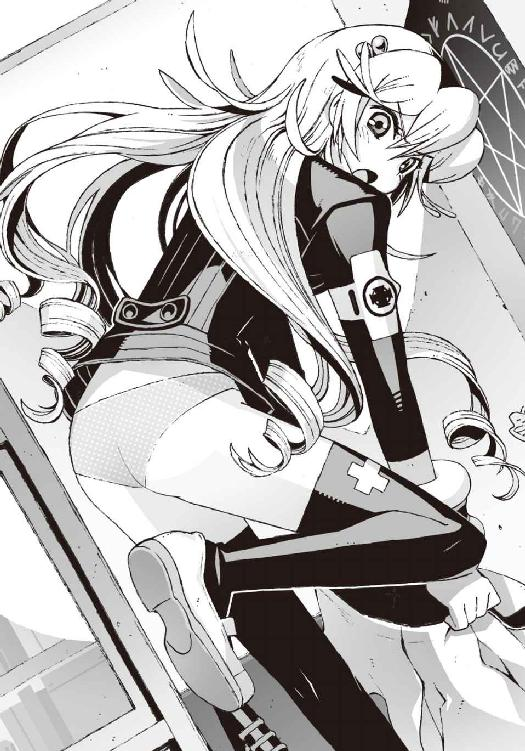

| アスラクライン（11） めぐりあい異世界 (電撃文庫) | |
| 三雲 岳斗 & 和狸 ナオ | |


本書（電子版）に掲載されているコンテンツ（ソフトウェア／プログラム／データ／情報を含む）の著作権およびその他の権利は、すべて株式会社アスキー・メディアワークスおよび正当な権利を有する第三者に帰属しています。
法律の定めがある場合または権利者の明示的な承諾がある場合を除き、これらのコンテンツを複製・転載、改変・編集、翻案・翻訳、放送・出版、公衆送信（送信可能化を含む）・再配信、販売・頒布、貸与等に使用することはできません。
φ プロローグ
それは見慣れたいつもの景色だった。
平和な住宅街に一軒だけ紛れこんだ不気味な建物。煉瓦造りの古い洋館。
庭には、冬枯れの桜の巨木が、取り残されるようにして立っている。
錆びついた門扉と、屋根に集まっているカラスの群れ。まだ日没前なのに陽当たりの悪い屋敷の周囲は薄暗く、どこか荒廃した雰囲気を醸し出している。
近隣の住人が幽霊屋敷などと呼んで恐れるのも無理はない、見るからに陰気な建物だ。
だがそれは、僕にとっては見慣れたいつもの景色だった。
鳴桜邸──それがその洋館の名前だ。
「なんか......悪い夢みたいだな」
本当に悪夢に出てきそうなデザインの門をくぐりながら、僕は小声で呟いた。
目の前にあるその建物は、僕の記憶の中では、すでに壊れて存在しないことになっている。大量の爆薬で、派手に吹き飛ばされたのだ。ほんの二日ほど前の出来事だ。
しかし今、僕の目の前には、壊れる前の鳴桜邸の姿があった。
かつて僕が住んでいたころと、ほとんど同じ外観のままだ。雑草に覆われた庭や、色褪せた煉瓦の壁も。中に入ったら、呪われて二度と出られなくなりそうな玄関扉も。
なにもかもが、僕の記憶の中の鳴桜邸と同じだった。
これが普通の現実だったらよかったのに、と一瞬だけ、僕は夢想した。
さっきまでの僕の記憶は、ただの長い長い悪夢──
いつもと変わらぬ姿で建っている鳴桜邸を見ていると、本気でそんな錯覚に陥りそうになる。
「なあ、操緒......」
僕は無意識に、いつもの口調で彼女を呼んだ。
しかし操緒の返事はなかった。いつでもどんなときも僕につきまとっていたはずの〝自称〟守護霊。かつて僕の幼なじみだった幽霊の少女の姿は、どこにもない。
その事実に、僕は否応なく現実を思い知らされた。
夢じゃない。
「............」
そう。あれが夢ではないことを僕は知っていた。
制服に隠れた僕の腕には、今も包帯が巻かれている。
非在化の発作を起こした嵩月を、介抱したときに負った傷だ。治りかけの火傷のむず痒い痛みが、僕の記憶が幻想や白日夢ではないことを伝えてくる。
朱浬さんは僕たちの目の前で殺された。
雪原瑶の機巧魔神《白銀》は破壊され、中に封印されていた副葬処女も消滅した。
僕が兄と呼んでいた男も死んだ。
そして僕の機巧魔神《 鐵》は大破し、僕の呼びかけに操緒は答えない。
鐵》は大破し、僕の呼びかけに操緒は答えない。
なのに僕は、悲しむことも取り乱すこともできずにいた。
あまりにも多くのことが一度に起きたせいで、心の一部が凍りついたようになにも感じない。
どうしようもなく異常で。唐突で。非現実的で。
それが、見慣れた鳴桜邸の姿に、僕が戸惑っている理由なのかもしれなかった。
僕の所持品は、わずかな現金の入った財布と、携帯電話──そして一本の鍵だった。
真鍮製の古びた鍵。爆破されて消滅した、僕の世界の鳴桜邸の鍵だ。
既視感に似た妙な気分を覚えながら、僕は目の前の玄関扉に鍵を差しこんだ。
鍵はあっさりと鍵穴にはまった。まるで最初からこの鍵穴に合わせて作られた本物のように。
やはり、ここは僕の知っている鳴桜邸と同じ建物なのだ。
そんなことを実感しながら、僕は玄関の扉を開ける。
無人の薄暗い邸内に、扉の軋む不気味な音が響き渡る。
屋敷の造りも、僕の記憶の中にある鳴桜邸とまったく同じだった。
勝手に屋敷に入ってもいいのか少しだけ迷ったが、ほかに行く当てもないのだから仕方ないと自分に言い聞かせる。
ここが僕の想像どおりの〝一巡目の世界〟だとしたら、おそらくここには誰も住んでいないはずだった。この屋敷の住人であるもう一人の僕──夏目直貴と呼ばれていた男は、この世界にはもういない。世界の境界とやらを破って、五年ほど前の〝二巡目の世界〟に移動したあとだからだ。
それでも──いや、だからこそ、この屋敷には手掛かりが残されている可能性が高かった。
一巡目のこの世界が滅亡した理由。そして、直貴が二巡目の世界でなにをしようとしていたのか──それを解き明かすための手掛かりが。
だが、
「うわっ......!?」
希望をこめてリビングのドアを開けた僕は、思わず声を裏返らせた。
雑然とした薄暗いリビングの中。窓からの夕陽に浮かび上がっていたのは、無数の瞳だ。
感情のない無機質な眼球が、無言で僕を見つめている。
その数は百。いや二百対はあるだろう。
金。銀。真紅。青。灰。純白。そして漆黒。
宝石のような輝きを放つ眼球が、部屋の壁をぎっしりと埋め尽くしている。
気の弱い人間なら、それだけでパニックに陥りそうな光景だった。まだ少し感情が麻痺している状態の僕ですら、動揺で心臓が激しく脈打っている。ここが見慣れた鳴桜邸の中でなければ、迷わず逃げ出していたところだ。
「に......人形？」
やがて薄闇に目が慣れて、僕もその瞳の正体に気づいた。
リビングの壁に所狭しと並べられていたのは、人形だった。豪華なドレスをまとった人形の女の子たちだ。大きさはまちまちだが、身長六十センチほどの個体がいちばん多い。それらはまるで本物の少女のように、棚の上に座って、瞬きもせずに僕を見下ろしている。
「なんで、こんな......人形なんか......？」
困惑気味に部屋を見回して、僕は頭を抱えた。まったく意味がわからなかった。
古びた洋館に、無数のアンティークドール。似合うといえば似合うのだけれど、マニアのコレクションとしても数が多過ぎる。これほど大量の人形をなんのためにかき集めてきたのか、まったく理由が想像できなかった。
この人形で商売しているというわけでもなさそうだし、第二生徒会の殺人人形のように、カラクリ仕掛けが内蔵されているという感じでもない。
ただ数が多いというだけで、なんの変哲もないただの人形だ。
もしかして〝一巡目の世界〟の僕は、重度の人形コレクターだったのだろうか。それはそれで、想像すると気分がずっしり重くなりそうだ。
「まさか......ほかの部屋もこんな感じになってるんじゃないだろうな」
僕は軽い不安を覚えて、あわてて次の部屋へと移動した。鳴桜邸は古くてボロい屋敷だが、とりあえず部屋数だけは大量にあるのだ。
「うっ......」
しかし隣の部屋に入った瞬間、僕は再び息を呑む羽目になった。
部屋の中に繰り広げられていたのは、またしても予想外の光景だったのだ。
そこにあったのは数式だった。
机の上に広げられたノート。そして、床に積み上げられた無数の洋書。その中にびっしりと書きこまれているのは、延々と続く長大な数式だ。
どう見ても高校生レベルの数学ではない。リーマン予想やヤン・ミルズ方程式が生ぬるく思えるくらいの、でたらめに複雑で難解な問題である。ノートの中だけでは飽きたらず、部屋の壁や天井にまで、読み方もわからない記号で描かれた怪しい数式が、細かい文字でぎちぎちに書き殴られている。どこか病的なものを感じさせる光景だった。
「なんだよ......これ......」
僕ははっきりと恐怖を感じた。
たしかに夏目直貴という男は、〝二巡目の世界〟では天才少年と呼ばれていた。
だが、今の僕にはそのトリックがわかっている。あの男は時間を遡って僕たちの世界に来た。つまりあいつは未来に起こる出来事を知っていたのだ。
だから直貴は、僕たちの世界では実用化されていない新技術をいくつも知っていたし、経済の動きも正確に予想できた。それが直貴の天才性の正体だ。
彼の正体が僕と同一人物である以上、頭のデキにそれほど差があるとは思えない。つまり直貴は、ハッタリとイカサマで天才を演じていただけの普通の人間だった──はずだ。
だがしかし、この部屋に書かれている数式は、ハッタリやイカサマでどうにかなるようなシロモノではなかった。こんなものをまともに読み解ける人間がいるとすれば、そいつは紛れもない正真正銘の天才だ。
どういうことだ、と僕は首を振った。この屋敷に住んでいたのは、夏目直貴──〝一巡目の世界〟の僕ではないのか。それとも人並みなのは僕だけで、本当にあの男は天才だったというのだろうか。その可能性はもちろん否定できないが、正直あまり認めたくはなかった。
兄弟どころか同じ人間なのに片割れだけが天才だなんて、心情的に納得いかないものがある。こんなものを操緒に見られたら、いったいなにを言われるか──
「くそっ......」
無意識に口の中で悪態をついて、僕は手近な壁を殴りつけた。
その直後、まるでそれに反応したように、どこか近くで音がした。なにか硬いものを投げ落としたような乱暴な物音だ。音源の方角は頭上だった。屋敷の二階からだ。
「誰か......いるのか......？」
その可能性に気づいて、僕は慌てて部屋を出た。廊下の壁にぶつかるようにして方向転換し、急傾斜の階段を駆け上る。この屋敷に出入りしているということは、少なくとも〝一巡目の世界〟の僕の身内か関係者のはずだ。だとすれば、そいつは間違いなくなにかを知っているはず。僕が元の世界に戻るためのなにかを──
今にして思えば、少し焦り過ぎていたのだと思う。
仲間とはぐれ、見知らぬ世界に飛ばされて、僕はひどく混乱していたのだ。
僕が〝二巡目の世界〟の鳴桜邸に住んでいたからといって、〝一巡目の世界〟でも同じとは限らない。そんな簡単な理屈さえ失念していたのだから──
「えっ......!?」
階段を上って正面の小部屋。かつて自分用として使っていた個室のドアを開け、そして今度こそ僕は絶句した。
そこは意外にも普通の部屋だった。勉強机とベッドだけが置かれた殺風景な個室。ありふれた高校生の勉強部屋だ。家具の配置も、僕の知っているこの部屋と同じ。だが、どうしようもなく違和感がある。あまりにも違和感が大き過ぎて、うっかり見落としそうになるほどに。
違和感の原因を見つけ出すのは難しくなかった。
そいつは窓際のカーテンレールに堂々とぶら下がっていたからだ。
モノトーンを主体にデザインされたミニスカートの制服。洛高の女子の制服だ。
その隣には部屋干し中の下着。
あまりの困惑に、僕はしばらく呆然と立ち尽くした。見間違いかと思って近寄ってみても、やはりそれは女物の下着だった。ギンガムチェックのパンツとブラ。まるで部屋の主の持ち物であるかのように、馴染んだ姿で洗濯バサミにつままれている。なぜこんなものがここにあるのかわからない。
そして僕が最初の動揺から立ち直れないでいるうちに、
「ん......んんっ......」
すぐ隣のベッドの上から声がした。小動物に似た妙に愛らしい声だ。
錆びた歯車のような動きで僕は振り返り、そしてようやくそれに気づいた。
ベッドの上で誰かが眠っていた。
その存在にすぐに気づかなかったのは、毛布の膨らみが目立たなかったせいだ。眠っていたのは小柄な少女だったのだ。
反射的に操緒の姿を連想したが、そうではなかった。眠っていたのは見知らぬ少女だ。
人形を思わせる白い肌と彫りの深い顔立ち。日本人ではないのかもしれない。控えめに表現しても、かなりの美少女だと思う。
寝顔のせいで幼く見えるが、年齢はおそらく十五、六歳といったところ。窓際にかかっている洛高の制服は、彼女の持ち物なのだろう。ナイトキャップをすっぽりと被って、だぶだぶのパジャマを着ているのが可愛らしい。
よく見れば彼女の枕元には、体温計や風邪薬の袋が転がっていた。昼間から彼女が寝ていた理由も、それでだいたいの予想がついた。問題は彼女が何者で、なぜ鳴桜邸で寝ているのかということだが──
「ん......誰......ママ？」
僕が心の準備を整える前に、ナイトキャップの少女が不意に目を開けた。
まだ少し寝ぼけたような眼差しで僕を見上げ、それから彼女は怪訝そうに首を傾げた。
僕の顔面から血の気が引いた。
今ごろになってようやく冷静に状況を把握する。もしここが僕の知らない異世界で、そしてこの屋敷に住んでいたのが、この世界の僕ではなかったとしたら。今の僕はまぎれもない不法侵入者ということにならないか？ しかもタイミングの悪いことに、僕がいる場所は見知らぬ少女の寝室で、ついでに僕の目の前にあるのはギンガムチェックのパンツとブラ。不法侵入に加えて、下着窃盗未遂の変質者というレッテルのおまけつきである。最悪だ。
「あ......」
目覚めた少女は、僕に気づいて、一瞬、怯えたような表情を浮かべた。そして唐突に目つきを険しくした。妖精じみた端整な美貌に、怒りに似た強い感情が浮き上がる。
「お、おまえはっ......」
「ちょ......ちょっと待ってくれ！ これはちょっとした手違い......そう、誤解なんだ......！」
ベッドの上に立ち上がる少女を見て、僕は慌てて逃げの体勢に入った。こんなところで騒ぎを起こしたくはなかった。ましてや警察沙汰なんてまっぴらだ。それでなくてもこっちは見知らぬ異世界に飛ばされた直後で、誰一人頼れない状況なのだ。逮捕されたりなんかした日には、身元不明者としてロクでもない扱いが待ってるに違いない。
「ま、待てっ......！」
しかしナイトキャップ少女には、僕を見逃すつもりはなさそうだった。部屋から逃げ出そうとした僕を追って、彼女は乱暴にベッドから飛び降りた。
そしてその場で派手にすっ転んだ。
まあ、病人が寝起きにいきなり走り出そうとしたら、そうなっても無理はない。けっこうな勢いで彼女は顔面を床に打ちつけ、「うむう......」と苦悶の声を洩らす。
大丈夫か、と僕は彼女を振り返ったが、助けに戻るわけにもいかないのだった。彼女のパジャマがあちこちはだけて、胸とか尻とかいろいろ見えている。この状況で彼女に近づいたりしたら、今度は痴漢に間違えられそうだ。
「あの......とにかく誤解だからっ......」
僕は最後にそれだけ言い残して、鳴桜邸を飛び出した。
外は雨が降り出していた。霧のような細かい水滴が、鳴桜邸を出た僕の制服に染みこんで、体温を容赦なく奪っていく。
鳴桜邸の玄関前の地面には、すり鉢状の大きな穴が開いていた。隕石の落下痕を思わせる、深さ一メートルほどの見事なクレーターだ。
クレーターの直径は、四、五メートルほど。巨大だが、完全な円形というわけではなかった。
真上から見なければ気づかないが、それは巨大な人の形をしていた。
鎧を着こんだ機械仕掛けの人形──機巧魔神によく似た形を。
「......鐵......」
僕は、ぼそりと自分の機巧魔神の名を呟いた。
考えてみれば当然のことだ。普通なら、世界間を移動するような力の暴走に巻きこまれて、無傷でいられるはずがないのだ。それなのにこうして僕が生きていられるのは、《鐵》が僕を守ってくれたからだった。あの漆黒の機巧魔神は、戦いで傷ついたボロボロの状態で、それでも最後まで僕を守ってくれたのだ。このクレーターは、おそらくその名残なのだろう。
だけど、それは逆に言えば、《鐵》が守ることができたのは僕だけだった、ということなのかもしれない。あのとき、僕と一緒に機巧魔神《鋼》の暴走に巻きこまれた嵩月やアニアが、どこに行ったのか僕にはわからない。彼女たちが今も無事でいるという保証も、ない。
「どうしろってんだよ......くそっ......」
ひどく手詰まりな気分を感じながら、僕は呻いた。
この世界の鳴桜邸に住んでいたのは、僕の知らない少女だった。おまけに初対面の印象は、最悪だ。当分は近づけそうにないし、どのみち〝一巡目の世界〟の僕の手掛かりがつかめないのなら、僕が再び鳴桜邸を訪れる理由もない。
それよりも僕を打ちのめしていたのは、この世界には、僕を助けてくれる人間が誰一人いないという事実だった。この世界の僕には兄貴はいない。操緒も嵩月ももういない。洛高の生徒会長たちは、悪魔なんかとは無関係の一般人で、それは朱浬さんも同じだろう。杏や樋口たちに頭を下げて頼めば当面の生活はどうにかなるかもしれない。だが、佐伯兄たちの言葉を信じるなら、あと半年も経たないうちに、この世界は滅びてしまうのだ。
これまでも散々非常識で過酷な状況を経験してきたが、今回はさすがに条件が悪過ぎた。
自分がどこに行けばいいのか、なにをすればいいのかさえもわからない。だからといって、じっとしていると不安で押し潰されそうになる。
「どうすればいいんだ......なあ、操緒......」
僕は無意識に、僕につきまとっていた幽霊の少女の名前を呼んだ。
いつの間にか陽が落ちて、街は薄闇に包まれ始めていた。
たとえ異世界といえども十二月の風は肌に冷たく、街灯の光はいつになく暗く感じられた。
そんな頼りない光に照らされて、僕の足下に小さく歪な影が揺れている。
僕は弱々しく溜息をついた。
彼女の声が聞きたかった。
一章
あまりにも急激に落ちこんだせいか、ドン底まで気分が沈んだあとは立ち直るのも早かった。
濡れた服を乾かすために立ち寄った駅前のバスターミナル。一人でウジウジ思い悩むのにも飽きて、僕は、自販機で買ったスタミナドリンクをヤケ酒気分で乱暴に飲み干す。
無性に腹が立ってきたのは、急激に上昇した血糖値の副作用だけではないだろう。
真剣に悩むまでもなく、わかりきっていたことだった。
なぜ僕がこんな理不尽な体験をしなければならないのか？
なぜここまで不幸な目に遭わされなければならないのか──？
そう。僕は自分のことを不幸だと思っていた。今日までは。
生まれて初めて乗った飛行機が海に落ちたのも、幼なじみの同級生が幽霊になって僕に取り憑いていたのも、僕が不幸体質だからだと。
だけど、違った。少なくとも、今は。
仲間を殺され、機巧魔神を破壊され、僕がたった一人きりで異世界に飛ばされたのは、不幸体質なんかが原因じゃない。
もっとシンプルで残酷な理由だ。
敵がいるのだ。
僕のこの不幸は、そいつが仕組んだことなのだ。
夏目直貴。
いや、夏目直貴という名前で呼ばれていた男。
己の願いを叶えるためだけに、機械仕掛けの人造の悪魔の力を借りて、異世界から来たもう一人の僕──
そいつが、敵だ。
塔貴也も鳳島氷羽子も、結局は、直貴が引き起こした災厄に振り回されているだけだ。
すべての災いの元凶は、夏目直貴と呼ばれていたあの男だ。
そしてここは、その男が生まれた世界なのだ。
ならば、僕がやるべきことははっきりしている。
やつと戦う。
あまりにも単純明快過ぎて、それに気づくのにずいぶん時間がかかってしまった。
正解かどうか不安になるほどわかりやすい答えだ。だがもう迷う必要はない。どのみち今の僕には、ほかにできることなどなにも残されていないのだから。
やつが僕から奪おうとしたものをすべて取り戻す。この世界の僕が手に入れた以上の力を手に入れて、もう一度、〝二巡目の世界〟に戻る。そして、彼の死を食い止めるのだ。
もしそれが必要ならば、この世界を滅ぼしてでも──
「つっても......どうやったらそんなことができるのか、さっぱり見当がつかないんだけどさ」
スタミナドリンクの空き瓶をゴミ箱に投げ入れながら、僕は苛立ちの吐息を洩らす。
とりあえず手掛かりがまったくないわけではない。
環緒さんから聞いた話が事実なら、直貴が機巧魔神《鋼》の能力を使って〝二巡目の世界〟に移動したのは、ごく最近の出来事のはずだ。
だったら、こっちの世界での直貴の生活の痕跡を探れば、元の世界に戻る方法を調べることができると思われた。いくらなんでも、やつが一人で、機巧魔神なんてものを造れるとは思えない。おそらくこっちの世界には、直貴の協力者がまだ誰か残っているはずなのだ。
すると、まず調べなければならないことは──
「あいつの住所か......」
僕は腕を組んで唇を尖らせる。やつが鳴桜邸に住んでてくれたらだいぶ話が早かったのだが、こっちの世界で、あの洋館に住んでいたのは、見知らぬ外国人のナイトキャップ女だった。
あの子が何者なのかは知らないが、部屋の中の様子からして、彼女が何年も前から鳴桜邸に住んでいたのは間違いなかった。この世界の鳴桜邸の住人は、夏目智春ではなく、あのナイトキャップ女なのだ。おまけに彼女は僕のことを、おそらく下着泥棒かなにかと勘違いしているはずだ。鳴桜邸にはしばらく近づけそうにない。
こっちの世界の杏や樋口と会って情報を聞き出すという手もあるが、できれば彼らを巻きこみたくはなかった。僕が、彼らの知っている夏目智春ではないことを、連中に気づかれるのはなるべく避けたい。
まあいいか、と僕は息を吐く。〝一巡目の世界〟のオリジナル夏目智春の住み処を探し当てるのは、それほど難しいことではないだろう。洛高に行けばやつの知り合いがいるはずだし、クラス名簿を手に入れれば住所は簡単に調べられる。
「って......こんなことなら最初から洛高に行ってればよかったんだよな」
ようやくそのことに気づいて、僕は軽く頭を抱えた。
時刻は五時少し前。空はすでに薄暗くなっている。洛高の生徒のほとんどは、とっくに下校している時間帯だ。なんだかんだで一時間半近く意味もなく落ちこんでいた計算になる。
バスターミナルなんかで時間を潰していないで、ほかの生徒が居残ってる間に洛高に顔を出していれば、オリジナル智春の住所を調べるのは簡単だった。だが、今からではもう手遅れだ。
こんなところで、人生に疲れたサラリーマンみたいにスタミナドリンクを飲んでる場合ではなかったのだ。
「くそ......」
操緒がいれば、と僕は思った。あののんきな自称〝守護霊〟が傍にいてくれたら、たぶん僕が立ち直るのはもっと早かった。その代わり、こんな僕の間抜けさを、語彙を尽くして罵ってくれていただろうけれど。
だが今はあの自称〝守護霊〟の少女はいない。
「............」
ふと、環緒さんが最後に僕に告げた言葉を思い出す。
あなたには操緒がついてるわ──
彼女はたしかにそう言い残してくれた。その言葉の意味はよくわからない。だが、環緒さんは、《鐵》は異世界への移動に耐えられるとも言っていた。彼女の言葉を信じるなら、操緒は今もきっと無事でいるはずだ。心配しなくても、案外いつもみたいにひょっこりと、何事もなかったような顔をして復活してくるかもしれない──そうであって欲しかった。
やれやれ、と僕は首を振る。
目の前の乗り場に、回送のバスがやって来て止まる。
そんな些細なことがきっかけだった。
その瞬間、僕の脳裏に浮かんだのは、操緒ではなく、いつも困ったような顔で微笑んでいた黒髪の少女の姿だった。
「......っ」
僕はきつく唇を噛んだ。無意識に強く握りしめた指先が、鈍い痛みを訴えてくる。
その直後、背後から声が聞こえてきた。僕を嘲るような、無邪気に明るい声。
「あの人、変じゃない？ さっきから一人でブツブツ言って溜息ついて。キモ......」
「ちょっとあんた声大きい、聞こえるって」
のろのろと声のほうを振り返ると、見知らぬ二人組の女子高生が、僕と目を合わせないようにして離れていくのが見えた。僕は自嘲気味に溜息をついた。ここ何年か、操緒がいつも隣にいたせいで、独り言のクセがついていたらしい。黙って考えをまとめているつもりで、思考がダダ洩れになっていた。
「............」
僕は居心地の悪い気分で立ち上がると、そのままバス乗り場のほうへと歩き出した。
女子高生たちの悲鳴が聞こえたような気がしたが全力で無視。少し待ってやって来たバスに、定額運賃を払って乗りこむ。正直少し傷ついたが、彼女たちのおかげで覚悟が決まった。
バスの行き先は北有紗方面。潮泉老人の屋敷のある方角だった。
あの常軌を逸した大豪邸の裏庭には、嵩月奏が下宿している庵がある。僕はそこに行かなければならないのだ。
「嵩月......」
彼女の名前を呟くと、心臓を握りつぶされそうな不安が襲ってきた。
塔貴也の《鋼》の暴走に巻きこまれたのは、おそらく僕と操緒だけではない。あのとき鳴桜邸にいた嵩月とアニアも、僕と同様に、この世界に飛ばされているはずだった。
しかし、彼女たちが無事だという保証はなかった。僕は《鐵》に彼女たちを守るように命じたが、僕自身、途中で意識を失って、それが成功したかどうかはわからない。
それでなくても嵩月は、鳳島氷羽子との戦いで、非在化の発作を起こしていたのだ。
過剰な魔力の放出で、嵩月の肉体は消滅しかけていた。あんな状態の嵩月が、異世界への移動の衝撃に耐えられるのかどうか僕にはわからない。僕が目を覚ました鳴桜邸の前に、嵩月たちの姿がなかったことも不安をそそる。
「ああ、くそっ！」
僕は髪をかきむしりながらバスの座席で背中を丸めた。運転手が気味悪そうな目で僕を見ていたが、それを気遣っていられるほどの精神的余裕はなかった。
本当は、僕がバスターミナルなんかに長居していたのは、服を乾かすことだけが目的ではなかった。僕はもっと早く嵩月を捜しに行かなければならなかったのだ。
嵩月が、無事にこの世界に辿り着いているのなら、彼女は潮泉家の裏山に戻るはずだった。傷ついた嵩月が身体を休められる場所は、おそらくそこ以外にないからだ。
だが、もし嵩月が戻っていなかったら──
それを確認するのが恐くて、僕はバスに乗りこめずにいたのだ。
どうせなら下宿に戻る途中の嵩月と、バスターミナルでばったり会えたらいいと思っていた。嵩月が下宿に戻るなら、彼女も必ずそこでバスを乗り換えるはずだからだ。
しかし結局、嵩月は現れなかった。
もちろん、それだけで嵩月の身になにかがあったと決めつける必要もない。交通手段なんてほかにいくらでもある。落ち着け、と僕は自分に言い聞かせる。
とにかく今の僕にできるのは、潮泉老人の屋敷に行って嵩月の安否を確認することだけだ。
そこで嵩月に会えればそれでいい。たとえ嵩月が不在でも、一人で捜し回るよりは潮泉の爺さんや律都さんに協力してもらったほうがいいに決まっている。
目的地に近づいて、バスの降車ボタンを押す。
そのとき僕はふと、奇妙な違和感を覚えた。バス停の地名は間違っていないはずだが、窓の外の景色に見覚えがない。
しかしそれを疑問に思う間もなく、バスが停車した。僕は慌ててバスを降りた。
僕の背後でドアが閉まって、バスはそのまま慌ただしく走り去っていった。
潮泉家の屋敷は豪邸だ。延々と続く白壁の土塀と、広大な裏山は、このあたりから嫌でも目に入ってくる。道に迷うことなどあり得ない──はずだった。しかし、
「って......なんだよ、これ......」
バスが走り去った方角を振り返って、僕は呆然と立ち尽くす。
そこには潮泉家の豪邸も、広大な裏山も見当たらなかった。
代わりに目の前に広がっていたのは、コンクリートの塀に取り囲まれた見慣れない建物群。
まるで軍事基地を彷彿とさせる、近代的で不気味な研究施設だった。
○
周囲を歩き回って何度も確認したが、地名は間違っていなかった。ここは、間違いなく潮泉家の屋敷があった場所だった。少なくとも僕の世界では──だが。
研究所は高い塀で囲まれて、中の様子はほとんど窺い知れなかった。入口には刑務所を思わせる看守つきのゲート。どう考えても気軽に入っていける雰囲気ではない。近くに案内図ぐらい出ているかとも思ったが、実際には施設名の看板さえ出ていなかった。
それでも諦めきれずに、あてもなく周囲をうろついていると、道路脇に自転車を止めている男を見つけた。三十代くらいのサラリーマン風のオッサンだった。自販機でタバコを買ってる最中らしい。なるべく愛想のいい笑顔を浮かべて、僕は彼に話しかけた。
「あの......すみません。この近くで潮泉さんというお宅をご存じないですか？」
「いや」
オッサンは面倒くさそうな表情を浮かべて首を振る。
「その人、ここの職員なの？」
「いえ......たぶんそうではないと思いますが」
あの渦巻き爺さんは、軽く見積もっても余裕で還暦を超えているし、この手の施設の職員という柄でもない。そもそも、あれだけの金持ちが、働く必要なんてないだろう。
オッサンは、自販機に小銭を放りこみながら、少し怪訝な口調になって、
「このあたりに民家なんてあるのかな」と言った。「この施設を造るときに、近所の人たちは立ち退いたんじゃないかと思うけど」
「立ち退き？」
「二十年くらい前の話かな......俺が小学生のときにはもう工事が始まってた」
はあ、と気の抜けた声で呟いて、僕は建物のほうを振り返った。
「ここって、なんの施設なんですか？」
「俺もよく知らないんだ。放射線だかなんだかの研究所じゃなかったかな......建設する前に、けっこう派手な反対運動もあったみたいだし」
オッサンは目的のタバコを買うと、歩道に止めていた自転車に跨った。
僕は平静を装いながら礼を言って別れたが、オッサンの姿が見えなくなると、反動で激しく落ちこんだ。ここが僕の知らない世界だということを、ようやく自覚させられた気分だった。
「二十年前......放射線......か」
オッサンから聞き出したキーワードは、潮泉老人とは結びつかないものばかりだった。僕は肩を落として歩き出す。この施設から老人の行方を辿るのは、諦めたほうがよさそうだ。そこまで苦労してあの爺さんの行方を捜したところで、そこに嵩月がいるという保証もない。
「ほかに心当たりは......学校と......朱浬さんの教会か」
朱浬さんの名前を思い出したとき、僕の胸を、痛みに似た感覚が走り抜けた。
正直、今でもあまり実感が湧かない。だが、たしかに僕たちの目の前で朱浬さんは死んだ。橘高冬琉と、氷羽子の使い魔に殺されたのだ。僕の中の感覚では、朱浬さんの自宅の教会を出て、まだ一日も経っていない。それなのに朱浬さんはもういないのだ。
それを思うと、あの教会を訪れるのはかなりの勇気が必要だった。
それでも、ほかに嵩月やアニアが行きそうな場所の心当たりはなかった。
雨はもうやんでいた。僕はうろ覚えの地理感覚を頼りに、教会に向かって歩き出す。幸い、例の謎の施設を除けば、僕の知っている街並みとは、たいして違っていなかった。
バスを使わずに歩いたのは、交通費を節約するためだった。
今のところ財布の中身にはまだ余裕があるが、この先のことを考えれば、所持金はなるべく温存しておくべきだろう。なにしろこちらの世界では、僕には今夜眠る場所すら与えられていないのだ。最低限の衣食住を確保するまで、金を使わずに済むならそれにこしたことはない。
朱浬さんの教会がある場所は、あまり治安の良くない繁華街の外れだった。
そのあたりの雰囲気は、こちらの世界でもあまり変わっていなかった。
しかし苦労してようやく辿り着いた教会の前で、僕は違和感を覚えて立ち止まる。違和感というか悪寒というか、本能的な恐怖に近い感覚だ。
教会の外観は、むしろ僕の記憶の中にあるものよりも小綺麗だった。
それは悪いことではない。しかし教会の前には、なぜか尼僧服を着たシスターが立っていて、道行く人々ににこやかに手を振っている。〝二巡目の世界〟では考えられない光景だった。宗教活動の勧誘という雰囲気ではなかったが、もっと怪しいなにかを連想させる姿だ。
客引きをしているのがこちらの世界の朱浬さんだったら良かったのだが、あいにくシスターは朱浬さんよりも小柄だった。どこか気品を感じさせる、優しげなその横顔に見覚えがある。思いがけない人物だった。
「姫笹さん......!?」
僕は驚いて彼女の名を呟く。第二生徒会会長、倉澤六夏のパートナーで、機巧魔神《翠晶》に封印されていた副葬処女──
そこにいる彼女は幽霊ではなかったが、間違いなく姫笹さんと同じ顔だ。
「あの......」
僕はなにも考えず彼女に駆け寄った。振り返ったシスターは、そんな僕を見てにっこりと微笑。そして妙に慣れた営業的な口調で言った。
「いらっしゃいませ。お一人様ですか？」
「え？ あ......はい」
僕は混乱して素直に答える。わかりました、と彼女は頷き、
「おタバコは吸いませんよね？」
「はあ」
特に否定する理由もないので頷いておく。なんなんだ、この反応は？
彼女が六夏と同い年なら、姫笹さんは僕よりも二学年上だ。つまり、もうすでに洛高を卒業している計算になる。こちらの世界のオリジナル智春が姫笹さんと知り合いではなくても、不思議なことはなにもない。が、
「禁煙席お一人様でーす」
そんな言葉とともに教会の中に連れこまれそうになり、僕は慌てて首を振った。
「ちょ......ちょっと待ってください、姫笹さん！」
「え？」
シスターが、ちょっと驚いたように瞬きした。
「姫笹さん......ですよね？ 倉澤六夏の射え......お友達の......」
「あ、六夏ちゃんのお知り合いですか？ だったら......」
そう言ってすぐに営業スマイルに戻るシスター。僕は、背後を振り返ろうとする彼女の腕を握って、
「違います。そうじゃなくて......なんなんですか、ここは？ この教会には朱浬さんが住んでるはずじゃ──」
「こらそこ！ シスターに手を触れない！ 握手は別料金！ ボディタッチは割り増しよ！」
そのとき教会の扉の奥から、耳慣れた怒声が聞こえてきた。
大股に歩いて出てきたのは、性格のキツそうな美貌の女子だった。彼女の尼僧服はミニスカート風にアレンジされていて、白地に金の刺繍。頭巾はなし。どう見ても本物のシスターではなかった。コスプレだ。
「六夏ちゃん......」
姫笹さんが彼女の名前を呼んだ。倉澤六夏は、そんな姫笹さんの額をこつん、と叩いて、
「こぉら、あんたも。あたしのことはオーナーと呼びなさい」
「......オーナー？」
僕は唖然とした口調で呻く。オーナーとはいったいなんの話だ。いくらなんでも六夏みたいなのが、この教会の司祭ってことはないと思うが──
「あら、あなた」
その六夏が、呆然と立ち尽くしている僕に気づいて目を細めた。面白いものを見つけた、と言わんばかりにニヤリと笑って、
「たしか夏目智春......だっけ？ 制服のままこんなところまで来るなんて、あんたも好きねえ」
「え......なんのことですか？」
さすがになんのことだかわからない。ただ悪い予感だけが膨らんでいく。今すぐにここを離れるべきだと、原始的な本能が警鐘を鳴らしている。
しかし、警戒する僕の腕を、六夏は強引につかんで引き寄せ、
「ここまで来といて、なにとぼけてんのよ。ほら、案内したげるから、さっさと席について注文しなさい。その子と話がしたかったら指名料払いなさいよ」
「指名料......？ 注文って、ここ、教会じゃないんですか......？」
なんだそのいかがわしい店のような響きは。
六夏は、腰に手を当てて呆れたように溜息をつき、
「なに言ってんの、あんた。表の看板みなかったの？」
「看板？」
「ここは尼僧カフェよ」
「に、にそう......カフェ？」
「清貧で貞潔なシスターたちが、世の中の迷える子羊たちに、リーズナブルな価格でもれなく美味しいコーヒー紅茶と軽食を恵んでくれるという、ある種の地上の楽園よ」
「はあ......」
要するにあれか、メイド喫茶のバリエーションか。本物の教会の建物を改装して、喫茶店を経営しているというわけだ。なんとなく罰当たりな気がしなくもないが、よく見ると、店内は常連客とおぼしき人々でけっこう賑わっている。
なんにせよ、あまり関わり合いにならないほうが良さそうだ。咄嗟に僕はそう判断して、
「じゃあ、僕は急ぎますので、これで」
「ちょっと待てい！」
制服の首根っこをいきなりつかまれた。六夏は無理やりな笑顔を僕に近づけ、
「せっかく来たんだから、なんか食べていきなさいよ」
「いや、でも六夏会長がここのオーナーなんですよね？」
「そうよ。まあ、高校も卒業したことだし、手始めにね。ゆくゆくは店舗を拡大して、全国にチェーン展開する予定。事業計画も完璧よ。この卓越した経営手腕に我ながら惚れ惚れするわ」
「............」
どうやらこっちの世界でも、六夏の基本的な性格は変わってないらしい。絶対にまともな経営ではあるまい。
「注文は決まった？ いちおう言っとくと、うちの店はドーナツ食べ放題コースがオススメよ」
「そうですか。では、僕はこれで」
ドーナツ食べ放題って、あんな甘ったるいものを平気で何十個も喰えるのはアンタだけだ。とにかくこの店には近づかないほうがいい。そう決意して逃げ出そうとした僕の背中に、
「ちょっと待ちなさいよ。もしかして、あんた、悩みでもあるの？」
六夏が唐突に訊いてくる。予想外だった彼女の言葉に、僕は思わず足を止めた。
「ええまあ......悩みといえば悩み、なのかな」
「ふうん......よかったら相談に乗るわよ」
そう言って彼女は、店の奥にある小部屋を指さした。椅子がひとつ置かれただけの、木箱のような狭い部屋だ。奥の壁には、鉄格子で仕切られた小さな窓がついている。
「なんですか、あの、西部劇に出てくる拘置所の面会室みたいなの」
「懺悔室よ。うちの店の名物なの。心優しいシスターが、お客様の罪の告白を聞いたり、悩みの相談に乗ったり」
「シスターっていうか......この店の店員ですよね？」
「まあね」
悪びれもせずに胸を張る六夏。聖職者でもなんでもない、ただのアルバイターではないか。
「まさか、それで客の秘密を握って脅迫したりしてるんじゃ......」
「そこまではしないわよ。プライバシーは守るっての。タイアップしてる結婚紹介所や病院をさりげなくオススメするくらいで」
「............」
それもけっこうひどい話だと思ったが、六夏のやることにしては、まだ良心的なほうだった。
まあ、世の中、誰かに聞いてもらうだけで解決する悩みもあるだろうし、結果的に相談者が満足しているのなら、僕が文句を言う筋合いでもない。
「で、どうすんの？ あたしになんか訊きたいことがあるんじゃないの？」
「ええ、それはまあ......」
たしかに話が聞けるのはありがたいのだが。
ぎこちなく肯定する僕を見て、六夏はよしよしと満足げに頷いた。
なんだかんだで面倒見はいい人なんだよな、と僕が油断してしまったのは、見知らぬ世界に飛ばされた直後で弱気になっていたせいかもしれない。
「おっけー。ちなみに懺悔室使用料金は三十分で千円よ。延長料金は十分ごとに三百円」
「げっ、金とるんですか!?」
別料金かよ、と驚く僕を、六夏は呆れたような顔で睨む。そういえばこういう人だった。
「ったりまえじゃない。こっちは商売でやってんだってば。はーい、懺悔室一名様ご案内ー！」
僕は六夏に腕をつかまれたまま、懺悔室のほうへと連れこまれる。
教会の建物の入口では、姫笹さんが柔らかな笑顔で、行ってらっしゃいと手を振っていた。
○
入口の扉を閉めてしまうと、懺悔室の中は予想以上に狭かった。
僕は渋々と、鉄格子で仕切られた窓に向かって座った。鉄格子の下には高さ十五センチほどの隙間があって、そこから冷水とおしぼりが差し出されてくる。本当に拘置所に閉じこめられた気分だった。弁護士がつくぶん、拘置所のほうがマシかもしれない。
「で、注文したのはコーヒーだけ？ しけてるわね」
壁の向こうから六夏の声が聞こえてくる。
「ほっといてください。お金ないんですから」
僕は無愛想な口調で答える。考えてみれば、なぜ僕はお金を払って、こんな狭苦しい部屋に閉じこめられなければならないのだ。なにか騙されているとしか思えない。
「はい。これはあたしのおごり」
再び六夏の声がして、鉄格子の下の隙間から皿に山盛りのドーナツが差し入れられてくる。僕は思わず悲鳴を上げた。六夏がタダでものをくれるなんて信じられなかった。また罠か？
「なによその反応。安心なさいな、廃棄処分しようと思ってた残りものだから」
「はあ......ありがとうございます」
そういうのもおごりというのかなあ、と悩みながら、僕はありがたくドーナツを手に取った。そういえば腹も減っている。
「で、なによ、あたしに訊きたいことって？」
注文のコーヒーが運ばれてきたところで、六夏がぞんざいな口調で訊いてきた。
僕は返事をためらった。なにから質問すればいいのかわからなかった。この世界の六夏は、機巧魔神の演操者ではない。〝二巡目の世界〟だの悪魔だのとは無関係に生きてきたのだ。いきなり本当のことを話しても、変なやつだと思われるだけだ。まずは当たり障りのない質問から、うまく情報を引き出さなければ。
なにか自然な質問はないかと僕は必死で考え続け、そして思わず口をついて出てきたのは、
「あの......今はいつですか？」
「はいぃ？」
思いっきり不自然に思われたらしい。
「いつって......今日は十二月十七日でしょ。たしかあんたたちの学校って、来週はクリスマスパーティやるのよね。それがどうかしたの？」
「あ......いえ、すみません間違いました」
とりあえず話を変えることにする。
「あの、六夏会長、黒崎朱浬のことは覚えてますか」
「だから会長じゃなくてオーナーと呼べっての......忘れるわけないじゃん、あんな目立つ女。生徒会の副会長やってんだっけ？」
「生徒会......副会長？」
意外な情報に僕は目を丸くする。朱浬さんが生徒会役員ということは、こっちの世界には、科學部が存在しない可能性が高そうだ。
「佐伯のところのボンボンが会長なんでしょ。もうすぐ引退のはずだけど......どうしたの？」
「あー......いや、ちょっとカルチャーギャップで軽い頭痛が......」
〝二巡目の世界〟ではしょっちゅう銃撃戦を繰り広げていたあの二人が、こちらでは仲良く生徒会活動なんかやってるのか。べつに文句はないが、どうも実感がわかない。
「で、黒崎朱浬がどうかした？」
「えーと......この教会は朱浬さんの自宅だったんじゃないんですか？」
わけもなく声を潜めて僕は訊いた。
鉄格子の向こうで、六夏が困惑する気配が伝わってきた。
「なによそれ？ 新手の地上げ？ 黒崎なんか知らないわよ。この教会にはもともと後継者がいなくて、解体されるはずだったところをあたしが安く買い叩いたんだから」
「はあ......」
そういえば、こっちの世界の朱浬さんはもっといい家に住んでたというようなことを、環緒さんの口から聞いた覚えがある。ここに来ても、僕が朱浬さんに会えるはずはなかったのだ。
だとすれば、嵩月やアニアがここには来る確率も、絶望的に低そうだった。
「あんたの悩みってそんなことなわけ？ もしかして黒崎朱浬のこと狙ってるの？」
六夏が少し呆れたような声で訊いてくる。
「いえ、そういうことではないんですが」
真面目に取り合うのも馬鹿馬鹿しかったが、いちおう否定しておいた。
「ふーん。あの女はやめといたほうがいいと思うけどね。そりゃまあ見てくれだけはちょっといいかも知れないけど、あんたの手に負えるような相手じゃなくない？」
「いやだから、そういうんじゃないんですってば」
「あ、そうなの？ だったらなによ、あんたの悩みって？」
「え？ それはその......」
困った。朱浬さんの情報をこれ以上引き出すのは無理そうだし、かといって、ほかに質問も思いつかない。六夏がどこまで知っているのか、そろそろ真面目に確認したほうがいいのかも知れないと思う。しかし、
「あー......つかぬことをうかがいますが、六夏会長、機巧魔神という言葉に聞き覚えは？」
「アスラ・マキーナ──？」
六夏が声を低くした。僕はすぐに後悔した。いくらなんでも直球過ぎた。もう少し周辺からやんわりと情報を引き出すべきだったか。
僕はじわりと汗の滲んだ掌を握りしめた。そして六夏はいつになく真剣な口調で、
「アスラマキーナ......ってパキスタンの首都だっけ」
「......それはイスラマバードです」
僕は脱力してその場に突っ伏した。六夏は不機嫌そうに鼻を鳴らすと、
「思い出した。イエメン産のコーヒー豆でしょ。豊かな酸味とまろやかなコクが特徴です」
「それはマタリ・アールマッカ......って、全然似てないじゃないですか！」
「なによ、どうせ似たようなもんでしょ」
六夏が拗ねたような声を出した。僕は深々と嘆息し、
「もういいです......じゃあ、副葬処女や、使い魔ってのもわかりませんよね」
「......それってなにかの隠語なの？」
六夏が溜息混じりに訊いてくる。
「なに勘違いしてるのかしらないけど、この店は非合法のクスリとかは扱ってないからね」
「誰もそんなものは期待してません」
「じゃあなんなのよ、もう！」
逆ギレ気味に六夏が喚いた。ドン、と壁を乱暴に蹴りつける音もする。
「あの......だったら洛高のことを教えてください」
僕は慌てて取りなすように言った。
「はぁ？ べつにいいけど、なにが知りたいわけ？ 学校の怪談でも聞きたいの？」
「いや、そういうんじゃなくて......たとえば去年の僕のことで知ってることがあれば聞かせて欲しいんですけど......そもそも六夏会長はどうして僕と知り合いなんでしたっけ......？」
鉄格子の向こうで、短い沈黙があった。
「なに言ってんのかわかんないけど、あんた記憶喪失なの？」
「それは......当たらずとも遠からずというか......」
「それともまさか......あんた、あたしを口説こうと思ってる？」
「いやいやいや、それは全然違います！」
僕は慌てて否定した。壁越しに六夏の失笑が聞こえてくる。
「まあいいけどね......あたしがあんたのことを知ってる理由は簡単よ。あんたが有名人だから。もしかして自覚なかったの？」
「有名人......？ 僕が？」
なんとなく嫌な予感がした。幽霊憑きとして級友たちに恐れられていた、中学のころの記憶が甦ってくる。六夏は、うーん、と考えこむように呟いて、
「あんたがっていうか......まあ、有名なのは、あんたの彼女のほうか」
「彼女!?」思いがけないその言葉に声が裏返る。「......って誰ですか？」
なんでこっちの世界の僕にだけ彼女がいるんだ、と疑問に思うよりも先にムカついてきた。直貴に彼女がいたなんてことは環緒さんも言ってなかったのに。
六夏はそんな僕の反応をせせら笑い、
「なにを今さら誤魔化そうとしてんのよ。あんだけいつもべったり一緒にいたくせに。あんな目立つ女と校内でいちゃついてたら、それは有名にもなるわよ」
「え!?」
ますます混乱してきた。いったい誰のことを言ってるんだ。
いつも一緒にいる、と言われて思い当たるのは操緒だが、こっちの世界の彼女は幽霊ではないはずで、上級生にまで知れ渡るほど有名になるとは思えない。すると嵩月のことを言ってるのだろうか。しかし校内で僕といちゃつく嵩月というのも、今イチ想像するのが難しい。ほかに彼女と間違われそうな心当たりといえば、杏くらいか。佐伯妹──はないと思うが、目立つといえば彼女はある意味かなり目立つ。
「すみません。マジでど忘れしちゃったみたいなんですけど......僕の彼女って何者ですか」
覚悟を決めて訊いてみる。できれば知りたくない気もしたが、早めに確認しておかないと、あとでどんなトラブルに巻きこまれるかわかったものではない。
「ちょっと......それ本気で言ってるの？ なんであんたの彼女のことをあたしがあんたに説明しなきゃなんないのよ？」
「いや、お気持ちはよくわかりますけど......そこをなんとか」
しょうがないわね、と六夏が鉄格子の向こうで舌打ちする気配があった。
「まあべつにいいけど、怒んないでよ。あんたの彼女をひとことで説明するなら、あれは──」
「......は？」
六夏の言葉に、僕は耳を疑った。聞き間違いかと思ってしばらく呆然とする。
それから困惑して頭を抱えた。
あれは魔女よ──それが六夏の答えだった。
○
トレードマークは流れるような縦ロール。帰化日本人の美人女子高生。通称──〝魔女〟
それがどうやら僕の彼女だと認識されている人物らしい。
「本名は、たしかダイアナとか呼ばれてたはずよ。すごい金持ちっぽい名字だったと思ったけど。新聞だか雑誌みたいな感じの」
六夏はかったるそうな口調でそう説明した。
ダイアナさん（仮）。外国生まれの同級生。ぬるくなったコーヒーをすすりながら、僕は薄暗い懺悔室で首を傾げた。心当たりがまったくない。
「すみません。それだけの情報だと、さっぱりわからないんですが」
「仕方ないじゃん。普段から魔女としか呼ばれてなかったし」
「はあ......魔女ですか」
自称〝守護霊〟とか、自称〝悪魔〟とか──たいていの人外の存在とは知り合いのつもりだったが、魔女というのは初耳だった。
しかも噂では、そいつは、こっちの世界のオリジナル智春の彼女らしい。なぜよりによって、そんな面倒くさそうな相手を彼女に選ぶのか。
「ってか、だいたい魔女ってなんなんですか。箒でも持ち歩いてるんですか？」
「なんであたしに文句言うのよ。あんたんとこの彼女でしょうが」
「う......いや、まあそれはそれとして」
「見ればすぐにわかるわよ、魔女だって」
「それってどんな女なんですか！」
話を聞けば聞くほどロクでもない想像ばかりが膨らんで、暗い気分になってきた。狭苦しい懺悔室の中で僕が人知れず落ちこんでいると、背後の扉がゆっくりと開いた。
「あの、お客様......そろそろお時間ですけど、延長なさいますか？」
「......いえ、やめときます」
声をかけてきた見知らぬシスターに、僕は弱々しく首を振って答えた。ふらつく足取りで立ち上がり、伝票を持ってレジに向かう。
レジ係のシスターは姫笹さんだった。彼女は僕に気づいて、微笑みながら伝票を受け取り、
「三千六百円になります」
僕は危うく派手にこけそうになった。
「ちょ......ちょっと待って！ 懺悔室の料金は三十分千円って言われたんだけど」
「はい。あとはお客様のコーヒーと、六夏ちゃんの指名料が税込み二千六百円になりますね。合わせまして三千六百円です」
「ぐ......あの女はまた......」
よく見れば、たしかに懺悔室の隣に料金表が張り出されていた。僕は、やり場のない怒りに肩を震わせる。しかし姫笹さんはあくまでもにこやかだった。
「当店のスタンプカードはお持ちですか？」
僕は疲れた表情で首を振った。
「いや、ないです......」
「ではお作りいたしますね」
「あ、すみません」
もう二度と来ないつもりだったが、断るのも面倒だったので、僕は黙ってスタンプカードが用意されるのを見ていた。姫笹さんは慣れた手つきでハンコを押しながら、
「姫笹とは......お知り合いだったんですか？」
何気ない口調でそう言った。
「え......？」
その言葉の意味がわからずに、僕は間抜け顔で彼女を見返した。僕の目の前にいるあなたが姫笹さんじゃないのなら、だったらあなたは誰なんだ。
そんな僕の困惑に気づいたのか、姫笹さんによく似たシスターは少し寂しげに微笑んで、
「姫笹はあたしの姉なんです」と言った。「中学のときに病気で死んじゃったんですけど」
「......死んだ？」
僕は唖然として彼女の言葉を聞いた。
そう。たしかに僕が知っている姫笹さんは、うっすらと透けた幽霊の少女で、だから目の前にいる生身のシスターと完全に同一人物かと訊かれると自信がない。よく似た別人かも知れない。だからって、どうして姫笹さんが死ななければならないのか。僕の知っている〝二巡目の世界〟では、姫笹さんは、今も射影体として六夏と一緒に......
「──姉は生まれつき身体が弱くて、もともとそんなに長くは生きられないって、お医者様にも言われてたんです。でも六夏ちゃんは、姉の親友だったから、諦めきれなかったみたいで、昔から自分が治療費を稼いで姉に手術を受けさせるんだって言って」
「............」
僕は無言で背後を振り返った。懺悔室のすぐ隣。あこぎな値段の料金表の上に、こっそりと小さな書面が飾られていた。医療団体に送りつけた寄付金の感謝状だ。
「六夏ちゃん、そのころのクセがまだ抜けてないみたいで......だからいつもあんなですけど」
クスッと、姫笹さんによく似たシスターは笑った。僕と六夏を見比べるように目を細め、
「また遊びに来てくださいね──」
そんな挨拶に見送られて、僕は尼僧カフェを出た。
暗くなってしまった夜の街を、一人でとぼとぼと歩き出す。
コーヒー一杯で三千六百円。所持金を温存しようと思った直後の思わぬ支出が、ずっしりと僕の気分を重くする。だが、それ以上に僕が重苦しさを感じている原因は、最後に聞かされたシスターの言葉だった。
「この世界には......姫笹さんはもういない......のか」
からかわれているだけ、という可能性もあったが、彼女が嘘をついているとは思えなかった。
それに、姫笹さんは身体が弱かった、というのが事実なら、彼女が機巧魔神《翠晶》の副葬処女になった理由も説明がつく。
機巧魔神の体内に封印された者の肉体は、通常の時間軸から切り離されて代謝が止まるのだ。それはつまり病気の進行も停止するということになる。
〝二巡目の世界〟の六夏は、姫笹さんを少しでも長く生かすために、彼女を機巧魔神に封印した。だから彼女は生きていた。六夏に憑いた幽霊として。それが僕の出会った姫笹さんだ。
そして、この世界の六夏には、姫笹さんを救う手段がなかった。
なぜならここは行き止まりの世界。人類が機巧魔神を手に入れられなかった世界なのだから。
「そういえば......六夏が機巧魔神の存在に文句を言うのは聞いたことがないな......」
僕は、出会ってからの彼女のことを思い出していた。
六夏は、僕や朱浬さんのように機巧魔神に封印された副葬処女を救おうとしてはいなかった。
だからといって、瑤や佐伯兄のように、必要な犠牲として割り切っていたわけでもない。
六夏には、機巧魔神を否定する理由がない。彼女は、姫笹さんの延命を機械仕掛けの悪魔に願い、そして《翠晶》はその願いを叶えた。ただそれだけのことなのだ。
だったら操緒は──と僕は自問する。
どうして操緒は副葬処女になった？ なんのために《鐵》に封印されなければならなかったのだ？ 僕が機巧魔神を使って叶えるべき願いとはなんだ？ いや、そもそも──
機巧魔神とはなんなんだ？
加賀篝隆也は機巧魔神を探査機だと呼んでいた。魔界に侵入して調査するための有人探査装置だと。
その言葉は嘘ではないのだろう。
だが、それが真実のすべてではないはずだ。ただの探査機として造られたにしては、機巧魔神の力はあまりにも大き過ぎる。空間を切り裂き、重力をねじ曲げ、異世界間の移動すら可能にする──そんなでたらめな力を与える必要はない。
なにかがあるのだ。まだ僕の知らない理由が、なにか。
歩きながら、そんなとりとめもないことを考えていたせいだろう。
ふと顔を上げると僕は知らない場所にいた。
「え......？」
いつの間にか自分が知らない場所に迷いこんでいたことに、今ごろになってようやく気づく。
ゆるやかな上り坂のバス通り。街路樹のポプラにはクリスマス用のイルミネーション。小さな食品スーパーと郵便局。コンビニ。ドラッグストア。パチンコ屋──見覚えのある風景だ。幼いころから幾度となく通った道。その先になにがあるのかも、わかっている。
それでも、そこは僕の知っている世界ではなかった。
世界の雰囲気が違うのだ。よく知っているのに知らない場所だ。
「空の色が......違う!?」
頭上を振り仰いで、僕は呻いた。
正確にいえば、本当に色が違っているわけではない。薄曇りの夜空に色は見えない。夜空は、ただの夜空だ。だが、無理やり言葉にするとしたら、やはり色が違うとしか言いようがない。
この道の周囲だけ、空の色の〝質〟が違っている──
そして、その見知らぬ色の夜空を背景に、巨大な影が浮き上がった。
それは怪物とか表現できない姿をしていた。
コウモリに似た翼と、ヘビに似た無数の尾。ワニとライオンを混ぜ合わせたような胴体に、猛牛の角を持つ頭。できそこないの鵺に似た虎柄の化け物だ。
怪物の全長は、十メートル近くあるだろう。
道路上に突然出現したそいつは、郵便局の建物に着地して、周囲のポプラ並木を薙ぎ倒す。
そして僕は、その正体を知っていた。
そいつによく似た種類の怪物と、前に戦ったことがあるのだ。
「使い魔!? いや......幼生体かっ......！」
なんでこんな街中に出てくる──と僕は軽くパニックを起こした。
幼生体というのは文字どおり、成体になる前の使い魔のことだ。
使い魔は、悪魔と契約者の〝契約〟によって、この世界に召喚される。だが、それだけでは完全体にはなれないらしい。契約者に承認されて支配を受けること。それが成体になるための条件だ。
異世界の生物である使い魔は、それ自体は単なる魔力 の塊なのである。
放っておけば、暴走して自分の本来の姿を保つこともできなくなる。使い魔がこの世界に安定して存在するためには、契約者の支配が不可欠なのだ。
「くそっ......この世界に使い魔はいないんじゃなかったのかよ、六夏会長!?」
暴れ回る幼生体を見上げて、僕は悪態をついた。
正確には六夏は、この世界に使い魔がいないなどとは一度も言ってない。そんなものは知らないと言っただけだ。というわけで、彼女を責めるのは筋違いなのだが、それでも誰かに文句を言わなければやっていられなかった。
契約者に制御されていない放し飼い状態の使い魔は、恐ろしく危険な存在だ。なにしろ行動原理がまったく不明なのである。半年前の未確認生物騒ぎで遭遇した雷獣の幼生体は、なぜか胸のでかい女性ばかりを襲うという、わけのわからない奇行に走っていた。
それに比べれば、今、目の前にいる虎柄の幼生体の行動原理は単純だった。
パチンコ屋のネオン。カニ料理店の看板。床屋のサインポール。動くものだけを片っ端から襲っている。ある意味、こちらのほうが遥かに厄介だ。
渋滞するような道ではないが、それでも車の往来がないわけではなかった。運悪く走ってきた配送トラックを見つけて、虎柄の幼生体が襲いかかる。
トラックはかろうじて幼生体の攻撃をかわしたが、歩道に乗り上げて転倒した。後続車が、それに追突。たちまち道路上は大混乱になる。
「どうすりゃいいんだ......こんな......！」
燃え上がる乗用車を眺めながら、僕は呆然と呟いた。
ここは機巧魔神のない世界だ。当然、学生連盟の武装生徒指導員なんて連中も存在しないはずだ。街中に出現した幼生体が相手では、普通の警察では歯が立たない。どうにかできる可能性があるとすれば自衛隊ぐらいだが、異世界の怪物と近代兵器が激突した日には、この街は間違いなく火の海である。
ミサイルをぶっ放す女子高生や、機械仕掛けの悪魔を操る生徒会役員がいた〝二巡目の世界〟はたしかに異常だ。だが、安全な世界だったのだ。
幼生体の攻撃に巻きこまれて、コンビニのガラス窓が砕け散る。
怯えた表情で、制服姿の女子高生が飛び出してくる。
「駄目だ！ 動くな──！」
僕は咄嗟にそう怒鳴ったが、怪物に怯えた女子高生が、そんな忠告に従うはずもなかった。少女は脚をもつれさせながらも、少しでも遠くへ逃げようと足掻き、幼生体の双眸が、そんな彼女を視界にとらえた。
「──来い、鐵っ！」
僕は思わず叫んでいた。今この場で彼女を救える可能性があるとすれば、それは僕の機巧魔神だけだ。少なくとも、あの女子高生が逃げ出す時間くらいは稼げるはず。
しかし《鐵》が僕の呼びかけに応えることはなかった。
僕の足下の影が変化することはなく、機械仕掛けの悪魔が姿を現すこともない。
最初からわかっていたことだった。《鐵》は魔神相剋者化した部長の攻撃で、大破している。操緒との接続も途絶えたままだ。そもそもこの世界に機巧魔神を喚び出せるのかどうかすらわからない。
それでも僕は駆け出した。そうしなければいけないような気がしたのだ。
巨体からは想像もできない俊敏さで、幼生体が動いた。
僕は転倒した女子高生を庇って、彼女の前に走り出た。
幼生体は、僕たちにたいした関心も見せず、ただ無造作に前肢を振り上げた。
これは死ぬな──と、僕がやけに冷静に現実を受け止めた、その直後。
ふわり、と舞い降りてきたなにかが、幼生体の顔面に貼りついた。
そして幼生体が、いきなり僕たちの目の前で吹き飛んだ。
あまりの出来事に、一瞬、なにが起きたのかわからなかった。
虎柄の怪物の土手っ腹に、大型のダンプトラックが激突していた。幼生体に驚いて、運転手がハンドル操作を誤ったらしい。
いくら幼生体が巨大といっても、ダンプとは重量が違い過ぎる。幼生体は為す術もなく吹き飛んで、背後のビルに激突する。
「なんだ......!?」
苦悶の声で吼える幼生体の姿に、僕は混乱する。
転倒した幼生体の身体の上に、ひらひらと紙のようなものが降り注いでいた。封筒ほどの大きさだろうか。表面に墨で奇妙な模様を描いた和紙だ。
「......お......御札!?」
それは神社などで配られる護符に似ていた。違っているのは模様の部分だ。占いで使う魔法文字というやつに似ている。ならば護符というよりは、呪符と呼ぶべきか。
そして、その呪符を、幼生体に向けて飛ばしていたのは──
「......女!?」
近くのマンションの屋上に、若い女が立っていた。
彼女が着ているのは、モノクロームを基調としたブレザー。洛高の女子の制服だ。
ゆるやかにロールした長い金髪が、風に乗って夜空を舞っている。
小柄だがスタイルは悪くない。手足がすらりと長く、腰の位置が高い。
彫りの深い顔立ちは、日本人のものではなかった。
異様に長い真紅のマフラーで顔の半分を覆っているが、それでも美貌を隠しきれていない。現実にいるとは思えないほどの美しい少女だ。
まるで結界を張り巡らすように、呪符をまき散らしていたのは彼女だった。
幼生体が、それを嫌って、彼女のほうに跳躍しようとした。
そのとき、幼生体の姿勢が不自然に崩れた。
足下の道路が陥没して、幼生体の後肢が埋もれてしまっている。それを強引に引き抜こうと、幼生体が暴れるが、それは余計に道路の陥没を悪化させただけだった。ついに大きく体勢を崩して、幼生体がその場に転倒する。
「あいつ......なにをしたんだ......!?」
僕は、頬を硬直させて少女を見上げた。今の突然の陥没事故が、少女の張った結界によって生み出されたのだとしたら、それは凄まじい威力だといえた。機巧魔神にも匹敵する力だ。
そして金髪の少女は唐突に僕を振り返り、流暢な日本語で警告した。
「下がっていろ......死ぬぞ」
「え？」
わけがわからないまま、僕はその場で足を止めた。
少女は制服のポケットから、金色の懐中時計を取り出した。彼女は、まるでなにかが起きるのを待っているかのように、時計の文字盤をじっと眺めている。
「誤差は......まあ、こんなものか......」
そう言って少女は、時計の蓋を閉じた。
その言葉がきっかけになったように、倒れたままの幼生体が吼えた。
それは断末魔の咆吼だった。
幼生体の巨体は水面のように波打つと、急速に色を失っていった。ガラスのように透きとおり、やがてひび割れて砕け散る。
それと同時に、僕が感じていた奇妙な圧迫感が消えた。空の色が正常に戻っている。
「非在化......」
消滅した幼生体の破壊痕を眺めて、僕は呆然と呟いた。
その言葉に少女が反応した。ゆっくりと振り返って、僕を見る。
金髪とマフラーをなびかせたその姿は、どこか恐ろしくも美しかった。
「やはり、おまえか」
頭上から少女の声が聞こえてきた。マフラーに隠れて彼女の表情はわからない。感情らしい感情もほとんどこもらない声だったが、僕は、なぜか彼女が苦笑しているのだと直感した。
「僕のことを知ってるのか......？」
少女を見上げて、僕は訊いた。得体のしれない少女の正体に対する恐怖より、好奇心のほうが勝っていた。少女は、今度ははっきりわかるくらいに笑った。
「もちろんだ。あるいは私は、おまえ以上におまえのことをよく知っているかもな──二巡目の世界の夏目智春」
「っ......!?」
僕は息を呑んだ。
少女は、そんな僕を無視して背中を向けた。このまま立ち去るつもりなのだ。
「待ってくれ......きみはいったい......!?」
「今は説明している暇がない。おまえたちも、さっさとこの場から離れろ」
振り返りもせずに少女が言った。そして彼女の姿は見えなくなる。あとには夜空と、美しい金髪の残像だけが残った。
僕はそのまま、しばらく放心していたのだと思う。正気に戻るきっかけは、背後から聞こえてきた弱々しい声だった。
「あ......あの人......洛芦和高校の......魔女......」
他校の制服を着た女子高生が、金髪の少女が立っていた場所を見上げて震えている。
なるほど、そうか、と僕は思う。
会えばすぐにわかる──という六夏の言葉を思い出す。たしかに彼女の言うとおりだった。
夜目にも鮮やかな金髪と紅いマフラー。人外の美貌。そして呪符......
それらの姿から連想される単語はひとつだけ。
「洛高の......魔女......」
それが僕と〝彼女〟との出会いだった。
二章
月明かりのない夜の学校は、驚くほど暗かった。
時刻は午後十一時過ぎ。さすがに校舎内には誰も残っていないだろうと思ったが、それでも念のため、侵入には正門ではなく校庭のフェンスを乗り越えることを選んだ。
〝一巡目の世界〟の洛芦和高校だ。
とりあえず今夜の宿として洛高を選んだことに、それほどたいした理由はなかった。制服姿の高校生が、金をかけずに朝まで過ごせる場所を、ほかに思いつかなかっただけだ。クリスマス直前のこの季節、野宿というのはさすがに辛い。
しかし冷静に考えると、洛高に泊まるのは悪くないアイデアだという気がした。
とりあえず雨風がしのげるのは間違いないし、保健室にはベッドもある。民家からも離れているから人目につく恐れもない。電気にガスに水道、風呂、トイレ完備。生徒の住所録を調べれば、こちらの世界の夏目智春の情報も手に入る。
そしておそらく──洛高の〝魔女〟の情報も。
目につく出入口や窓はすべて施錠されていたが、それは予想の範囲内だった。
校舎の非常口のほうに回って、僕は用意してきた工具を取り出した。百円ショップで買ったピンセットを加工して作った、自作のピッキングツールだった。複雑な鍵だと厳しいが、古い型の玄関鍵程度なら、これだけでもどうにか解錠できる。
校舎内に侵入して配電盤を探しあて、警備システム用の給電ハブの位置を特定。監視カメラやセンサの設置場所が変更されていないことを確認する。ここまでの所要時間は十五分弱。操緒がいてくれたら、この半分の時間でいけたはずだが、とりあえずは合格点だろう。
「............」
誰もいない教室を見回して、僕は薄く微苦笑を洩らした。錠前の解錠方法は直貴から。校舎内への侵入方法は、朱浬さんから無理やり教えこまれたものだった。まさか本当に役に立つ日が来るとは夢にも思わなかったのだが、もしかしたら彼らには、最初からわかっていたのだろうか。いつか僕がこうなるという運命が。
異様に頼もしかったあの人たちなら、これくらいのことは予想できていたのかもしれない。
だがしかし彼らはもういない。彼らにはもう頼れないのだ。
「............」
軽く唇を噛みながら、僕は職員室へと向かった。
このあたりは比較的セキュリティが厳しい場所なのだが、しょせん高校の校舎に設置された警備装置などたかが知れていた。僕はあっさりと職員室の中に侵入して、まずは出席簿の棚に近づいた。二年生の名簿を取り出して、非常灯の明かりを頼りに自分の名前を探す。
「欠席......」
一組から順番に探していって、七組でようやく夏目智春の名前を見つけた。秋になってから急に欠席日数が増えて、今月は数えるほどしか登校していない。最後に学校に来たのは一週間前。こちらの世界の智春が、機巧魔神《鋼》を手に入れ、〝二巡目の世界〟に移動したのは、たぶんその直後のことなのだろう。
僕と同じクラスには、樋口と佐伯妹の名前があった。それ以外のクラスメイトのうち、顔と名前が一致するのは半分ほど。担任の欄には、知らない女性の名前が書かれている。
「......嵩月は六組か」
嵩月奏の名前は、隣のクラスの名簿に記載されていた。いかにも優等生らしく無遅刻無欠席だった彼女も、秋になって急に欠席が増えている。そして先月からは一度も学校に出てきていなかった。出席簿の上では病欠扱いになっている。
「やっぱり......あれは嵩月だったのかな......」
いつものクセで操緒に語りかけ、帰ってきた沈黙に僕は溜息をつく。
僕が思い出していたのは、直貴の機巧魔神《鋼》の中に封印されていた副葬処女のことだった。《鋼》が破壊されてしまったために、見えたのは一瞬だ。
だが、彼女は間違いなく嵩月の姿をしていたと思う。
夏目智春と同じ日から学校にこなくなった、こちらの世界の嵩月奏。
この出席簿は、彼女の正体を裏付ける有力な証拠だった。こちらの世界の嵩月は悪魔ではなく人間で、そして機巧魔神《鋼》の副葬処女だったのだ。
「......アニアたちの名前は......なしか......」
二年生全クラスぶんの出席簿をめくって探したが、アニアと操緒の所属クラスを発見することはできなかった。それは予想されたことだった。鳴桜邸前で会った杏が、操緒は入院していると言ってたし、アニアの場合は、機巧魔神が存在しないこの世界で、彼女が洛高にいるほうがおかしい。
アニアは、王立科学狂会が、機巧魔神の研究者として無理やり呼び寄せたのだ。でなければ、十歳の女の子が高校に留学してくるはずがない。
だがそれは、この街にはアニアの居場所がないということでもある。
アニアの家族も親戚も、友人さえも、遠く離れた彼女の母国にしかいないのだ。おまけに貴族育ちの彼女は生活能力が皆無。あの性格で、知らない人に頭を下げて助けを請えるとも思えない。
早めにアニアを見つけて保護しないと、たぶんロクなことにならないはずだ。警察に捕まって不法入国者扱いされるか、変質者に襲われるか。恐い想像ばかりが膨らんでいく。
グダグダになった思考を落ち着かせるために、僕は床に座りこんでぼんやりと窓の外を見た。
「......！」
そのとき、近くで物音を聞いた気がした。
僕は思わず全身を硬直させた。四つん這いの姿勢になって、息を殺す。自分の中では、身を屈めた猛獣のイメージだったのだが、傍目には土下座しているようにしか見えまい。
僕以外に侵入者がいる──というパターンは考えづらかった。それよりは警備員の巡回や、宿直の教師の見回りという可能性のほうが高そうだ。
金品目当ての泥棒が、高校の職員室なんかに忍びこむ理由がない。入試直前というわけでもないし、試験問題を盗みに来たわけでもないはずだ。だが、どちらにしても面倒なことには変わりない。
しかし、
「気のせい......か？」
息を潜めたままの数分間が過ぎて、僕は怖ず怖ずと職員室の入口の扉を見上げた。
磨りガラスの向こう側の景色に、変化はなかった。足音もなにも聞こえてこない。
長く溜息を吐き出して、僕は全身の緊張を解いた。
職員室を見回して時計を見つける。ちょうど深夜零時を過ぎたところだ。学校内に潜入して、すでに一時間近くが経過している。出席簿の確認に予想外に時間がかかってしまった。
強張った身体を軋ませながら、僕は担任教師の机を探して移動する。
次の目標はクラスの住所録だった。この世界の夏目智春がどこに住んでいるのか知らないが、僕にもそこを使う権利があるはずだ。
それに住所録には、クラスメイトの電話番号も載っている。今夜のうちに樋口あたりを叩き起こして、できるだけ情報を引き出しておきたいところだ。あの男の性格からして、〝魔女〟の正体を調べていないということはあるまい。おそらくそれが、もっとも手っ取り早く確実に〝魔女〟の情報を手に入れる方法だ。
しかし住所録を探すのは、予想以上に骨が折れた。
担任教師の机を探すのも手間取ったし、机の上には書類が山積みで、引き出しの中は適当に突っこまれたファイルやプリントの束がぎちぎちに詰まっていた。闇の中で目を凝らしても、非常灯の頼りない光で書類の文字を読み取るのは至難の業だ。
仕方なく僕は立ち上がって、懐中電灯を探すことにした。高校なら、懐中電灯の一本や二本、その辺に転がっているだろうと思っていたのだが、探すと意外に見つからないものだった。
だだっ広い職員室の中を一周半ばかりうろついて、ようやく教頭の机の下にそれらしきものを発見し、
「うわ......!?」
その瞬間、僕は思わず悲鳴を上げていた。
深夜の校舎内に前触れもなく、大きく人工的な音が鳴り響いたのだ。
ピアノの音色だ。
心臓が裏返るかと思った。あまりの恐怖に、涙が滲んだ。
ただでさえ不気味な夜の校舎だ。
静寂に慣れて感覚が鋭敏になっていたところに、そんなものを聞かされて、腰を抜かさなかっただけでも褒めて欲しい。
「誰かが忘れていった携帯の着信音......だよな......」
冷静に科学的な可能性を考えてみる。だが、違った。携帯着信音にしては音量が大き過ぎる。ピアノの音は、ちょうど校舎の反対側。音楽室のほうから聞こえてくる。
次に、ステレオコンポのタイマー機能の誤作動という可能性を思いつく。だが違った。演奏があまりにも下手過ぎた。たまに音符をすっ飛ばしたり、思い切り音程を外したりしている。うろ覚えの楽曲を、楽譜も見ずに慣れないピアノで演奏しているとか、そんな感じ。わざわざ録音してタイマーセットするほどの曲ではない。
もはや認めざるを得なかった。
真夜中の高校の音楽室で、誰かがピアノを生演奏しているのだ。
「って、誰だよ!?」
勝手に鳴り出す音楽室のピアノ。よくある学校の七不思議のひとつだが、その手の怪談が通用するのは、せいぜい小学生までである。
「なんでこんなときに......」
僕は住所録の捜索を中断して、職員室を飛び出した。
ピアノを演奏している人間は、べつに僕を脅かすつもりでやっているわけではないのだろう。つまらない悪戯か、あるいは真面目にピアノの練習に来たのか、そのどちらかだ。
できればそんな変人とは関わり合いたくなかった。だが、放っておくわけにもいかなかった。こんなところで騒ぎを起こされたら困るのだ。そいつのせいで警備会社が動き出したら、僕まで巻き添えで捕まるかもしれない。それはなんとしても避けなければ。
いつの間にかピアノの演奏は終わっていた。
しかし、犯人はまだ音楽室の近くにいるはずだった。
僕は、足音を立てないように注意しながら階段を上った。
このまま大人しく犯人が立ち去ってくれればそれでもいいが、場合によっては説得が必要になるかもしれない。最悪、脅してでも追い払う。とにかく相手が何者か確認するのが先だ。
来客用のスリッパに履き替えてしまったのは失敗だったと思う。走りにくいし、ぺたぺたぺたぺた足音がうるさい。さすがに土足というわけにはいかないが、体育館シューズあたりを借りてきて履いておくべきだった。
このあたりでスリッパを脱いでおくべきかも、と迷っているうちに、僕は階段を上りきって、廊下を曲がった。
その目の前に、誰かがいた。
皮膚を剥ぎ取られ、内臓を半分剥き出しにした誰かが。
「う............うああああああああああっ！」
身も蓋もない悲鳴が洩れた。本能的な恐怖に衝き動かされて、気づいたときには僕はそいつを殴り飛ばしていた。そして拳に伝わってくる異様な感触に再び悲鳴を上げる。硬ェ！
僕が殴り飛ばしたその人影は、予想外の勢いで廊下を吹っ飛んでいった。
内臓の一部が腹腔からこぼれてバラバラと散らばる。
プラスチックが落下する軽い音。
「じ......人体模型!?」
恐怖で引きつった顔のまま、僕は呆然と呟いた。
まるで僕を待ちかまえるように廊下に立っていたのは、小学校の理科室あたりにありそうな、樹脂製の人体模型だった。資料室の奥にでも放置されていたのを、誰かが引っ張り出してきたらしい。いったい誰が、なんのために──？
決まっている。さっきの犯人が、僕を脅かすためにやったのだ！
パタパタと、誰かが階段を駆け下りていく小さな足音が聞こえた。
僕は、憤怒の表情を浮かべて、足音の方角を振り返った。
「く......待てっ！」
叫びながら、足音を追いかけて走り出す。もはや様子を見るとか言っていられる場合ではなかった。どうせ、さっきので僕がここにいることはバレバレなのだ。なにがなんでも犯人を捕まえて、これ以上の被害を防がなければ。
「って......速いなオイ！」
全力で走る僕を嘲笑うように、足音が少しずつ遠ざかっていく。いくらこっちが来客用スリッパとはいえ、元陸上部員の僕より速いとはただ者ではない。しかし、今さらこっちも止まるわけにはいかない。それにこの先は行き止まりのはず──！
「出てこいよ......隠れても無駄だ」
僕はわざと声を低くして言った。渡り廊下につながる校舎の行き止まり。正面の扉は鍵がかかっている。近くにあるのは給湯室と職員用の女子更衣室。少しばかり厄介な場所だが、これ以上、逃げ場はない。
とりあえず僕は給湯室に向かった。さすがに女子更衣室から調べるというのは気が引けたし、給湯室には簡単な調理器具があるはずだ。追い詰められた犯人が、包丁やナイフを持ち出して暴れ出したら手に負えない。その前にどうにかしなければ、と思ったのだ。
しかし給湯室内に、人の気配はなかった。
あるのは流し台と洗い桶。小型の冷蔵庫と食器棚。そして洗濯乾燥機。
乾燥機の奥には小さな物干し台があって、洗濯済みの布巾やタオルがかかっている。
その中に紛れていた洗濯物に違和感を覚えて、僕は軽い気持ちで手を伸ばした。
非常灯の薄明かりの下で、それはものすごく意外なものに見えた。
女子生徒用のハイソックスとワイシャツ。そして──
「なんだこれ......って、まさかブラ......」
あまりにも予想外のアイテムの出現に、一瞬、僕の意識が真っ白になった。
そのせいで気づくのが完全に遅れた。僕の背後に誰かが立っている。
ほっそりとした小柄な影が。
怒りに髪を逆立てて。
「う──っ！」
その手に握られていたのはモップだ。
それを彼女は武器のように振り上げて、
「ま、待った。今のはワザとじゃなくて──」
僕が咄嗟に言い訳するよりも先に、モップは美しい軌跡を描いて、僕の脳天へと振り下ろされた。視界の奥に白い火花が散って、僕はゆっくりと仰向けに倒れる。
薄れゆく意識の中で僕が最後に見たのは、モップを構えたまま困ったような表情を浮かべる長い黒髪の少女の姿だった。
○
気絶していたのは、それほど長い時間ではなかったと思う。
気づくと僕は、暗い廊下に仰向けに横たえられていた。
熱を持った額がズキズキと痛みを訴えていたが、寝心地は意外に悪くない。なぜかほのかな温もりと弾力が、僕の後頭部に伝わってくる。
「あ......」
目を開けると、頭上から声が降ってきた。どこか懐かしい声だった。僕の視界を塞いでいるのは、白黒ツートンの布地の膨らみだ。
「えっ!?」
自分が誰かに膝枕されていることに気づいて、僕は慌てて跳ね起きた。
その瞬間、視界がぐらりと揺れた。急に起き上がったせいで腫れた額がズキズキ疼く。
「いててて」
頭を抱えて呻く僕を、学校指定ジャージを着た女子生徒が不安そうに見つめていた。
「あ、う......大丈夫？」
驚くほど近くまで顔を寄せて、彼女は、俯く僕の顔をのぞきこんでくる。
艶やかな黒髪と、大きな瞳。透きとおるような白い肌。この暗闇の中で、彼女の周囲だけが光り輝いているような、そんな錯覚を覚えそうになる。野暮ったい体育ジャージ姿をものともしない圧倒的な美少女だ。そして僕は彼女のことを知っていた。
「......嵩月!?」
「は、はい」
僕に呼ばれて、黒髪の少女が緊張したように肩を震わせた。その細い肩に手を置いて、僕は彼女が実体であることを確かめる。額のコブの痛みのせいで、夢かどうかを確認する手間は省けた。ここにいる彼女は、間違いなく本物の嵩月だ。
いや、本物なのは間違いないのだが、問題は──
「嵩月、なのか......えーと、僕の世界の？」
「あー......たぶん」
彼女はそう言って曖昧に頷いた。たぶん？
「あなたは、わたしの知っている夏目くん......ですか？」
「え？ いや、それは......」
逆に訊き返されて、僕は返事に困った。彼女が疑問に思うのも当然だ。
自分が何者で、どこから来たのかなんて、どうやって証明すればいいのかわからない。
だが嵩月は、それ以上の説明を僕に求めようとはしなかった。僕を見つめる彼女の瞳が小さく揺らいだかと思うと、たちまちそこから大粒の涙があふれ出た。
「よかった。無事で......」
「嵩月......」
涙声の彼女を見つめて、僕も目の奥が熱くなるのを覚えた。
嵩月が先に泣いていなかったら、僕のほうが号泣していたかもしれない。ここ数日間でいろいろあったのだ。本当にいろいろなことが。世界が変わってしまうような出来事が。
この世界に僕が飛ばされて心細い思いをしたように、彼女も不安だったのかもしれない。
泣きじゃくる嵩月が僕の制服にしがみついてくる。
自動的に僕は彼女の背中に手を回すような形になる。こういう場合、僕が嵩月を抱きしめて慰めても誰にも後ろめたいことはないはずだが、こんなときに限って、なぜか操緒の顔を思い出してしまう。しかも、好きにすれば、と言いたげな蔑むような半眼の表情だ。
それでもあえて嵩月の背中に手を回すべきかどうか、僕が心の中で激しく葛藤していると、嵩月はあっさりと泣きやんで何事もなかったかのように顔を上げた。この子もけっこう立ち直り早いな、と僕は嘆息。覚悟を決めるまで、せめてあと三十秒くらいは悩む時間が欲しかった。
「あの......水無神さん、は......？」
僕の背後を見上げるようにして、嵩月が訊いてきた。ひどく心配そうな表情だった。彼女もやはり覚えているのだ。機巧魔神《鋼》との戦いの中で、破壊されていく《鐵》の姿を。
僕は無言で首を振った。それだけで嵩月は状況を察したのだろう。
「そう......ですか」
哀しげな表情になって目を伏せた。こんなとき、つまらない慰めや気休めを言わない嵩月の性格がありがたいと思う。
操緒があの程度のことで消えてしまうはずがない。僕はそう信じていたけれど、誰かがそれを言葉にしてしまったら、それが嘘になってしまうような気がしたからだ。
「あのさ......さっきのって、もしかして嵩月の仕業なのか。ピアノとか人体模型とか......」
暗い雰囲気になってしまうのを嫌って、僕は話題を変えた。
嵩月はこくりと頷いて、そのまま悄々と目を伏せる。
「......すみません」
やっぱりか、と僕は苦笑する。しかしなぜあんなことを。あんな悪意のこもった悪戯で喜ぶような性格ではなかったと思ったが。
「いや、もういいんだけど......でも、なんであんなこと？」
「夏目くん......ではなくて......泥棒......だと思ったから」
「え？」
「学校が泥棒の被害に遭ったら、わたしが隠れていることも知られてしまうかもって」
「それで僕を追い払おうと思ったの？」
再びこくりと頷く嵩月。僕は額の傷の痛みがぶり返したような気分を覚えて、肩を落とす。
あんな子どもだましの学校の怪談モドキで、本気で泥棒を追い払えると思っているあたりが、いかにも嵩月らしかった。
「学校に隠れてるって......嵩月は、いつからここに？」
「あー......おとといからです」
「おととい？ 嵩月がこの世界に来て、もう三日経ってるってこと？」
こくこく、と頷く嵩月を、僕は困惑しながら見返した。
「どういうことだ。僕がこっちの世界に飛ばされてきたのは、ほんの七、八時間前なのに......」
「七、八時間前？」
今度は嵩月が驚く番だった。彼女は記憶を辿るように視線を落とし、なにか納得したように微笑んだ。
「そうですか......それで......」
僕の制服を握る嵩月の手に、きゅ、と力がこもる。
それだけでなんとなく理解できてしまった。この世界に来てからの三日間、嵩月がどれだけ真剣に僕のことを捜してくれていたのか。
なんとなく嬉しくなって涙ぐみそうになり、それを堪えて僕は鼻水をすすった。
嵩月はそれを見て、心配そうな顔をした。僕が風邪を引きそうだとでも思ったのかもしれない。実際、廊下は寒々しかったし、そう思われても無理はないのだが。
「ベッドに......行く？」
「え？」
上目遣いに訊いてくる嵩月を見て、僕はなぜかわけもなく動揺した。誰もいない夜の学校に、二人きり。初めてそのシチュエーションを意識する。
そして嵩月が、そんな僕に追い打ちをかけてくるように、
「保健室ならベッドがあるから」
「......ベ、ベッドって......」
思わず僕の声が上擦る。口の中が渇いているのに、唾を飲みこもうとして喉を鳴らす。
しかし嵩月は、手間のかかる患者を世話する看護師のような思いやりのこもった口調で、
「朝までに少しでも眠っておいたほうが......」
「あ、ああ。そうだね」
僕は疲れた気分で肩を落とした。それを見上げて、嵩月はいつもの困ったような顔をする。
それから僕は、彼女に案内されるままに保健室へと移動した。
座っているときにはそれほど意識しなかったのだが、歩き出すと、心なしか普段よりも揺れの大きな嵩月の胸元がすごく気になった。給湯室で見た洗濯物のことが頭から離れない。あそこで乾燥中だったのが彼女のブラなら今の嵩月のジャージの下はもしかして──とか、そんなことばかり考えてしまいそうになるので僕はなにか会話しなければと焦り、
「そういえば、嵩月はどうして学校にいたんだ？」
「なにか......まずかったですか？」
嵩月が不安げな顔で僕を見た。僕は慌てて首を振り、
「いや、そうじゃなくて、どうして自宅に戻らなかったのかって意味。そういえば律都さんの家に行ってみたんだけど、なんだかわけのわからない研究施設になってて......」
「ああ......」
嵩月が頷いた。どうやら彼女もそのことは知っているらしい。
「だけどさ、こっちの世界の嵩月はもともと悪魔じゃないんだよな。だったら家を出る必要もなかったはずだし......実家に戻ってもよかったんじゃ......」
嵩月の親父さんのおっかない顔を思い出しながら、僕は言った。
もともとこの世界には悪魔が存在しなかったのだから、嵩月組というものもなかったはずで、だったら嵩月が家出同然に一人暮らしを始める理由もないはずだ。
僕は単純にそう考えたのだが、嵩月はなんとも言えない微妙な表情を浮かべて、
「それが、その......こっちの世界のわたしには......少し問題が」
「問題？」
言い淀む嵩月の横顔を眺めて、僕は戸惑う。
どうやらこの三日間の間に、自宅に一度も帰らなかったというわけではなさそうなのだが、そこで彼女はなんらかの問題に直面したらしい。
「そういえば杏が嵩月のことを、学園のアイドルとか呼んでたけど......」
ふと思い出して訊いてみる。すると嵩月は、
「アイドル......ですか......」
はっきりわかるくらいに、どんよりと落ちこんだ。そして今まで見せたことのないような、虚ろな表情で力なく笑う。アイドルという言葉に、なにか深刻な思い出があるらしい。
さすがにこれ以上困らせるのは気が引けたので、僕は無理に追及するのを諦めた。
保健室に辿り着いてベッドを目にすると、急激に眠気が襲ってきた。
そういえば僕は、かれこれ二十四時間以上ずっとまともに寝てない気がする。〝二巡目の世界〟からこっちに飛ばされたときに、時間にズレがあったからだ。軽い時差ボケ状態だ。
制服のままベッドに倒れこむ僕の隣に、嵩月がちょこんと腰掛けた。嵩月も少し眠そうな顔をして、ふわ、と小さく欠伸する。彼女がこんなふうに人前で隙を見せるのは珍しい。自惚れかもしれないが、僕と再会したことで嵩月が少しでも安心できたのなら、それは素直によかったと思う。回収してきた制服のワイシャツをせっせと畳んでいる彼女の姿は、こんなわけのわからないトラブルに巻きこまれるはずのない普通の女の子のようだ。
そんなことを考えているうちに、僕は重要なことを思い出した。
真っ先に彼女に訊かなければならなかったはずの質問──
「そうだ、嵩月......身体は無事なのか!?」
「え？」
いきなり起き上がった僕を見て、嵩月がきょとんと目を丸くする。
「いや、鳳島氷羽子と戦ってるときに、非在化の発作を起こしてたんじゃなかったのか......」
「あ......大丈夫だと思います。今は」
予想外に平然とした口調で応える嵩月。その反応にむしろ僕のほうが困惑して、
「今はって......でも、前はあんなに......」
「あー......」
ようやく嵩月にも、僕の心配の理由が伝わったらしい。なにしろ僕が最後に見たときの彼女は、非在化の発作でほとんど消滅しかけていたのだから。
嵩月は少し考えるような仕草をして、それからおもむろにベッド脇の作業台に手を伸ばした。
空き缶に包装紙を貼りつけただけのペンケースから、嵩月が取り出したのはカッターナイフだった。カチカチとカッターの刃を繰り出す音がした。
そして彼女は自分のジャージの袖をまくり上げた。
伸ばした白い腕の内側。手首の少し上のあたり。そこに嵩月はステンレスの刃を押し当て、すっと無造作に切りつけた。僕は止めることもできずに、それを呆然と見ていた。
「嵩月......!?」
すっかり手遅れになってから、僕は慌てて立ち上がった。
嵩月の腕に、つっ、と赤い筋が浮き上がり、それはやがて血の滴となって滴った。おろおろとうろたえる僕を見て、嵩月は心配ない、というふうに微笑んでみせる。たしかにそんなに深い傷ではないが、いきなり目の前でそんなことをしないで欲しい。心臓に悪いから。
「力が使えないんです」
流れ落ちる血の滴を見ながら、嵩月は言った。
「今はもう、どうやって炎を操っていたのかも思い出せないし、魔力を感じることもできない」
「悪魔としての力を......失ったってこと？」
嵩月の手からカッターを奪い取って、僕は訊いた。
彼女が悪魔ではなく普通の人間になってしまったのなら、非在化の影響がなくなったことも理解できる。非在化とは、悪魔の持つ魔力が、その世界に拒否反応を起こしている状態だからだ。魔力を持たない人間に、拒否反応が起きることはあり得ない。
「こっちの世界に移動したことで、嵩月は普通の人間になったってことなのか？」
「......わからない、です......でも、そんなはずは......」
嵩月は困ったように首を振る。
たしかに妙だ。話が違う。
もともと悪魔という存在は、異世界から迷いこんだ人間の総称なのだ。
よその世界に移動することで、普通の人間も悪魔化してしまう。それを避ける方法はたったひとつ──もともと移動先の世界にいた、〝自分〟の肉体を奪い取った場合だけだ。
最初から存在した〝自分〟を上書きするだけなら、移動先の世界の総容量には変化がない。世界への影響は最小限で済む。だから世界が拒否反応を起こすこともない。もちろんその世界の〝自分〟は消えてしまうことになるが、それが人間のままで世界間を移動する唯一の方法だ。
「わたしはもともと悪魔の末裔として生まれたから......たとえこの世界の嵩月奏を乗っ取ったとしても、人間にはなれないはず......です」
「嵩月が人間になったのは、ほかに理由があるってことか......僕たちの知らない理由が......」
僕は腕を組んで考えこんだが、嵩月本人にわからないことが僕にわかるはずもなかった。
とはいえ、僕が知っている悪魔化のメカニズムは加賀篝や環緒さんに聞いたことがほとんどすべてで、彼らが本当のことを語っていたという保証はどこにもない。
「ごめんなさい」
嵩月が不意にそう言った。
「え、なにが？」
彼女の腕の傷に絆創膏を貼りながら、僕は間抜けな声で訊き返した。べつにいいよ絆創膏を貼るくらい、たいした手間でもないし。そう言ってやろうと口を開きかけたとき、
「今のわたしでは......夏目くんを守れないかも......」
嵩月の言葉に、僕は息ができなくなった。
なにを言い返せばいいのかわからなかった。この壊れものみたいな華奢な少女は、自分の存在が消滅をまぬがれたその直後に、そんなことを考えていたのかと衝撃を受けた。
今さらながら、彼女に課せられていた悪魔という呪縛の重さに目眩がした。
そしてその呪縛を彼女にかけた犯人の一人は、間違いなく僕だ。嵩月の悪魔の力に守られて、その状態に甘えていた僕が彼女を追い詰めていたのだと思う。
「いいんだ......」
考えるよりも先に、僕は嵩月を抱きしめていた。
ハッと息を呑む気配がした。腕の中で、彼女が驚いたように身を硬くする。
「もういいんだ。嵩月が無事でいてくれれば......きみが人間でも悪魔でも関係ないよ」
嵩月の肩が小さく震えた。
そして、彼女は──首を振った。
きっぱりと迷いなく。嵩月は僕の言葉を否定する。
「わたしが悪魔でなくなってしまったら......夏目くんを守れないから......」
「そんなの......っ」
絶望で目の前が暗くなった。
言葉はなくても、僕には嵩月が考えていることが手に取るようにわかった。ずっと前から気づいていたことだった。
嵩月にとって僕は、守るべき対象なのだ。友人でも仲間でもなく、ただ命を賭けて守らなければならない存在。僕を守ることが自分の存在意義だと、嵩月は頑なに信じこんでいる。
おそらくそれは、悪魔の力を忌み嫌っている彼女が、悪魔である自分自身を肯定するために導き出した結論なのだろう。
入学式のほんの数日後。僕は彼女が悪魔と知りながら、捕まっていた嵩月を助けようとした。
ただそれだけの小さな出来事。だが、それは嵩月にとっては、雛鳥の刷りこみのような決定的な体験だったのかもしれない。
だから彼女は、今もそのことに縛られている。
僕は悪魔である嵩月のために戦った。だから自分は悪魔として僕を助けなければならない。彼女はそう思いこんでしまっているのだ。まるで自分が悪魔でなくなってしまったら、僕と一緒にいる資格がないとでもいうように。
そんなことはない、と言ってやりたかった。嵩月は大切な友達で仲間で、僕だけじゃなく、みんながそう思っていると。
そして僕はそんな言葉が嵩月に届かないこともわかっていた。
あの日のあの教会の礼拝堂で、嵩月が受けた衝撃を。
その日から彼女を縛ってきた呪縛を。
それらを壊せるような言葉を、僕はひとつしか知らなかった。悪魔でも人間でもない、今ここにいる少女だけを肯定する言葉。
「僕は......きみが好きだ、嵩月」
嵩月の肩の震えが止まった。
硬直していた嵩月の身体から力が抜けた。柔らかな体重を受け止めて、僕は嵩月の背中をしっかりと抱きしめた。
「あ......」
嵩月がゆっくりと顔を上げた。互いの鼻先が触れ合うほどの近くに、嵩月の顔がある。その頬が暗がりの中ではっきりわかるほど赤く染まっていった。
「あとは、僕がやるよ......アニアや操緒を捜し出して、元の世界に戻る方法を見つけるから。だから嵩月は一緒にいてくれれば、それだけで......僕は嬉しいんだけど」
ものすごい勇気を振り絞って、僕はたどたどしい口調でそう言った。
嵩月はなにも答えなかった。ただ息がかかるほどの至近距離から、僕の顔を見上げているだけだ。その沈黙が恐かった。心臓の音が頭の中で鳴り響いているのではないかと思った。僕はもはや呼吸すらまともにできずにいた。このまま窒息して死ぬかと思ったとき、
「はい」
嵩月が、囁くような声でそう言った。
その直後、彼女の体重が僕の腕の中から消滅した。
するり、と僕の腕から抜け出して嵩月は立ち上がり、彼女は僕に背中を向けた。もう一台のベッドのほうへと歩いていって、そして何事もなかったかのような口調で、
「わたし、洗濯したものを取りこんできますから......あの......夏目くんは先に休んでて」
嵩月が壁際にまとめてあったカーテンを引くと、彼女のベッドは見えなくなった。
長い髪を揺らして、嵩月は最後に一度だけ僕を振り返り、
「おやすみなさい」
素っ気ない口調でそう言うと、パタパタと足音を鳴らして彼女は保健室を出て行った。
あとには僕だけが残された。
真夜中の学校。薬品くさい保健室。硬いベッド。
僕はベッドに横たわって、意味もなく頭上へと腕を伸ばした。
「えーと、これは」
窓の外の曇り空に月は見えない。たとえ見えたとしても、僕の腕では届かない。
「ふられた......のかな？」
さっきまで感じていた嵩月の温もりが消えると、無人の校舎の寒々しさが身に染みた。
僕は溜息をついて、ぐったりと俯せた。
あとはもう、泥のように眠ることしかできなかった。
○
翌朝。昨夜の精神的ダメージが抜けきらないまま、僕は射しこむ朝陽で目が覚めた。
ここ数日間に蓄積されたダメージで、全身があちこち悲鳴を上げている。そのせいもあってかなり憂鬱な気分だった。
もぞもぞと毛布から這い出すと、嵩月が眠っていたはずの隣のベッドは空っぽだった。シーツもきっちり整えられている。逃げられたかな、と不安になったとき、
「おはよう」
僕の背後から声がした。振り返ると、それだけで体温が上昇するような気がした。
白い朝の光が、制服の少女の輪郭を浮き上がらせていた。保健室の窓際に嵩月が立っている。きっちりと制服を着こんで身支度を終えた姿で。
「あ、ああ。おはよ」
僕はようやくそれだけを言った。
「はい」
そう言って嵩月がタオルを差し出してくる。顔を洗ってこいという意味らしい。すっかり頭の中が真っ白になっていた僕は、言われるままに洗面台のほうへと向かった。
「............」
冷水でがしがしと顔を洗っていると、少しは頭が回ってきた。
とりあえず、嵩月の態度が普段となにも変わらないのはありがたいことだった。昨夜の僕の言葉は、彼女の中では、たぶんなかったことにされているのだろうと思う。
それはそれでけっこう哀しいものがあるのだが、たしかに僕が嵩月の立場でも、同じことをすると思う。露骨に避けられるよりはまだマシだ。
鏡に向かって笑う練習をしながら、こんなときに操緒がいてくれたらな、と心から思う。
彼女がいたら、きっと面白がって、茶化してうやむやにしてくれただろうに。あいつはいったい今どこでなにをやってるんだ。
「......あれ？」
見た目だけすっきりして戻ってきた僕は、漂ってくるいい匂いに気づいて、くん、と鼻を鳴らした。作業机の上に、学食のトレイに載った朝食が用意されていた。ごはんと味噌汁。だし巻き卵と焼き魚。見事な朝定食が二人分。
「これ、どうしたの？」
湯気のたっている味噌汁に見とれながら、僕は訊いた。嵩月は二人分のお茶を用意しながら、
「作りました。学生食堂の調理場を借りて」
「お米や食材は......？」
「お借りしました。冷蔵庫から。材料費の代わりに食券を買って置いてきたんですけど......」
そう言って、嵩月は少し憂うような顔をした。
「あの、まずかったですか。勝手に使って」
「いや......まあ、いいんじゃないかな。非常事態だし」
「はい」
嵩月がホッとしたように息を吐く。
「あー......どうぞ。冷めないうちに」
「いただきます」
なんとも据わりの悪い気分で、僕はパイプ椅子に着席。嵩月と向かい合って朝食をとる。作りたての手料理は予想以上に美味かったのだが、会話がないので沈黙が重い。
それでも嵩月の態度はいつもと同じで、静寂に慣れてしまえば、不思議と居心地の悪さは感じなかった。会話の糸口を探して、僕は壁の時計を見上げる。
「ずいぶん早起きなんだな」
時刻は午前七時をようやく過ぎたあたり。慣れない調理場で料理を作る時間を計算すると、嵩月は、五時ごろにはもう起き出していたのではないだろうか。
しかし嵩月は、それがまるで当たり前のような口調で、
「早くしないと、ほかの人たちが登校してくるから」
それで急いで黙々と食べていたのか、と僕は納得した。
「そんなに気にしなくてもいいと思うけど。誰も僕たちが学校に泊まったとは思わないだろうし、普通に登校してきたふりをしてれば」
「え？」
嵩月が驚いたように目を大きくした。
「夏目くんは、授業に出るつもりなんですか？」
「いちおう、そのつもりだったけど？」
僕は頷いた。そんなに驚くほどのことではないと思うのだけれど。むしろ優等生の嵩月が、最初からサボるつもりだったことのほうが意外だ。
「ほら、樋口や杏たちに話を聞けば、この世界の状況も、もう少し詳しくわかると思うし」
「......でも、二年生の授業、ですけど......いいの？」
「あ」
すっかり忘れていたことを思い出す。ここは僕たちが本来いた時間よりも、一年ほど進んだ未来なのだ。担任も替わっているし、クラスメイトも半分以上は知らない顔だ。おまけに二年生の授業内容についていける自信はまったくない。オリジナル智春のふりをして正体を隠すつもりでいたのだが、どう考えても途中でボロが出る可能性のほうが高そうだ。
「あの......どこかで待っていたほうが。せめて放課後になるまで......」
「そうか。そうだね」
残念ながら、嵩月の言葉は正論だった。放課後まで待つのは、焦らされているようで辛いが、ここは大人しく耐えるしかない。
「あの、ご飯。おかわりもありますよ」
空になった僕の茶碗を見て、嵩月が訊いてくる。
「ああ。ありがとう」
そう言って僕は彼女に恭しく茶碗を手渡した。嵩月はせっせとご飯をよそって再び僕の前に差し出してくる。僕はありがたくそれを受け取ろうと手を伸ばす。
その瞬間、僕と嵩月の指先が少し触れた。
「ひゃぁうっ」
嵩月が小さく奇声を発して、まるで熱い物に触れたみたいに慌てて手を引っこめた。彼女の頬が見る間に紅潮していった。
「............」
落っこちかけた茶碗をギリギリでキャッチして、僕は嵩月を見上げた。いったいなんなんだ、今の過敏な反応は？
「嵩月？」
「な、なんでもないです。ごめんなさい」
嵩月は首を振ってぎこちなく笑う。なんでもないということはないと思ったが、べつに気分を害したというわけでもないらしい。静電気でも走ったかな、と思って納得する。
「えーと、それは？」
僕は、嵩月の食事の横に置かれているプラスチック容器に気づいて、訊いてみた。
「あの......あまりちゃんとしたおかずが用意できなくて恥ずかしいんですけど、お弁当、です」
「お弁当？」
「はい。お昼もどこかで一緒に食べられるかと思って......だめですか？」
僕は首を振った。
「いや、全然。助かる」
所持金が心許ない身分の僕としては願ってもない話だが、ふられたばかりの相手にそこまで甘えていいのかどうか悩む。プライドと現実を秤に掛けてしばらく葛藤して、僕のプライドはあっさり敗北した。
「あ......わたし、行きたいところがあるんですけど......できれば夏目くんと一緒に......」
嵩月が、食べ終えた食器を重ねながら、遠慮がちに訊いてきた。
「それは構わないけど......行き先は？」
「し......市立図書館、です」
頬を赤らめながら答える嵩月。恥ずかしそうな口調のわりには、全然まともな場所だった。
しかし悪くない考えだ、と僕は思った。ただで時間がつぶせるし、暖房も効いている。
それに、上手くいけばアニアに出会える可能性もある。あのガキんちょは、頭だけはよくて小難しい本をいつも読み漁っていたからだ。
「嵩月は、図書館になんの用があるんだ？」
「それは......夏目くんに見て欲しいものがあるから。でも、夏目くんがほかに調べたいことがあるのなら、そちらを先に......」
「いや、僕には、特に行くアテがあるわけじゃないんだけど......」
そう言いかけて、僕はふと重要なことを思い出した。誰か知り合いに会ったら、なによりも先に訊きたかったこと。
「そうだ、嵩月。魔女ってなんのことだかわからないか？」
「あ......魔女、ですか？」
嵩月は怪訝な顔をした。ゆっくりと後ろを振り向いて、壁に立てかけた清掃用具を見る。魔女という言葉から真っ先に箒を連想したのだろうが、そこにあるのははただのモップだ。
「洛高生の女子でドリルみたいな金髪で、御札をばらまいてたんだけど」
「......ドリル？ 御札？」
当然といえば当然の反応だが、嵩月が混乱していた。
「洛高生で金髪って......ニアちゃん？」
「いや、もう全然違う。身長からして二十センチくらい違う。たぶんアニアよりも五歳くらい年上だと思うけど。普通に洛校の制服が似合ってたよ」
人種的には同じ系統の顔立ちなので、遠目にはアニアと共通する雰囲気もあるが、さすがに見間違うほど似ているわけではない。なにしろアニアとは一・五倍くらい年齢が違うのだ。
「本当はダイアナとか、それっぽい名前なんだけど、みんなからは魔女と呼ばれてて......」
「あの......」
半信半疑という表情で嵩月が訊いてきた。
「魔法使い、なんですか？」
「いや、どうなんだろ」
あらたまって訊かれると、僕も困る。
「あの御札は......魔法なのかな、やっぱり」
「御札......？」
「昨日......この学校に来る前に幼生体に遭ったんだ」
「え？」
嵩月の表情が凍りつく。かつて悪魔だった彼女は、幼生体の危険性を、たぶん誰よりも知っている。
「その魔女が助けてくれたんだよ。御札を使って幼生体を撃退してた......第一生徒会の護法結界とも違う技術だと思うけど......嵩月には、なにか心当たりはない？」
嵩月は、少し考えて、ふるふると首を振った。
そして不思議そうな瞳で僕を見つめ、
「夏目くんは、どうして彼女の名前を？」
実にもっともな疑問だった。僕は尼僧カフェでの忌まわしい記憶に顔をしかめながら、
「それが、こっちの世界の六夏会長が妙なことを言ってたんだけど......」
「はい」
真剣な表情で見上げてくる嵩月。
「彼女が僕の......つまり、こっちの世界の夏目智春の彼女だとかなんとか......」
「え？」
嵩月がびっくりしたように目を見開いた。
誰かに引っ張られて視線を落とすと、嵩月が僕の左手を握っていた。それは本人も無意識の行動だったらしい。嵩月はどこか不思議そうな表情で自分の右手を見下ろして、
「ひゃっ......！」
感電したみたいに慌てて手を離すと、ものすごい勢いで背後に後ずさった。
「た......嵩月？」
嵩月の大げさなリアクションに、僕は正直、唖然としていた。
嵩月はどこか怯えたような表情で、それでもぎこちなく微笑んで首を振り、
「な、なんでもない、ですから......あの......食器を片付けてきても？」
「ああ......うん」
そう言われてしまうと頷くしかない。
嵩月は学食のトレイに空になった食器をまとめると、まるで僕を避けるように大回りして保健室から出て行った。僕は頭に疑問符を浮かべながら、そんな彼女を見送った。
「なんだ、あれ......？」
いつもの癖で、肩の上を見上げて訊いてみる。けれど、
もちろん答えは返ってこなかった。
○
始業時間の一時間以上前に、僕たちは学校の外に出た。校内にはまだ教師たちの姿も少なく、通学路にいる生徒たちの影も疎らだ。
僕たちはなるべく人目を避けて、商店街の裏通りを歩いていた。最寄りの市立図書館までは少し距離があったが、開館時間にはまだ早い。白い息を吐きながら、僕と嵩月は並んで歩く。
それだけなら、傍目には、朝から幸せそうな高校生カップルに見えたかもしれない。しかし今の僕たちは、若干の問題を抱えていた。しかも珍しいことに嵩月の側に。
「あのさ、嵩月」
しばらく心の中で葛藤したあと、僕は仕方なく口を開いた。
「なんでそんな格好してるんだ？」
嵩月が、ぎくり、と肩を震わせた。
「変......ですか？ やっぱり」
「まあ、どちらかといえば」
僕は言葉を選びながら、やんわりと指摘する。
嵩月は見慣れた洛高の制服姿で、なぜかそれに野球帽を合わせていた。そして風邪を引いているわけでもないのにマスク。まったく意味不明のコーディネイトである。
「えーと、顔を見られたら、なにかまずい理由でもあるの？」
「あ......う......」
嵩月は、叱られた子どものように小さく呻いて、肩を落とす。なにかよほど切迫した理由があるらしい。しかし、
「あのさ......たぶん、よけいに目立ってると思う。それ」
「えっ......!? そう......ですか」
そんな指摘は予想していなかったらしい。嵩月は、少しうろたえたように、帽子を押さえて周囲を不安げに見回した。
「制服じゃなければ、少しはマシだったと思うけど」
嵩月の全身を上下に眺めて、僕は短く溜息をついた。彼女が無意味にそんな変装をしたがるとも思えないので、なにか理由があるのだろうとは思う。しかし、本人が目立ちたくないと本気で思っているのなら、どう考えても逆効果だ。
「嵩月、少し待っててくれるかな」
交差点に差し掛かったところで、僕は嵩月にそう言って、目の前のコンビニに立ち寄った。雑誌や菓子類のコーナーには目もくれず、生活雑貨のコーナーに向かう。お泊まり用の下着やシャツに混じって、目的のものはすぐに見つかった。迷うほどの品揃えでもないので、適当によさげなやつをピックアップしてレジに向かう。
嵩月は言われたとおりに、コンビニの駐車場で僕のことをずっと待っていた。忠犬みたいな性格の子なのだ。しかし、こうして離れて見ると、彼女の服装はやはり目立ちまくりである。
「嵩月......変装するのは構わないから、こっちを使ってくれないかな」
僕は急いで彼女に駆け寄って、買ってきた品物を手渡した。
嵩月がレジ袋をおそるおそるのぞきこむ。そして彼女は、首を傾げながら、
「あの......これ......」
レジ袋に入っていたのはマフラーと、ファッション用の伊達メガネだった。
「メガネだけでもずいぶん印象が変わると思うし、この季節ならマフラーで口元を覆ってても、誰も変には思わないだろ。顔を隠すなら、そのほうが目立たないと思うんだけど」
「あ......お金......」
「いいよ、べつに。コンビニで適当に選んだだけだし、安物だし」
財布の中身に余裕がないのは事実だが、それは嵩月も同じはずだ。彼女が弁当を作ってくれたおかげで食費も少し浮いたし、尼僧カフェで六夏にぼったくられた金額に比べれば、実際、安い買い物だった。
「............」
嵩月は、僕が買ってきたマフラーをしばらく無言で眺めていた。ありふれたデザインのチェックのマフラーだ。
「あのさ、色や柄が気に入らなかったら、今なら交換してもらえると思うけど」
無反応な嵩月の様子に、僕は少し不安になって訊いた。
嵩月は驚いたように顔を上げ、胸元にマフラーを抱き寄せて首を振った。
「ううん、これがいい......夏目くんが買ってくれたから」
「あ......うん。だったらよかった」
嵩月はちょっと不気味だったマスクを外して、口元をかすかに綻ばせながらマフラーを巻いた。帽子を脱ぐと、ようやく普通の女子高生らしくなった。
嵩月の端整な顔立ちは、それでも人目を惹いてしまうが、少なくとも彼女をよく知っている人間でなければ、すぐに正体に気づくことはないと思う。
「......変じゃない、ですか？」
嵩月がメガネをかけながら訊いてくる。
「似合うと思うよ」
僕は、お世辞抜きでそう答えた。さっきまでのアレに比べれば、たいがいの衣装や小道具は似合うと言っていいのではないかと思う。
「心配だったら、そこの柱が鏡の代わりに使えると思うけど」
そう言って、僕はコンビニの壁を指さした。ステンレス製の柱の部分が、綺麗に磨かれて、ちょうど鏡のように外の景色を反射している。
嵩月を連れて柱のほうに歩き出し、そして僕は奇妙なものを見つけて足を止めた。
店の外側に向けて陳列してある雑誌の見本。その中の一冊の表紙の隅っこに、嵩月によく似た顔が載っている。
「あ......」
ほとんど同時に、嵩月もそれに気づいたのだろう。彼女は僕の前に飛び出して、その雑誌を背後に隠すように立ちはだかった。
「あの......嵩月？」
戸惑う僕を見て、困ったように首を振る嵩月。
「き、気のせいだから」
「いや、まだなにも言ってないよ」
「うー......」
嵩月は弱々しく呻きながら、うなだれた。基本的に隠し事などができるタイプではないのだ。
「今の雑誌に載ってたのって、嵩月？」
「わたしでは、ないです......わたしですけど」
嵩月が観念したように頷いた。思いきり矛盾しているが、言いたいことはわかった。つまり、そこに載っているのは〝一巡目の世界〟の嵩月奏ということなのだろう。
しかし、雑誌の表紙とは。
「こっちの世界の嵩月って、芸能人なの？」
「いえ。芸能人というわけでは......ただ......」
「奇跡の生還......？」
「う......」
嵩月が驚いて背後を振り返る。嵩月には申し訳なかったが、彼女のことが載っている雑誌は、一冊だけではなかったのだ。それらは主にニュース系の週刊誌だった。政治や殺人事件などの記事に混じって、大事故に巻きこまれて奇跡的に救助された少女のことが報じられていた。
さすがに店の外から雑誌の中身を立ち読みすることはできなかったが、表紙に書かれていた情報だけでも、ニュースの概要は読み取れた。
事故の現場から生還した少女の名前は、嵩月奏。
そして彼女が巻きこまれたのは、政府が開発を進めていた超巨大プロジェクト──
超弦重力炉の暴走事故だった。
○
開館直後の市立図書館には、意外にも高校生の姿が多かった。
そのほとんどは、試験を間近に控えた受験生なのだろう。彼らのおかげで、僕たちが朝から制服のまま館内をうろついていても、見咎められる心配はなさそうだった。
僕が空いている閲覧席を見つけて確保している間に、嵩月は資料の束を探して持ってきた。銀色のバインダーで束ねられた、先月分の新聞らしかった。
「これは？」
渡された資料の予想以上の分厚さに、僕は軽く圧倒された。メガネ姿の嵩月は、まるで有能な秘書のように微笑んで、
「読んでください」
「えーと......」
まさかこれ全部か、と表情を引きつらせた僕に、
「まだたくさんあるので、持ってきます。今から」
容赦のない口調で宣言して、嵩月は資料室のほうへと戻っていった。僕はぼんやりと彼女の後ろ姿を見送って、我知らず長い溜息をついた。それから覚悟を決めて新聞をめくった。
そして、そこに印刷されていた嵩月の顔を見た。
「あ......」
それは丸く切り抜かれた彼女の顔写真だった。
おそらく高校の入学式直後に撮影したクラス写真から切り取ったものなのだろう。真新しい制服を着た嵩月が、無表情にカメラを見つめている。
ずいぶん懐かしい感じがした。今よりも少しだけ短い前髪のせいか、どこか幼い印象がある。
そういえば出会ったばかりのころの彼女は、いつもこんな表情をしていたな、と思い出す。
「......懐かしいな......」
僕は思わず微笑を浮かべ、その直後、
バッ、と僕の腕の中から勢いよく新聞が奪われた。
見上げると、頬を赤らめた嵩月が、焦ったような表情を浮かべていた。せいぜい半年ちょっと前の写真なのだが、こんなところで見られるのはさすがに恥ずかしかったらしい。
「あ、これを見せたいわけじゃなかったんだ......」
「............」
違う、というふうに嵩月はふるふると首を振る。そして彼女は、同じ紙面の別の場所を指さした。そこにもやはり、こちらの世界の嵩月奏の写真が載っていた。ただし、それは、担架に乗せられて病院に運びこまれている彼女の姿だった。
新聞の日付は先月の初め。超弦重力炉の暴走事故の翌日らしい。
その隣には、事故の概要が書かれている。
──暴走事故。周囲十キロ以内の住民に避難勧告。原因は不明。基礎理論に欠陥が？
──行方不明者は三百人以上。生存は絶望的か。
実験の内容について、詳細に解説している記事もあったが、僕にはわからないことのほうが多かった。わかったのは、その日、政府の実験施設でなにか大がかりな実験が行われて、それが失敗したということだけだ。
それ以外で僕に理解できたのは、断片的ないくつかの単語だけ。それでも、積み上げられた新聞を読み漁っているうちに、おおまかな状況だけは漠然と把握できた。
余剰次元論の応用。マイクロブラックホールの人工生成。
高エネルギー物理学研究機構実験施設。それが超弦重力炉の正式名称らしい。
通称は〝セントラル・ボーテックス〟──
「その日は重力炉の実験初日で、関係者の家族を集めたイベントが行われていたみたい、です」
嵩月が訥々と僕に説明した。
「わたしの家系は......この世界ではこの土地の神主をしていたから、施設の安全祈願の祈祷に訪れていたようです。その縁で、私も神楽を奉納するために施設に......」
「安全祈願......」
最先端の実験施設に神主の安全祈願というのは、なんだか場違いな気もするが、わりとよくあることらしい。ハイテク高層ビルの起工式でも地鎮祭が行われるのはめずらしくない話だし、そういや宇宙飛行士の中には、地球に帰還したあと神への信仰心に目覚める者も多いとか......いや、それはあまり関係ないか。
それよりも、あれが神主という事実のほうが違和感があるよな、と僕は、嵩月の親父さんのおっかない顔を思い出しながら失礼なことを考える。
「でも......安全祈願というのは建前で、本当は、お祖父様に呼ばれただけかも、とも思うんですけど」
僕が新聞から顔を上げるのを待って、嵩月がぽつりと呟いた。
「嵩月の爺さんって......」
あれか、と僕は顔をしかめた。部屋中に不気味な渦巻き模様を描いた、変わり者の謎の老人。しかし、それと超弦重力炉とやらになんの関係が？
戸惑いの表情を浮かべた僕を見て、嵩月は苦笑まじりに古い雑誌を差し出してきた。
五年近く前の科学雑誌だった。高エネルギー物理学研究機構とやらの偉い人のインタビューが載っている。どこかで見覚えのある顔写真だった。機構長の名前は、潮泉太秦。渦巻き模様のネクタイがやけに目立つ。
「え!? この爺さ......いや、ご老人って、もしかして......」
「はい」
「お祖父様です......わたしの」
嵩月の言葉を、僕は、ぽかんと中途半端に口を開いたまま聞いていた。
あの渦巻き爺さんの正体は、超弦重力炉を造った政府組織の偉い人で、だから嵩月は施設のイベントに呼ばれていた。そしてそこで事故に遭い、彼女だけが奇跡的に生還した。
だったら、嵩月の爺さんや親父さんはどうなったんだ──？
考えるまでもないことだった。彼らはもう、いないのだ。
こっちの世界のわたしには......少し問題が......
嵩月がそう言っていたことを思い出す。
大事故に巻きこまれて、たった一人だけ生還した少女。肉親を失った悲劇のヒロイン。しかも彼女が、誰もが振り返るほどの美少女だったとしたら──
世間やマスコミがどんなふうに彼女を扱うか、簡単に想像することができた。
なるほど、たしかに彼女は偶像だ。僕が嵩月と会いたいと言ったとき、杏が変な顔をしていたが、今ならばその理由もよくわかる。
道理で、嵩月が顔を隠したがったり、自宅に戻りたがらなかったりするわけだ。
それにしても、あの爺さんが死んでいたとは──
「ごめん......嵩月......その、僕はなんて言ったらいいか......」
読み終えた資料を片付けながら、僕は肩を落として言った。嵩月は、ひどく居心地悪そうな表情を浮かべて、
「いえ、あの......そう言われても......わたしにも実感がないから......」
「そうか......まあそうだよな」
どんな形であれ肉親の死が哀しくないわけではないのだろうが、今の嵩月は、それを自分で体験したわけではないのだ。
おまけに、もとの世界に戻れば彼女の親父さんや爺さんは今もピンピンしている。知らないうちに悲劇のヒロインに祭り上げられても、嵩月には、いい迷惑なだけだろう。それを考えているうちに、しだいに僕も、なにが問題なのかわからなくなってきた。
「ごめん、ちょっと混乱してきた」
いろんな情報が一度に押し寄せて、脳細胞が焼き切れそうになっている。
「休憩しますか？」
「うん......外の空気が吸いたい」
慣れない図書館にいるせいで、息が詰まりそうな感じがした。ぐったりと机に突っ伏す僕を見て、嵩月がクスッと微笑んだ。
「だったら、お弁当にします？」
「ああ、もうそんな時間だっけ......って、これはどこに返してくればいいんだ？」
僕は机の上に積み上げられた資料の山を見て、嵩月に訊いた。片付けることを考えるだけで、うんざりするほどの量だった。
「あ、返却はわたしが......」
「いや、いいよ。ずっと座ってたから少し動きたいし」
「あー......」
僕は嵩月に返却場所を聞いて、資料をそれぞれ元の場所に戻しに行った。けっこうな重労働だったが、おかげで少しは気が紛れた。途中でトイレに立ち寄って用を足す。図書館に来るとトイレが近くなるって本当なんだな、などとどうでもいいことを真面目に考える。
いまだに状況はなにも変わっていない。だが、嵩月のおかげで少しだけ道が開けてきたような気がしていた。
とりあえず、超弦重力炉の暴走事故とやらのことは調べる価値がありそうだ。午後はもう少し図書館の資料を漁って、それから洛高に戻って知っている顔を捜すことにしよう。魔女の正体もそれではっきりするだろう。
上手くすれば洛高で、アニアの目撃情報も手に入るはずだ。アニアの見た目は、ある意味、嵩月以上に目立つので、あんなものが街をうろついていたら噂にならないはずがないと思う。
アニアと操緒を捜し出して、元の世界に戻る──
昨夜、嵩月に言った言葉を嘘にするつもりはなかった。嵩月の態度を見る限り、あまり期待してない感じではあったが......
「............」
気分が落ちこんできたので、僕は手を洗ってトイレを出た。
僕の耳に奇妙な唸り声が聞こえてきたのは、そのすぐあとのことだった。
「うーっ！」
聞き覚えのある声だった。敵を威嚇する野生の獣の子のような声だ。閲覧室の出口近くで、コート姿の男が四人で、制服姿の女子高生一人を取り囲んでいる。
囲まれているのはマフラーを巻いて顔を隠した黒髪ロングの少女。嵩月だ。
「嵩月──!?」
僕は慌てて彼女のほうへと走り出した。嵩月が変な男たちに囲まれて、どうにか逃げ出そうと必死で抵抗している。
もしかしてあの男たちは、学校をサボっている生徒を取り締まる補導員なのだろうか、と思う。そいつらに対する言い訳を必死に考えながら走っていたのだが、冷静になって観察すれば、そんなはずがないのは明らかだった。
夜遊びしている中学生とは違うのだ。いちおう真面目に図書館で調べ物をしてる高校生を、四人がかりで取り押さえる補導員はさすがにいないはず。
おまけにやつらは白いコートにサングラスという嘘臭いほど怪しい外見で、しかも日本人ですらなかった。特に大柄というわけではないが、やけに落ち着いた物静かな態度が逆に恐ろしかった。荒事に慣れた軍人のような雰囲気があるのだ。
「来てはダメ──！」
戻ってきた僕に気づいて、嵩月が叫んだ。その迫力に気圧されて、僕は思わず立ち止まった。
「えっ!?」
「そこで止まりなさイ、夏目智春！」
嵩月を囲んでいた男の一人が、鋭い声で僕を制止した。彼らを見たときに覚えた嫌な予感は、それだけで確信に変わった。有名人の嵩月だけが目的なら、マスコミの強引な取材という可能性もあったが、そんな連中が僕の名前を知っていることはあり得ない。
わざわざ僕を呼び止めたということは、こいつらは、こちらの世界の夏目智春に用があるのだ。つまり僕が夏目直貴と呼んでいたあの男に──
「動いてはいけませン、夏目智春。でないと、この娘が怪我をしマス」
男の一人が嵩月の肩をつかんで、彼女の頭になにかを突きつけた。
拳銃だ。
正気か、と僕は男たちの常識を疑った。よりによって、こんな人目につく場所で堂々と拳銃を抜くとは、まともな神経ではない。それも丸腰の高校生を相手に──
だが、男たちの態度は妙に冷静で、思考回路のぶっ飛んだ銃撃狂という感じではなかった。むしろなにかを警戒しているようにも見えた。
「無駄な抵抗は控えてくだサイ。機巧魔神を使うのもなしデス」
「──!?」
僕は唖然として男を睨みつけた。やつはなぜ、その単語を知っている!?
だがしかし、彼らが僕を恐れている理由だけはよくわかった。機巧魔神の攻撃力と比べれば、あんな拳銃はオモチャも同然だ。機巧魔神の存在を知っている彼らにしてみれば、嵩月を人質にしてでも僕を牽制する理由がある。
たとえ機巧魔神がなくても、嵩月が本来の悪魔の能力を解放すれば、彼らを蹴散らすのはわけもないだろう。朱浬さんがいれば、きっと圧倒的な火力で彼らを蹂躙してくれた。
しかし今の嵩月に悪魔の力はなく、朱浬さんはもういない──
騒ぎに気づいた図書館の職員が、そろそろ警察を呼んでいるはずだが、それは男たちも計算済みだろう。警官がここに到着するまで、彼らが大人しく待っているとも思えない。
どうすればいい、と僕が歯噛みしたとき、
「夏目くん──」
嵩月が、なにかを訴えるように僕の名を呼んだ。
その直後、彼女の身体がふわりと沈みこんだ。長い髪だけが残像のように残って、気づいたときには、嵩月に拳銃を突きつけていた男の身体が宙を舞っていた。
嵩月が炎舞と呼んでいた、彼女の家系に伝わる護身術を兼ねた舞踊。おそらく、その基本的な技のひとつだった。素人目には、それは合気道とよく似た動きに見えた。僕自身が前に同じ技で、律都さんに吹っ飛ばされたときのことを思い出す。
男たちの包囲から解放された嵩月は、制服のスカートの裾を翻し、僕のほうへと駆け出した。
「嵩月、伏せろっ！」
僕は手近な本棚から目についた本を抜き出して、嵩月を追いかけようとしたべつの男へと投げつけた。それは上手いこと男の向こう脛に直撃し、彼は脚をもつれさせて転倒。さらにそいつの身体に躓いて、残った二人も折り重なるようにその場に倒れた。
嵩月の手を引いて、僕はそのまま図書館の外へ向かって走り出した。
館内で警察の到着を待つべきなのかもしれないが、建物の中に留まっていたら、ほかの閲覧者たちが銃撃に巻きこまれるかもしれない。やはりそれは避けたかった。
僕たちは閲覧室を出て、図書館の入口ホールに辿り着く。ホールの自動ドアを抜けて館外に出てしまえば、あとは交通量の多い大通りだ。いくらでも逃げようはある──
そんな期待に、一瞬、僕が気を抜いたとき、
「あ......！」
嵩月が弱々しい声を出した。白コートにサングラスの男たちが新たに二人、自動ドアの前で待ち伏せていたことに気づいたのだ。
「ほかにも仲間がいたのか......!?」
僕は慌てて足を止めた。焦って周囲を見回すが、ほかに逃げ道は見当たらない。
そして最初に倒した男たちも、閲覧室から僕たちを追いかけてくるのが見えた。思いがけない嵩月の反撃で痛い目を見た彼らは、見るからに殺気立った気配を放っていた。
威嚇のつもりか、人目に触れるのも構わずに男は拳銃を僕に向ける。
そのとき、僕たちの頭上から声がした。
凛と響く澄んだ少女の声で。
「──クロガネ！」
その言葉に僕は思わず振り返って、それを見た。
巨大な翼を広げた鳥が、僕らの頭上から音もなく舞い降りてくる。両眼を正面に向けた独特な顔立ち。鋭 い嘴と爪。その容貌から、森の哲学者などとも称される猛禽。
「あ......フクロウ」
めずらしい生き物を見かけた子どものような、場違いにのんきな口調で嵩月が呟く。
それと同時に、男の悲鳴が上がった。
拳銃を構えていた男の顔面を、飛来したフクロウが鋭い爪でかきむしったのだ。たまらず男が拳銃を取り落とす。予想外の乱入者に、彼らの仲間たちも呆然としていた。
市街地に突然現れた希少種の猛禽が、いきなり仲間を襲撃してきたのだ。混乱するのも無理はなかった。成体のフクロウの翼長は百八十センチ近く。間近で見たら、ほとんど怪物みたいな存在である。実際に襲われている連中には、その何倍の大きさにも見えているはずだ。
そしてそんな混乱している彼らの前に、ふわりと着地した影があった。
それは小柄な女の人だった。
高校生といっても通用しそうな若い女性だ。
赤と黒で統一したパンキッシュな私服。胸元には大きな十字架のアクセサリ。
そして彼女の左手には──
日本刀が握られていた。
「秋楓、抜刀」
キン、とかすかな金属音が響いた。それは、彼女が腰溜に構えた刀を抜いた音だった。
銀光が一閃した。骨の奥まで染みこむような、鈍い音が次々と鳴った。
それだけで彼女の前にいた男たち四人が、声もなくその場にくずおれた。
吹き抜けの玄関ホールの二階通路から降ってきた、非常識な帯刀の女──
彼女は今の一瞬で、男たち四人を斬り伏せたのだ。
「............」
僕も嵩月も、彼女の姿を呆然と見ていることしかできなかった。
流血していないところを見る限り、峰打ちというやつなのだろうが、それにしても圧倒的な強さだ。時代劇の殺陣でもこんなのは見たことがない。
そして僕がその衝撃から醒めやらぬうちに、彼女は再び跳んでいた。
自動ドアの前に立っていた二人の男。彼らがコートの懐から、拳銃を抜こうとしているのが見えた。しかし彼らがそれを構える前に、女が彼らを打ちのめす。
戦闘力に差があり過ぎた。男たちが弱いのではなく、この日本刀女が強過ぎるのだ。
彼女は刀を鞘に収めると、ゆっくりと僕たちのほうを振り向いた。
予想していたのとはまるで違う、少し幼い顔立ちの綺麗な人だった。無造作に伸ばした髪は、左の前髪だけが長い。艶やかな唇には、悪戯っぽい笑みが浮かんでいる。
彼女は手を握ったままの僕と嵩月を見て、愉快そうに目を細めた。そして遠くから近づいてくるパトカーのサイレンの音に気づいて、
「......もう警察が来たか。走れるか？」
「あ、はい」
彼女の勢いに乗せられて僕たちは頷いた。
「よし。ならば、これ以上、面倒なことになる前に逃げるぞ」
倒した男たちには目もくれずにそう言うと、彼女は、頭上を旋回しているフクロウを見上げ、
「来い、クロガネ！」
その呼びかけに応えて、灰色のフクロウが彼女の肩に舞い降りてくる。
パンクな服装と日本刀とフクロウ。あまりにもでたらめな組み合わせに、目がちかちかした。この女を信用しても大丈夫なのだろうか、という当然の疑問がこみ上げてきた。
さっきの男たちの正体もわからないし、この世界での僕たちの立場もかなり微妙。この状態で警察の世話になるのは危険だが、しかし素性が知れないのは彼女も同じだ。
この日本刀女が、なんの目的で僕たちを助けてくれたのかわからないのだ。それでも彼女を信用していいものかどうか、僕は戸惑う。
そんな僕の疑惑の視線に気づいたのだろう。彼女は左手に提げていた刀をひょいと持ち上げ、
「ああ、これか？ 出稽古の帰りだったからな、ちょうどよかった」
あっさりした口調でそう言った。
どこか時代錯誤な印象のその言葉に、僕はますます混乱して、
「出稽古？」
「うちが剣術の道場をやっててな。四季櫻流橘高道場ってマイナーな流派なんだが」
「橘高......!?」
嵩月が息を呑む気配がした。
僕の中でも忘れかけていた記憶が繋がった。
もっと早くに思い出すべきだった。普段から日本刀を持ち歩く非常識な女。そしてでたらめな戦闘力。それは、あの人とまったく同じ特徴だ。
雰囲気がまるで違うので気づかなかったが、たしかに目の前の彼女には、橘高冬琉の面影があった。彼女は冬琉会長と同じ剣技を使う、もう一人の橘高家の娘──
「私は秋希。橘高秋希だ。よろしくな」
フクロウを連れたパンキッシュな彼女は、そう言って僕たちに悪戯っぽい笑顔を向けた。
三章
白コートの素性について、秋希さんは僕たちに問いただそうとはしなかった。その代わり彼女は、ほとんど無理やり自分の家に僕たちを招待──というよりも連行する。
「上がってくれ。うちの両親は年末まで海外に行ってる。うちにいるのは私と冬琉だけだから、気兼ねはいらないぞ」
秋希さんはフクロウを肩に乗せたまま、朗らかに笑ってそう言った。
橘高家の建物は、道場と一体化した大きな平屋の木造家屋だった。中庭に面した長い廊下と、松の木が植わった日本庭園。時代劇に出てくる大名屋敷のような雰囲気だ。
それなりに古い屋敷だが、掃除が行き届いているせいか、古色蒼然とした印象はなかった。青々とした畳の匂いが気持ちいい。
「......お邪魔します」
成り行きとはいえ、ここまで連れてこられて今さら帰るとも言い出せず、僕は命じられるままに靴を脱いだ。嵩月も無言でそのあとに続いて、礼儀正しく脱いだばかりの靴を揃える。
そんな嵩月の様子を眺めて、秋希さんが、かすかに眉をひそめていた。
「──あの、ご両親は旅行中なんですか？」
仲がいいんですね、と続けようとした僕に、秋希さんはなぜか笑って肩をすくめ、
「東アジアの某国の陸軍に実技指導にいってる。ナイフコンバットと格闘術、その他諸々だな」
「............」
訊かなきゃよかった、と僕は軽く後悔した。今どき剣術なんて流行らないだろうと思いきや、需要があるところにはあるものらしい。
秋希さんは僕たちを掘りごたつのある居間に案内し、そこで律儀に正座する嵩月のことをしばらく無言で見ていたが、
「──少し動かないでくれ。失礼するぞ」
そう言って彼女はおもむろに、嵩月の制服のネクタイをするりと解いた。呆然とする僕の目の前で、秋希さんは嵩月のブラウスのボタンをぷちぷちと上から順番に外していき、
「え？ え......？」
混乱した表情で硬直する嵩月。秋希さんはそれに構わず、嵩月の制服の襟元をくぱあっとおっぴろげ、
「きゃ......!?」
胸の谷間を露わにした嵩月が、慌ててそれを隠そうとしたとき、秋希さんは慣れた手つきでするりとなにかを挿しこんだ。
嵩月の脇の下から先端をのぞかせているのは、液晶の小窓がついた細長い電子機器。
「体温計......？」
唐突な秋希さんの行動に、抵抗する機会を失ってしまったらしい。嵩月は途方に暮れたように正座したまま硬直し、やがて体温計がピッと短い電子音を鳴らした。
「ふん......やはりな」
引き抜いた体温計をちらりと眺めて、秋希さんは呟いた。
彼女に見せられた液晶窓の数値に、僕は低く呻き声を洩らした。顔を上げると、隠していた悪戯を親に見つかった子どものような顔で僕を見ている嵩月と目が合った。
僕は小さく溜息をついた。嵩月の性格からして、少しくらい体調が悪くても、僕の前でそれを隠そうとするのは予想できたが──
「三十八度五分......？」
「気づいてなかったのか？ たぶん朝から様子がおかしかったはずだぞ」
初対面で気づいた秋希さんにそう言われてしまうと、なにも言い返せなかった。僕は黙って首を振る。
「──喉は腫れてるか？ 咳は？ 関節が痛くはないか？」
どんよりと落ちこむ僕の隣で、秋希さんは手際よく嵩月の体調を診察していった。嵩月は、制服をはだけたまま喉の奥までのぞきこまれて、
「インフルエンザってわけじゃなさそうだし、まあ、過労だな......嵩月奏、だっけか。おまえ、ここ何日かロクに寝てなかっただろ？」
「あ......そんなことは......」
嵩月が気丈に首を振る。しかし秋希さんは、ちらりと無表情に僕の顔を一瞥し、
「彼氏が寝かせてくれなかったのか？」
「？」
それはどういう意味でしょう、と首を傾げる嵩月。そんな嵩月に顔を近づけて、秋希さんはなにかを耳打ち。そして、
「......！」
嵩月が爆発的に頬を赤らめながら、ぶるぶると首を振った。熱のせいか、その瞳がほのかに潤んでいる。秋希さんはそんな嵩月の反応を見てなにを思ったのか、
「ふーん」
明らかな疑惑の眼差しで僕を見る。完全に濡れ衣だが、下手に反論すると泥沼にはまりそうな気がしたので言い訳することもできなかった。嵩月の発熱に気づかなかったという負い目もあるので、少しくらい軽蔑されても仕方ないか、と諦める。とりあえず、僕のことは今はどうでもいいのだ。
「二、三日寝てれば熱も下がるだろう。それまではうちに泊まってくといい」
水の入ったコップと風邪薬を嵩月に手渡しながら、秋希さんが言った。嵩月は驚いたようにうるうる目を見開いて、
「え、でも......そんな」
「病人を中途半端なところで放り出して、もしものことがあったら寝覚めが悪い。うちは部屋だけは腐るほどあるからな」
有無を言わせぬ口調で告げる秋希さん。決して高圧的なわけではないが、この人の言葉には、なんとなく逆らいがたい雰囲気がある。冬琉会長によく似ている、というよりも、冬琉会長がこの人に似たのだろう。見た目はパンク侍でも、やはり冬琉会長の姉さんなのだ。
「あ......夏目くんは......」
嵩月が不安げな表情で僕を見た。嵩月が橘高家に泊まったら、僕が一人になってしまう、ということを心配してくれているのだろうが、
「僕はべつにいいよ」
そう言って僕は首を振る。今から学校に戻れば、こちらの世界の智春の住所くらいは確認できるだろうし、最悪の場合でも、学校にもう一泊すれば済むことだ。
しかし秋希さんは、ふむ、と僕を見返して、あっさりと言った。
「おまえも一緒に泊まっていくか？」
「いや、さすがにそこまで甘えるわけには」
罪悪感に似た奇妙な感情を覚えながら、僕は秋希さんの言葉に首を振る。べつに彼女に非があるわけではないが、できれば秋希さんとはあまり深く関わりたくない。それが僕の正直な気持ちだった。
なぜなら〝二巡目の世界〟の橘高秋希という女性は、操緒の前の代の《鐵》の副葬処女であり、そして魂を使い切って消滅しているのだ。それを知っているだけに、今の元気な秋希さんを見ているのがつらい。彼女が親切な人であるぶんだけ余計にだ。
しかし秋希さんは、そんな僕の感傷など気にも留めずに、嵩月を指さし、
「彼女のために言ってるんだ。病気で心細くなっているときに、知らない家に一人というのもしんどいだろう？」
「それは......まあ、そうかもしれないですけど」
僕が何気なく振り返ると、潤んだ瞳で僕をジッと見ている嵩月と目が合ってしまった。ただでさえ人見知りの気がある彼女を、一人でこの家に残していくのもたしかに気が咎める。
仕方ないと溜息をつく僕を見て、秋希さんはニヤリと笑い、
「決まりだな。ただし性的な行為は慎んでもらうぞ」
「言われなくてもしませんよ、そんなの！」
いきなりなにを言い出すんだ、と僕は慌てて反論する。しかし、
「なぜだ？ なかなか魅力的な彼女だと思うが」
秋希さんは、嵩月の制服の胸元を眺めながら、不思議そうに訊いてきた。そんなふうに素の口調で質問されると答えに困ってしまうのだが、
「だから嵩月は僕の彼女というわけではないので......」
無難な説明を返してみる。正確には彼女ではないどころか、昨晩ふられたばかりなのだが。
「おまえは、彼女でもない女子に弁当を作らせて、一緒に学校をサボるのか？」
う、と僕は言葉に詰まった。
「そ、それは......」
ひどく意外そうな表情を浮かべて、秋希さんが真剣に訊き返す。
「ふむ。女の敵と呼んでいいか？」
「いやですよ。それについては、いろいろ事情があってですね......」
僕は必死で言い訳を試みる。が、
「おまえはこの子のことが嫌いか？」
秋希さんは聞いちゃいなかった。僕はめずらしくきっぱりと首を振り、
「いや、そんなことは」
「ならば好きなのだな？」
あまりにも直球過ぎる秋希さんの質問に僕は絶句する。なんという恥ずかしいことを真顔で訊くんだこの人は。しかも本人の目の前で。
そして彼女は、僕の沈黙を肯定の意味に受け取ったらしく、
「ならばおまえたち、つき合え。私はそういうはっきりしないのが嫌いなんだ」
「そんな身勝手な......」
「おまえもそれでいいな」
僕の反論を黙殺して、秋希さんは嵩月のほうに向き直った。
嵩月は怯えた動物のように、びくっと肩を震わせたが、
「だめ......です」
やがて彼女は申し訳なさそうに、それでもきっぱりとそう言った。
予想された答えだったが、僕は軽く落ちこんだ。丸一日も経たないうちに、二度もふられるのはさすがにきつい。しかも今度は言葉にしてはっきり断られているし。
しかし嵩月が続けた言葉は、僕の想像とは少し違っていた。
「わたしがこんなところでそんなこと勝手に決めては......だめです」
ふむ、と秋希さんが怪訝そうに腕を組む。
「だったら、どこで決めればいいんだ？」
「え？ あ......操緒さんがいれば」
まさか訊き返されるとは思ってなかったのか、苦し紛れの口調で答える発熱中の嵩月。秋希さんは納得したように頷いて、僕のほうに向き直り、
「操緒というのが、おまえの彼女なのか？」
「違いますよ」
秋希さんの質問は唐突だったが、僕は迷わず即答する。操緒がこの場にいても、きっと同じ答えを返すだろう。それどころか、腹を抱えて爆笑していたかもしれない。
「あいつはそういうんじゃなくて、いわゆる幼なじみというか、背後霊というか──」
「ほう」
秋希さんは大人しく僕の説明を聞いて頷いたように見えたが、
「二股か......やはりおまえは女の敵だな」
「なんでそうなるんですか!?」
実は全然理解してなかったらしい。少しは聞けよ、人の話を。
「まあいい。おい、女の敵」
「ホントに呼ぶんですか、その名前で！」
「おまえ汚れてるんじゃないか？」
「だれが汚れ役を押しつけてるんですか！」
「バカ。その包帯だよ」
秋希さんが僕の腕を指さして言う。僕はハッと両手に視線を落とした。それは僕たちがこの世界に飛ばされる前の出来事。非在化の発作を起こした嵩月を、僕が介抱したときに負った火傷の痕だった。
「その様子じゃ、風呂にも入ってないんだろう？ 制服も何日も洗ってないんじゃないのか？」
「あ......そういえば......」
彼女に言われて、僕はうっすらと汚れたシャツの袖口に気づく。汗をかく季節でもないのであまり気にしていなかったのだが、たしかに清潔とは言い難い。考えてみれば、この服のまま、あちこち走り回ったり、戦闘に巻きこまれたり、よその世界に飛ばされたりしたのだ。それは薄汚れもするというものだ。
「そんな汚い恰好で病人の傍をうろつかれると迷惑だ。風呂を沸かしてやるから洗ってこい。着替えの服も用意してやる。うちの風呂はちょっと気持ちいいぞ」
「......気持ちいいお風呂ですか？」
「おまえ、今なにかイヤらしいことを想像しただろう」
「してませんよ！」
秋希さんに真顔で訊かれて、僕は必死で首を振った。それを見た彼女は愉快そうに微笑んで、
「冗談だ」
「............」
あんたの口調は冗談に聞こえないんだよ、と僕は弱々しく溜息をつく。そしてそんなふうに油断した僕の耳元に、狙い澄ましたタイミングで秋希さんが囁いた。
「その代わり風呂から出たら、話を聞かせてもらうぞ。いろいろとワケありみたいだからな」
肋骨の隙間に突き刺さるような彼女の言葉に、僕は頷くことしかできなかった。
○
秋希さんが自慢するだけあって、橘高家の風呂場は温泉宿並みに豪華だった。浴槽は平泳ぎの練習ができそうなほど広く、サウナも完備されている。
「............」
数日ぶんの汚れを落としてこざっぱりした僕は、湯船に浸かって、湯気に曇った天井をぼんやり眺めていた。澄み切ったお湯とは対照的に、気分はどんよりと濁って沈んでいる。僕たちの置かれている状況を、どうやって秋希さんに説明すればいいのか、考えるだけでも気が滅入った。なにしろ、僕自身、いまだに状況を理解できていないのだ。
姿を消してしまった操緒のこと。
今も行方不明のアニアのこと。
潮泉家の屋敷跡に建造されたバカでかい施設と、こちらの世界の嵩月が巻きこまれたという超弦重力炉とやらの事故のこと。
この世界での夏目智春の彼女と噂されていた、洛高の魔女。
そして図書館で僕たちを襲ってきた白コートの男たち──
そのほかの細々した問題まで数え上げていたらきりがない。この一日足らずの間にまとめて押し寄せてきたのは、どれかひとつでも手に負えないレベルのクソ厄介な面倒事ばかりだった。
できることならなにも考えずに、このまま投げ出してしまいたいとすら思う。あの生真面目な性格の嵩月が、熱を出して寝こんでしまう気持ちがよくわかった。
「だいたい......なんで僕が橘高家の風呂に入ってるんだよ......ごぼ......」
顔の半分を湯の中に沈めて、僕は口の中だけで呟いた。
あっちの世界で、僕たちが冬琉会長と死闘を演じてから、まだ二日も経っていない。
なのに、なぜか僕はその彼女の自宅で入浴中。違う世界での出来事だと理屈ではわかっているのだが、さすがに割り切れないものがある。
消滅してしまった秋希さんと再会するため、部長は僕たちを裏切って、この世界から来たもう一人の僕を殺した。そんな部長に協力して、冬琉会長は、瑤の機巧魔神《白銀》を破壊し、朱浬さんを殺し、そして──
「............」
機械仕掛けの悪魔の生け贄として、彼女は、自ら封印されることを望んだ。
祭壇の中に消えていく彼女の姿を思い出して、僕はひどくやりきれない気分になった。
たった一人で、どことも知れない空間に閉じこめられて、演操者のために魂を磨り減らす。
なぜ冬琉会長はそんな選択をしたのだろう──と思う。どれだけ考えても理解できなかった。
「......ぷは」
やがて考え続けるのにも疲れ、僕は水面から顔を出して息継ぎをした。
そのときになって、ふと気づく──そういえば橘高家の浴室ということは、冬琉会長も当然、ここで入浴するんだよな？
そのとき一瞬だけ僕の脳裏に浮かんだ映像は、機巧魔神内部のカプセルに浮かぶ冬琉会長の裸身だった。あらゆる意味で衝撃的だったあの光景は、今も僕の脳裏にくっきりと焼きついている。
決してやましいことを考えたわけではないのだが、なぜか後ろめたい気分になって、僕は再び水面に顔を沈めた。その直後、
「湯加減はどうだ？」
いきなり頭上から聞こえてきたサムライ的な口調に、僕は、危うく心臓が止まりそうなほど驚いた。落雷に打たれたように立ち上がり、足を滑らせて湯船の中に転倒する。
「ぶわっ......！」
「どうした？」
頭上の換気窓から聞こえてきたのは、秋希さんの声だった。屋敷の中庭の方角からだ。気を遣って様子を見に来てくれたらしい。
バサバサと羽ばたきの音がして、窓枠にフクロウが止まるのが見えた。
鳥類ごときにそこまでの知能があるとは思えないのだが、監視されているような気がして、なんとなく落ち着かない。
「いえ......快適です、おかげさまで」
僕はどうにかそう言った。秋希さんは、そうか、と納得したように言って、
「おまえの着替えは脱衣所に置いておいたからな。いちおう男物だ。安心しろ」
「男物？」
秋希さんの親父さんの服だろうか、と首を傾げた僕に、
「うちの隣に住んでいる穀潰しのタンスから失敬してきた。私が責任持って洗濯してあるから、衛生面については心配するな」
「穀潰し......って、え!?」
橘高家の隣に住んでいる男。その言葉が意味する事実に気づいて、僕は軽くうろたえた。
洛高科學部部長、塔貴也。よりによってあの男の服なのか!?
一巡目の世界の僕を殺した、あの男の──!?
いやいや、僕自身がこっちの世界の彼になにかされたわけではないし、そもそも彼の服にはなんの罪もないのだが......しかし、なんだかものすごく複雑な気分だ。
とはいえ、秋希さんに文句を言うのが筋違いだというのも理解できる。もういい。あまり深く考えないことにしよう、と思う。
「あの、ありがとうございます」
話題を変えるついでに、僕は秋希さんに謝意を伝えた。考えてみれば彼女には、初対面だというのに一方的に世話になりっぱなしだ。しかし秋希さんは怪訝そうな声で、
「うん？ なんのことだ？」
素っ気なく逆に訊き返してくる。
「えと、いろいろ。図書館で助けてもらったこととか」
「ああ。そんなことはべつにいい。礼ならクロガネに言え」
窓越しに秋希さんの笑い声が聞こえてくる。
「クロガネ？」
耳慣れたその単語に、僕は思わず反応して振り返り、
「うわっ!?」
バサァッ、と勢いよく羽ばたいた翼に驚いて、湯船の底に尻餅をつく。
正直ビビった。心臓に悪いな、この鳥は。ペットにしてはでか過ぎるだろ！
「その子の名前だ。そいつがおまえたちを助けようと言ったんだ。おまえのことが気に入ったみたいだな。私以外の人間には滅多に懐かないんだが──」
「はあ......」
おだてているつもりなのかもしれないが、悪いがちっとも嬉しくなかった。こんな猛禽類に気に入られた、というのは、呪われたというのとだいたい同じ意味なのではなかろうか？
浴槽の水面に映るフクロウの巨大なシルエットを眺めて、僕が溜息をついていると、立ち去ろうとしていた秋希さんが途中で戻ってくる気配があった。
「ところでおまえ、一人で身体は洗えるのか？」
「え？」
「手を怪我していたみたいだが、背中を流してやってもいいぞ？」
「あ、ああ......え!?」
そういう意味か、と納得しかけ、ワンテンポ遅れて僕は慌てた。
「いやいや、これはもう治りかけなんで」
上擦った声で僕が叫ぶと、窓の向こうで楽しそうな笑い声がした。
「わかった。だったらいい。ゆっくり浸かってくれ」
そう言って秋希さんの気配が遠ざかっていく。もしかしたら冗談のつもりだったんだろうか、と僕は深く溜息をついた。あのパンク侍の考えていることは、一般人の僕にはどうもよくわからない。
ふと頭上の窓を見上げると、フクロウの姿は相変わらずそこにあった。こいつが僕のことを気に入ったというのは、あながち嘘でもないのかもしれない。それにしても愛想のない鳥類だ。感情のない瞳でじっと見下ろされて、素っ裸の僕としては非常に落ちつかない。できれば追い払いたいところだが、下手にちょっかいを出してこいつと戦いになったら、正直勝てる気がしなかった。
やれやれ、と僕は首を振り、風呂から出ようと浴槽の縁に手を掛けた。そのとき、
「あら......クロガネ？」
今度は脱衣所の方角から声がした。
聞き覚えのあるその声音に、僕は全身の毛が逆立つ気分を覚えた。声の質は秋希さんに似ているが、もっと常識的で女の子らしい口調──
冬琉会長の声だった。
「こんな時間からお風呂が沸いてると思ったら、お姉ちゃんが入ってたの......？」
浴室の扉がスルスルと開いて、冬琉会長が入ってくる。タオル一枚持っただけの素っ裸だ。いかにも武道家らしい、すらりと伸びた背筋。どちらかといえば小柄なのだが、姿勢がいいので、そのぶんスタイルもよく見える。無駄な肉のない引き締まった体つきに、僕は思わず目を奪われる。運動した直後の、軽く汗ばんだ肌が妙にエロい。
「な......」
喉元まで出かかった悲鳴を、僕は慌てて呑みこんだ。再び顔半分を風呂に沈めて、冬琉会長に背中を向ける。お湯に浸かっているはずなのに、ぞくぞくと寒気が止まらない。
この屋敷に来たときから、いずれ冬琉会長と顔を合わせることは覚悟していた。だが、よりによってなぜこのタイミングで!?
どうやら窓のところに止まっているフクロウのせいで、冬琉会長は僕のことを秋希さんだと思いこんでいるらしい。風呂場に湯気が充満しているのも幸運だった。
しかしこの状況で僕の正体がばれたら、今度こそ冬琉会長に殺される。風呂場でラスボスと鉢合わせたせいで、いきなり死亡終了なんて、あまりにも間抜けな終わり方だ。そんなの、あっちの世界から命がけで僕を逃がしてくれた環緒さんに申し訳なさ過ぎる。
「でも、ちょうどよかった。稽古のあとはお風呂に浸かりたいものね。この季節は」
そんな僕の動揺にも気づかず、冬琉会長はシャワーの前に座って悠々と身体を洗い始めた。そして、浴槽に沈む僕のほうを振り返り、
「そういえばお姉ちゃん、来客用の毛布とか勝手に持ち出してたでしょ」
「うっ......」
僕は、危うく風呂の湯を飲んで咳きこみそうになる。
「まさか、また変なの拾ってきたんじゃないでしょうね。捨て犬とか捨て猫とかカラスとか。やめてよね。またあたしが引き取り手を探し回んなきゃいけなくなっちゃうんだから」
「ううっ......」
やけに親切に家まで連れてきてくれたと思ったら、秋希さんは、普段からそんなことばかりやってたのか。というか、僕と嵩月は捨て犬と同列の扱いか。
冬琉会長は、小さく鼻歌など歌いながらシャンプーを泡立てている。
こんな無防備な彼女を見るのはもちろん初めてだった。家族の前だから油断している──というよりも、これが本来の彼女なのだろう。有能な生徒会長でも、バカでかい日本刀を振り回す元演操者でもない、年相応の十代の女子の姿。正直、少し可愛らしいとすら思ってしまう。
しかし冬琉会長は、一瞬でもそんな余裕ぶったことを考えた僕に、
「──お姉ちゃん、シャンプーとってくれる？ こっちのはもう空だったみたい」
浴槽近くにある容器を指さして、容赦なくそう言った。
まずい、と僕は表情を引きつらせた。シャンプー容器を彼女に手渡すためには、浴槽から顔を出さなければならない。いくら湯気が充満しているといっても、この至近距離だ。振り向かれたら確実にバレる。かといって、このまま無視していても、結果は同じだ。
「く......」
僕は意を決して冬琉会長のほうを振り向いた。幸運にも、彼女は壁のほうに顔を向けたままだった。形のいい臀部の曲線に視線が吸い寄せられそうになるのを耐えながら、僕はシャンプーの容器をつかむと、カーリング選手のフォームで、それを投擲。
投げ放たれたシャンプー容器は、濡れたタイルの上をスルスルと滑って、冬琉会長の足下にピタリと静止した。ありがと、と呟いて、それを拾い上げる冬琉会長。
最大の危機を乗り越えると、次はチャンスが待っていた。
彼女が髪を洗い始めるのを待って、僕はそろそろと浴槽の外に出た。シャンプー中なら目が開けられないはずだし、風呂場から脱出するなら今しかない。
僕は怪しまれないように、あえてゆっくりと彼女の背後を通り抜けようとして、
「あれ......お姉ちゃん、もう出ちゃうの？」
その僕に、不意に冬琉会長が話しかけてきた。ギクリと僕は足を止める。そして、
「ちょうどよかった。バンソーコー剥がすの手伝って」
髪を泡まみれにしたままの彼女が、自分の背中を指さしてそう言った。
「ええっ！」
僕は思わず声を上げ、
「なに、その声」
冬琉会長がくすくすと笑う。
僕は必死に動揺を抑えて、深呼吸を繰り返した。冬琉会長の左の肩胛骨あたりに、たしかに大きめの四角い絆創膏が貼られていた。稽古中に負傷したのか、白い肌に残った擦り傷の跡が痛々しい。
「ほら、昨日貼ってもらったやつ。やっぱり自分じゃ届かなくて」
そう言って彼女は、自分の背中に手を回そうとした。
本人は自覚していないのだろうが、ものすごく蠱惑的なポーズだった。
無防備になった彼女の脇の隙間から、意外にボリュームのある丸い膨らみがのぞいて、僕をさらに動揺させる。シャンプーの泡であちこち隠れているせいで、余計にエロい。
そんな状態の彼女に近づくのは抵抗があったが、ここで彼女の頼みを無視するのも危険な気がした。僕は仕方なく彼女に歩み寄って、小柄な背中に手を伸ばした。
しかし濡れた肌にピッタリと貼りついた絆創膏は簡単には剥がれてくれず、やむを得ず両手を使って奮闘しているうちに、
「ちょっと、秋希ちゃん、どこ触ってんの！ もう！」
「ううっ......」
違います、わざとじゃないんです、と僕は心の中で必死で謝った。そうこうしているうちに、ようやく絆創膏を剥ぎ取ることにも成功し、僕がホッと息を吐いたその直後、
「ありがとね。えーとシャワー、シャワー......ん？」
「わっ......ちょっ......」
シャワーで一気にシャンプーの泡を洗い流した冬琉会長が、コンディショナーのボトルに手を伸ばそうとして振り返り、
「............」
前屈み気味の不自然な姿で立ち尽くす僕を見て、彼女はぴたりと動きを止めた。
時間が止まったような静寂が訪れた。濡れたタイルの上を滑るようにして、僕はじりじりと後退する。そんは僕の腰のあたりから、パサ、と巻いてあったタオルが落下した。そして、
「ぎゃあああああああっ」
「う、うわあああああああっ」
冬琉会長と僕は同時に悲鳴を上げた。
絶叫しながらも冬琉会長の反応は迅速だった。中腰の姿勢から放たれたショートアッパーが、僕の鳩尾を的確にとらえ、僕は苦悶の声を洩らしながら、その場に前のめりに倒れた。
咄嗟に身体を支えようとして、無意識に前に手を伸ばす。当然ながらそこにあるのは、泡にまみれた冬琉会長の胸の膨らみだ。
掌に伝わってくる素敵な弾力に、僕は硬直。その顔面を掌底で突き上げられて、僕は背後に吹っ飛ばされた。仰向けに倒れた僕にとどめを刺すべく、冬琉会長が立ち上がり、
「なによ、あなたっ、誰!?」
「ち、違います。誤解です......僕はただ秋希さんに言われて風呂に入ってただけで、冬琉会長のことを......見る......つもりは......」
僕は慌てて上体を起こした。そして真正面に立つ冬琉会長の姿を見上げ──
「見るな────っ！」
彼女の回し蹴りが側頭部に炸裂し、僕は意識を失った。
その壮絶な光景を、フクロウは黙って見下ろしていた。
○
「......事情はだいたいわかったわ」
数十分後、ぼこぼこに腫れた顔面を氷で冷やしながら、僕は橘高家の客間に正座させられていた。僕を見下ろしているのは、道着姿の橘高冬琉だ。彼女の腕には剥き身の竹刀。風呂上がりの濡れた髪のまま、冬琉会長はピリピリと表情を引きつらせている。
そんな僕たち二人の様子を、秋希さんは、笑いを噛み殺した表情で眺めていた。
「先にお風呂に入ってたのが誰か、ちゃんと確認しなかったあたしにもまったく責任がないわけじゃないし、蹴り飛ばしたことは謝るわ」
冬琉会長が、僕を睨んで、不本意そうな口調でそう言った。
「......蹴られたあとに、マウントポジションでフルボッコにされて、関節技をかけられたりもしたんですが......」
「うるさいわねっ！」
思わず嫌味を口にする僕を、冬琉会長が竹刀で壁を叩いて黙らせる。
それはまあ、彼女が怒る気持ちもよくわかる。自宅の風呂場で知らない男と遭遇して、裸を見られたのだ。下手したら、あのバカでかい日本刀で斬り捨てられていたかもしれないわけで、この程度で済んだだけでもマシなのかもしれない。そう思って僕は溜息をついた。そして、
「そういえば感想をまだ聞いてなかったな」
秋希さんが、なんの脈絡もなく訊いてくる。
「感想？」
ピク、とこめかみに血管を浮かべる冬琉会長。アナーキーなパンク侍は、そんな妹の神経を逆撫でするように意地悪く微笑んで、
「冬琉は意外に着やせするタイプだからな。なかなかいい感じにグラマーだっただろ？」
「いえ......湯気と泡でそんな見えなかったですから......」
冬琉会長の突き刺さるような視線を感じつつ、僕は強張った愛想笑いを浮かべて答えた。ここで間違った回答を口にすると命が危ない。しかし秋希さんは、ふふ、と笑い、
「ウエストのくびれすごかったろ」
「あ、たしかにそれは......」
思わず本音がポロリと洩れる。まあ、それくらいは言っても問題ないだろう。
冬琉会長は怒るに怒れないという歯痒そうな表情で僕を睨み、
「もういいから忘れなさい！」
「......しかし、見られたのはお互い様だろう。そんなに怒ることでもないと思うが」
秋希さんが淡々と事実を指摘。うっ、と息を呑む冬琉会長。
「だいたい、元はといえばお姉ちゃんがいけないんでしょ！ なんで、彼を拾ってきたことを、あたしにまで内緒にしてるのよ」
「冬琉に話すと怒られると思ったからな」
怒りの矛先を向けられた秋希さんが、他人事のように肩をすくめて言った。
冬琉会長はきょとんと首を傾げ、
「なんであたしが怒るのよ？」
「この間も、私がニッキーを拾ってきたときに怒っただろう」
拗ねたような口調で秋希さんが言った。冬琉会長は唖然としたように肩を震わせ、
「動物園から逃げ出したニシキヘビなんか連れて帰ってきたら怒るに決まってるでしょ！」
そんなことまでしてたのか。
「可愛かったんだが......」
「そういう問題じゃない！」
冬琉会長が竹刀を振り回しながら絶叫した。相変わらず苦労人だなあこの人は、と僕は同情の眼差しでそれを眺める。すると彼女は大きく肩で息をしながら、突然ギロリと振り返って僕を睨み、
「そういえば、きみ、あたしの名前を知ってたわね。洛高生ってことよね。学年は？」
いつの間にか尋問モードに切り替わっていたらしい。まずいな、と僕は顔をしかめながら、
「あー......たぶん二年です」
「たぶん、ってどういうこと？」
実にもっともな疑問が返ってきた。僕は少しだけ迷いながら、
「ええ。あの、つかぬことをうかがいますが......夏目智春という名前に聞き覚えは......？」
「夏目智春？」
冬琉会長は曖昧な記憶を辿るように視線を彷徨わせ、
「そうか。どこかで聞いた名前だと思ったが、おまえは夏目直貴の弟か」
代わりに答えたのは、秋希さんだった。
「え!?」
彼女の口から出てきた予想外の名前に、僕は混乱した。
夏目直貴という名前は、〝一巡目の世界〟の夏目智春が、〝二巡目の世界〟に移動したあとで名乗っていた彼の偽名だった。だから秋希さんがその名前を知っているはずがない。もしも彼女がその名前を知っているとすれば、考えられる可能性はひとつだけ。この世界の智春には、夏目直貴という兄が本当に存在する──ということだ。
この世界の夏目智春には、本物の兄がいる。
そして秋希さんは、彼のことを知っている。
「兄貴のことを知ってるんですか？ どうして？」
「どうしてというか、塔貴也の先輩だからな。洛高に科學倶楽部を作った男だろう？」
秋希さんは、僕の剣幕に眉をひそめながらも淡々と答えた。
「科學倶楽部......!?」
なんだそれ。やつは〝二巡目の世界〟だけでは飽きたらずに、こっちの世界でもそんな怪しげな組織を作っていたのか？
いや──違う。
それは話が逆なのだ。〝二巡目の世界〟の〝科學部〟は、こっちの世界の〝科學倶楽部〟を真似て作られたのだ。科學部が作られた理由はわかっている。黒科学──すなわち、悪魔の能力の謎を解き明かすため。だが、
だとすれば科學倶楽部とやらは、なんのために作られたのだ──？
「......お姉ちゃん」
黙りこんだ僕をなぜか気遣うように眺めて、冬琉会長が秋希さんをたしなめた。秋希さんは、意外なほど素直に自分の非を認め、
「ああ、済まない。無神経だった」
「え、なにがですか？」
なぜ謝られているのかわからない。しかし秋希さんは悲しげに目を細め、
「亡くなってしまったのだろう？」
「......亡くなった？」
誰が？ まさか、夏目直貴のことを言っているのか──？
あまりの急展開に、僕はついていけなくなっていた。結局、夏目直貴という男は、いたのかいなかったのか、どっちなんだ。
「あれから、もう一カ月も経ったのか......惜しい人を亡くしたな。おかげで塔貴也のバカも、今ではすっかり立派な引きこもりだ」
「一カ月前......？」
「違ったか？ 事故が起きたのは先月のことだと思ったが......？」
「いえ......」
夏目智春の兄である夏目直貴は死んでいる──具体的な日付が出てきたことで、その事実が急に現実感を持って迫ってきた。
わかってしまえば、納得できることのほうが多かった。
〝一巡目の世界〟の智春が、なぜ僕の兄のフリをしていたのか──その理由も。いくら未来の知識があるからといって、天才少年を演じるのは難しいだろうと思っていたが、なんのことはない、夏目直貴という男には実在のモデルがいたわけだ。
オリジナル智春は、死んでしまった兄の真似をして、〝二巡目の世界〟で夏目直貴と名乗り、洛高に科學部を立ち上げた。そして直貴（偽）として死んだのだ。
そう。本物の直貴と、智春が演じていた偽物の直貴──どちらの直貴もすでに死んでいる。
偽物の直貴は〝二巡目の世界〟で、塔貴也に背中から撃たれて──
そして本物の直貴は、一カ月前にこの世界で。
「直貴の死因は......彼になにがあったんですか？」
少し気まずい気分で僕は訊いてみた。
「......とぼけているのか、自分の口から言いたくないだけなのかは知らないが......私も塔貴也から聞いた話だけしか知らないんだがな」
秋希さんが呆れたような表情で言った。
「おまえの兄が設計に関わっていた超弦重力炉とやらが暴走して、その事故に巻きこまれたと聞いている。おまえの彼女も現場に居合わせたんじゃないのか？」
僕の彼女というのは、つまり嵩月のことだろう。なにも訊かれなかったから知らないのかと思っていたが、秋希さんは最初から嵩月の素性に気づいていたらしい。それはそれとして、いろいろ訂正しておきたいことはあったのだが、
「超弦重力炉って......なんなんですか？」
「私がそんなこと知るわけないだろう」
今度はあっさりと突き放された。さすがにそうだよな、と僕が諦めかけたとき、
「世界最大級の衝突型円型加速器を複数内蔵した、高エネルギー加速炉のことよ」
思いがけない声がその質問に回答する。
「......冬琉会長？」
「電子や陽子を光速近くまで加速して爆発的な高エネルギー状態を作り出し、それらを使って生成した極小ブラックホールを安定的な電力供給源として利用しようという実験施設」
「く......詳しいですね」
道着姿で竹刀を握る冬琉会長を、僕は少し困惑しながら見上げた。なにを言われているのか半分もわからなかった。〝二巡目の世界〟の彼女ならともかく、普通の女子大生をしているはずのこっち側の冬琉会長が、なんでそんなことを知ってるんだ。
唖然としている僕の隣で、秋希さんがクスクスと笑い出し、
「塔貴也の関係者が絡んでいることは、なんでも詳しいんだ、こいつは」
「違うわよ！ 塔貴也はべつに関係なくて、このくらい女子大生の常識だから......就職試験にだって出るし」
竹刀の先端で畳をぐりぐりもじもじしながら、ムキになって反論する冬琉会長。そんなものが出題される就職試験なんて滅多にないだろ、とは思ったが、まあ、そういうことなら納得できる。だがしかし、
「......って、ブラックホール......って言いました？」
彼女の言葉に、ものすごい引っかかりを覚えて僕は訊き返した。
「それはまあ、重力炉っていうくらいだから」
ぼそぼそと歯切れの悪い口調で言い返す冬琉会長。いやいや、それ理由になってませんから。
「なんで電力を作るのにそんなヤバげなものを......」
「それを言い出したら、原子力発電なんかも相当だな」
秋希さんが、妹を庇うように微笑んで言った。
「──よく知りもしないものをすべて恐ろしいものだと決めつけるのはどうかと思うぞ」
「いやいや、そんな、いい感じの教訓っぽくまとめられても......」
さすがにブラックホールはちょっとどうかと思う。
「塔貴也が言うには、そんな危険なものでもないって話よ。小規模なブラックホールは一瞬で蒸発しちゃうらしいし、超弦重力炉程度の出力で、地球規模の災害が起きるようなブラックホールが発生することはあり得ないって」
竹刀のささくれを指先で弄りながら、冬琉会長が言い訳する。
「あれだけの事故を起こしておいて危険ではないというのも笑える話だが──」
秋希さんは、事故の犠牲者を悼むように目を伏せたまま微笑み、
「興味があるなら会ってみるか？」
そして皮肉っぽい口調で僕に訊いてきた。
「会うって......誰に？」
僕が当惑の相で訊き返すと、秋希さんは、何気ない仕草で道場の裏庭へと視線を向けた。
隣家と敷地を共有したその裏庭には、小さなユニットハウスが建っていた。プレハブ工法の勉強部屋。なぜか昼間からカーテンを閉め切ったその建物は──
「絶賛ひきこもり中の科學倶楽部の元部長だ」
橘高姉妹の幼なじみ──塔貴也の居室だった。
○
夕飯を持っていく。秋希さんはそう言って、塔貴也のプレハブ小屋へと向かった。
そんな彼女の後ろ姿を、僕と冬琉会長は、屋敷の縁側に腰掛けてぼんやりと眺めていた。
僕の肩の上にはフクロウ。なぜか風呂場の一件以来、こいつには妙に懐かれている気がする。
やがて秋希さんはプレハブの中へと入っていき、そのすぐあとに建物の窓を閉め切っていたカーテンが開いた。秋希さんが塔貴也に命じて無理やり開けさせたのだ。
プレハブ小屋の中にいたのは、背の高い若い男だ。僕は目を細めて彼を観察し、
「えーと......あれ、誰ですか？」
思わず冬琉会長に質問する。冬琉会長は怪訝顔で僕を見返した。
「誰って、あれが塔貴也だけど？」
「う......嘘」
無意識に声が裏返る。言われてみれば、たしかにそこにいる男は、塔貴也の特徴を備えていた。どこか頼りなさそうな顔立ちに眼鏡をかけて、背が高い。
しかし見た目の印象が全然違った。
ぼさぼさだった髪はきっちりとオールバックにまとめて、心なしか表情も活き活きしている。健康的に日焼けした肌。すっきり伸びた背筋。糊の利いた白いポロシャツ。ひとことで言えば、爽やかだった。あんな爽やかな塔貴也は見たことがない。むしろ、あんな爽やかな生き物は塔貴也じゃない。
「えーと、部長って大学生なんですよね？」
「いちおうね。大学にはほとんど行ってないみたいだけど......ネットワーク経由でバイト先の企業の研究室に入り浸っていて」
「はあ、なるほど......」
それで秋希さんにひきこもり呼ばわりされているのか。部屋に閉じこもっているのは向こうの世界と同じでも、やってることはだいぶ違う。
「まあ、秋希がああやって甘やかすせいもあると思うけど」
そう言って冬琉会長は溜息をついた。
プレハブ小屋の窓越しに、塔貴也の世話を焼いている秋希さんの姿が見えた。
塔貴也に命じて散らかった部屋を片付けさせたり、ベッドを整えさせたり、洗濯物を畳ませたり──それほど甘やかしているいう感じでもなかったが、面倒を見ているという意味では、おおむね間違いではない。
少し意外なのは、塔貴也が、嬉しそうに秋希さんの命令に従っているという事実だった。
爽やかな笑顔の彼を見ていると、僕はなんとも複雑な気分に襲われる。
おそらく、あれが本来の塔貴也の姿なのだろう、と思う。
機巧魔神なんてものに出会わず、秋希さんを喪うこともなかった、正常な世界での塔貴也。
今の彼なら、きっと僕たちを裏切ることもなく、魔神相剋者の力を手に入れようともしなかったのだろう。
そんなことを思って僕は少し複雑な心境になる。あの男もやはり僕たちと同じ──悪魔の力の被害者なのかも知れない。そんな気がしたからだ。
「仲、いいですね」
秋希さんに小突かれている塔貴也の姿を眺めて、僕はぼそりと呟いた。
「あの二人は昔からあんな感じよ」
湯飲みに入ったお茶をすすりながら、冬琉会長が素っ気なく言った。
僕は無言で彼女の横顔を眺めた。そこにはなんの感情も浮かんでいなかったが、それが逆に寂しげに見えた。そういえば〝二巡目の世界〟での冬琉会長は、いつもこんな寂しげな顔をしていたな、と思い出す。
そんな僕の視線に気づいて、冬琉会長が振り向いた。
「なに？」
「いえ、なんでもないです」
「塔貴也に用があるなら、挨拶してきたら？」
彼女はジトっとした眼差しで僕を睨んで言った。どうも、こっちの世界の冬琉会長は、僕に対する当たりが強い気がする。最初に遭遇した状況が状況だったから、まあ無理もないのだが。
「......今日はやめときます」
秋希さんと楽しげにじゃれ合う塔貴也を遠目に眺めて、僕は力なく首を振った。どんな顔で今の彼と話をすればいいのか、わからなかった。あと少しでも〝二巡目の世界〟の彼の面影が残っていてくれたなら、腹いせに殴ってやることもできたのだが。ほとんど別人と化した今の塔貴也が相手では、八つ当たりすることもままならない。なんなんだ、あの爽やかさは。反則だろう。
「冬琉会長は、いいんですか？」
「なんのことよ？」
何気なく発した僕の質問に、冬琉会長が不機嫌な声で反応した。
僕は自分の失策に気づいて軽くうろたえた。まさか冬琉会長が、ここまで露骨にふて腐れた表情を見せてくるとは予想外だった。あんたも部長の世話を焼きたいんじゃないか──とか、さすがに言い出せる雰囲気ではない。
僕は少し迷ったあと、覚悟を決めて話を続けた。
「えーと、例えばの話ですけど......もしも秋希さんがいなくなってしまって......」
「え？」
「彼女を取り戻すために、部長が誰かを傷つけるような行動を選んだとき──それでも冬琉会長は彼に協力しますか？ そのせいで友人を裏切ることになっても──」
それは、僕がどうしても彼女に訊きたかったことだった。
恐ろしく強くて、生真面目な苦労人で、洛高の生徒会長で唯一の常識人だった冬琉会長が、なぜ僕たちを裏切って塔貴也に協力したのか──その理由が知りたかった。
彼女の親友だった瑤や六夏を傷つけてまで。
副葬処女として封印されてしまえば、彼女の想いが塔貴也に届くことは、永遠になくなってしまうというのに、どうして？
「なんだかよくわからないけど......」
当然のことだが、冬琉会長はますます不機嫌な顔で僕を睨んだ。
「ひょっとして、あなた、あたしに喧嘩を売ってるの？」
「や......だから例えばの話ですってば」
僕は身の危険を覚えて首を振りかけ、途中でふと思い直して動きを止めた。
そして小さく頷いた。
「いや......そうかも」
「はぁ？」
冬琉会長は呆れたように僕を見た。僕は、命綱なしでバンジージャンプに挑む無謀な勇者の気分を満喫しつつ、
「あの......冬琉会長にひとつお願いがあるんですけど」
「あたしはもう会長じゃないんだけど......」
彼女は投げやりな口調で呟いて、
「で、なに？ 恋愛相談ならお断りよ？」
「いえ、そうじゃなくて。僕に稽古をつけてもらえませんか？」
「稽古って、剣術の？」
冬琉会長が、自殺志願者を見るような目つきで僕を見た。
「やっぱりダメですか？」
「ダメってことはないけど、でも、どうして？」
あらたまって質問されると、うまく気持ちを言葉にできない。僕はいろいろ迷った挙げ句に、いちばん間の抜けた答えを選んでしまった。
「それは......力が欲しいから......かな」
冬琉会長は笑わなかった。
「力？ なんのための？」
「僕は......大切な人たちを守れなかったから」
強く唇を噛みながら、僕は自分の両手を見た。
塔貴也たちを敵に回したとき、僕にもっと力があれば、彼らを止めることができた。操緒や嵩月、朱浬さんやアニア──誰も傷つかずに済むはずだった。
なのに僕は、なにもできなかった。そして今もそれは同じだ。たとえ〝二巡目の世界〟に戻ることができたとしても、今の僕では塔貴也たちを止められない──
《鐵》が破壊され、嵩月が悪魔の力を失ってしまった今、僕に必要なのは力だった。
最強と呼ばれた機巧魔神を生身で撃破した冬琉会長のような、強い力だ。
僕の腕には新しい包帯が巻き直されていた。
冬琉会長は、しばらく無言でそれを眺めていたが、
「きみには戦わなきゃならない相手がいるわけ？」
やがて静かに訊いてきた。
「はい」
僕は苦笑して頷いた。僕が倒さなければならない相手は、冬琉会長──もうひとつの世界にいる彼女自身なのだ。
「その人は恐ろしく強い人で、機巧魔神......化け物みたいに強い敵を生身で倒しちゃうような達人で......でも彼女が恐いのは、腕が立つとかそういうことだけじゃなくて......」
「よくわからないけど、とにかく絶対的にきみより強い相手なわけね？」
冬琉会長があっさり要約した。
「ですね......その......もしかすると冬琉会長と同じくらいに」
「ふーん」
「あ......やっぱり無理ですか......そんな人を相手に僕なんかが......」
「無理ってこともないんじゃない」
平然とそう言って、冬琉会長は茶をすすった。あまりにも彼女が簡単に言うので、逆に僕は焦りを覚えた。
「いや......でも、何年もかけて修行してる暇とかないですし」
「いらないわよ、そんなもの」
「え？」
意外過ぎる彼女の言葉に、僕は困惑した。剣術道場の娘とは思えない言葉だ。
戸惑う僕を見て、冬琉会長は薄く苦笑し、
「なにか誤解してるかもしれないけど、少しばかり格闘技をかじってるとか、腕が立つってのは現実の戦いじゃ、ほとんど誤差くらいの違いにしかならないのよ」
「は、はあ」
この人にそんなことを言われても、今イチ信じる気になれないのだが。
「どうして人がライオンを狩れるのか考えてみるといいわ。どんなに鍛えても、技を磨いても、人は猛獣の素早さや力には及ばない。それでも人は猛獣を狩って、彼らを滅ぼして生き延びてきたんでしょ──要は意志の問題よ」
「意志、ですか」
「本気で相手を倒したいのなら、力で力に対抗する前にできることがいろいろあるってこと」
「............」
ようやく少しだけ、冬琉会長の言葉の意味がわかった気がした。
人間離れして強かった彼女の力の根源。機巧魔神の魔力すら凌駕する──意志の力。
それは無力だった僕が、あのときたしかに持ち得なかった力だ。
「今日だって、あなたにはあたしを倒すチャンスがあったわ」
「え？ いつです？」
僕は驚いて冬琉会長を見返した。彼女は自省するような表情で息を吐き、
「ほら、さっきのお風呂で、あたしが無防備に頭を洗ってるとき......」
「あ......」
その光景を思い出し、僕はカッと顔面が紅潮するのを感じた。なにも二人きりでいるときに、そんなイベントを思い出させなくても。
冬琉会長も自分の失言に気づいたらしく、珍しく声を上擦らせて、
「だ、だから忘れなさいって言ってるでしょ！」
「冬琉会長が自分で言ったんじゃないですか！」
「とにかく、あたしもまだ未熟ってことよ......！」
やけくそ気味な口調で彼女は言った。
「どんなに戦闘技術が高くても、無敵なんてことはあり得ないの。剣術が技術だけじゃなくて精神論を説くのは、そういうことを理解させたいからじゃないのかしらね」
「な、なるほど......」
そういえば、昔の武人は、罠を仕掛けやすい畳の縁を踏まないように心がけていた、という話を聞いたことがある。それだけ日常的に奇襲が行われていたということなのだろう。
奇襲攻撃。長距離からの狙撃や、毒物、爆発物。単に敵を倒すだけなら、方法はある。だが、たぶん僕が求めている力はそんなものじゃない──
「だから、それでもよければ、いいわ。お望みどおり稽古つけたげる」
冬琉会長が、そう言って静かに湯飲みを置いた。どちらかといえば小柄な彼女の身体から、強大な殺気が立ち上る。
僕はゆっくりと首を振り、
「いや、やっぱりやめときます」
「なんでよ!?」
「だ、だって恐いですもん、今の冬琉会長。目がマジだし......」
「問答無用よ。いいから来なさい」
後ずさる僕の胸ぐらをつかみ上げ、冬琉会長が立ち上がった。
僕が涙目で悲鳴を上げようとしたとき、
「さっきの話だけど」
冬琉会長がぽつりと呟いた。
「え？」
「塔貴也の話──秋希なら、塔貴也が誰かを傷つけようとするのを、きっと止めると思うわ。秋希は優しいからね。知らない他人のためにも剣を振るえる人だから」
「............」
僕は、最初に図書館で出会ったときの、秋希さんのことを思い出していた。
彼女はなんの見返りもないのに、危険を冒して僕と嵩月を助けてくれた。
その理由はなんとなくわかっていた。彼女はそういうのを放っておけない人なのだ。
だから彼女は、〝二巡目の世界〟で《鐵》の副葬処女になった。
そして自らの魂を使い尽くすまで、戦ったのだと思う。彼女はそういう人だから──
そして冬琉会長は、そのことをたぶん悔やんでる。秋希さんの消滅を止められなかったことを。だから冬琉会長は、塔貴也に協力したのだ。自らの罪を贖うために──
そのことに僕はようやく気づく。
「でも、あたしは秋希とは違う。もしも塔貴也が私になにかを望むなら、あたしは迷わず彼に協力すると思う。あたしは彼の剣だから──お姉ちゃんとは違うの」
自分に言い聞かせるような口調で冬琉会長が言う。
夕陽が沈んで、裏庭は夜の薄闇に包まれていた。プレハブ小屋の窓には、電灯に照らされた秋希さんと塔貴也のシルエットが、ふたつ重なって映っている。
冬琉会長は、僕を道場へと引きずっていく途中で、その光景を一度だけ振り返り、
「それがあたしの意志よ、夏目智春──あなたがあたしに本気で勝つつもりなら、それ以上の強い意志でかかってきなさい」
獰猛に笑ってそう言うと、彼女は僕に向かってなにかを放り投げた。
僕は反射的にそれを受け取って、それが、さっきまで彼女が抱いていた竹刀だと気づく。
ふと顔を上げると、目の前には、すでにもう一本の竹刀を構えている冬琉会長の姿が──
「へ？ かかってきなさいって......今ですか？ 今っ!?」
悲鳴を上げる僕ににっこりと微笑みかけ、冬琉会長が竹刀を振り上げた。
僕の肩から飛び立ったフクロウが、天井の梁の上で僕を哀れむようにホウホウと鳴いていた。
四章
「......っ！」
一夜が明け、制服に着替えた僕が橘高邸の廊下を歩いていると、嵩月の悲鳴が聞こえてきた。
切迫感が感じられない代わりに、妙に艶っぽい感じの嘆きの声だった。
「嵩月？ もう起きて大丈夫なのか？」
僕はノックもそこそこに、嵩月が使っている客間の襖を開ける。昨夜の時点で嵩月の熱はまだ下がっておらず、薬を飲んで安静にしていたはずだったのだが、
「てか、いったいなにを......」
そこで繰り広げられていた光景に、僕は続けるべき言葉を失った。
布団の上に、嵩月が座りこんでいた。
彼女は寝間着代わりの浴衣を着て、その浴衣の襟元を両手で押さえていた。それでも浴衣は大きくはだけて、右肩が半分剥き出しになっている。
嵩月の浴衣がはだけている原因は、秋希さんだった。秋希さんが嵩月の浴衣の帯を引っ張って、無理やり脱がそうとしているのだ。いわゆる、よいではないか、あーれー、という状態だ。
「あ......うう......」
布団の上にうずくまった嵩月が、すがるような目つきで僕を見上げてきた。危害を加えられた様子はないが、どう反応したらいいのかわからず、途方に暮れているらしい。
秋希さんは、立ち尽くしている僕に気づいて顔を上げ、
「吉原の花魁ごっこの途中だったんだが......一緒にやるか？」
「......なんですか、そのマニアックな遊びは」
僕は首を振りながら、非難がましい目つきで秋希さんを見た。日本人として逆らいがたい魅力を感じる遊びだが、さすがに嵩月が可哀想過ぎる。
「本当は着替えを手伝うだけのつもりだったんだが、この子を見ていたらどうしてもやりたくなってしまったんだ。私は時代小説が好きだからな」
秋希さんは特に反省した様子もなく、淡々と経緯を説明した。時代小説好きって、なるほど、それでそんな喋り方なのか。
実際、嵩月は和服が異常に似合うし、つい虐めたくなる気持ちもよくわかるのだけど──
「そういえば嵩月、熱は？」
ふと思い出して僕は訊いた。いちおう心配してはいたのだ。
「あ、もう体調はなんとも──」
「薬が効いているだけだ。まだ寝ていろ」
強がる嵩月の言葉を遮って、秋希さんが言った。それだけ聞いていると素晴らしく優しい人に思えるが、その病人を相手に花魁ごっこしていたのはどこの誰だ。
「──ところで、おまえ。その顔はどうしたんだ。ずいぶんひどいな」
嵩月を脱がすのを諦めた秋希さんが、僕を見上げて楽しそうに笑った。
「あ、その......冬琉会長に虐め......いえ、稽古をつけてもらいまして」
顔中に貼った絆創膏を撫でて、僕は弱々しく苦笑する。
結局、昨日は夜中近くまで冬琉会長のシゴキにつき合わされて、僕は全身、筋肉痛と打撲でボロボロだった。僕の竹刀は彼女にかすることもできないまま。一方、冬琉会長の攻撃は面白いように命中しまくり、昨夜の僕は、立っている時間より床の上に転がっている時間のほうが長いという悲惨な有様だった。
実力に差があり過ぎるのだ。しかし──
「冬琉が素人に稽古をつけるなんてめずらしいな......おまえのことが、よっぽど気に入ったか」
秋希さんは、なぜか感心したようにそんなことを言う。
「いや、どっちかというと気に入らなかったんだと思いますけど......」
あれは絶対に八つ当たりと私怨が混じっていたと思う。
とはいえ、彼我の圧倒的な実力差を思い知らされて、吹っ切れたのも事実だった。剣技では僕は彼女に勝てない──それを確認できたおかげで、逆になにかが見えてきた気がする。
「で、今日はどうするんだ？ 学校に行くのか？」
制服姿の僕を眺めて、秋希さんが唇を半分だけ吊り上げたパンクな笑顔で訊いてきた。
「あ、はい......人に会って少し調べたいことがあるので」
ついて来たそうな表情の嵩月を安心させるために、僕は意味もなく笑顔で説明する。
秋希さんは、ふむ、と少し思案するような表情を浮かべ、
「そうか。では私も準備をしよう。少し待っていろ」
「え？」
おもむろに立ち上がる秋希さんを、僕は呆然と見返した。なんでやねん、という関西弁のツッコミが喉元ギリギリまでこみ上げてくる。
「準備をするって、秋希さんも洛高に行くつもりなんですか」
「べつに問題はないだろう。目立たないように制服を着ていくから、安心しろ」
「え、制服着るんですか？」
「なにか文句があるのか!? 私だって去年までは毎日着てたんだぞ！」
少し傷ついたような顔でムキになる秋希さん。彼女の機嫌を損ねないよう、僕は慌てて首を振る。しかし去年まで高校生だったということは、秋希さんは冬琉会長と同じ学年だったのか。
「それはまあ、文句はないですけど......でも、なんで？」
「おまえの護衛だ。昨日の白コートの連中が何者か、まだわかってないんだろ？」
「......そのためにわざわざ？」
僕は、ぽかんと口を開けて秋希さんを見た。
時間をかけて、じわりと感動がこみ上げてきた。
成り行きで知り合った僕たちのために、わざわざそこまでしてくれるのか。面倒見がいいにもほどがある。その歳で制服はちょっとどうか、などと考えてしまって申し訳なかった。
「......一度エサをやったヒナ鳥が、手を離した途端に野良猫に攫われたりしたら哀しいだろ。それと同じだ。せめて野良猫の目の届かないところまでは守らせろ」
照れ隠しのような無愛想な口調で、秋希さんが言う。
しかし僕は、少し考えて首を振った。
「だけど、やっぱりそこまで迷惑をかけるわけには......」
彼女にはもう十分に世話になった。これ以上、彼女をトラブルに巻きこみたくないと思った。
白コートたちの正体や目的、それに魔女の素性がわからないことも気がかりだった。
もしも僕たちのせいで秋希さんが傷つくようなことがあったら、それでは〝二巡目の世界〟の繰り返しになってしまう──それだけは絶対にしてはならないことなのだ。
そして秋希さんは、そんな僕の葛藤を見透かしたように悪戯っぽく笑う。
「なぜだ？ 私が〝二巡目の世界〟とやらでは、すでに消滅しているからか？」
僕の心臓が一瞬止まった。
「どうしてそれを......!?」
「だいたいの事情は彼女に聞かせてもらった。最初は嫌がっていたが、身体に訊いてみたら素直に教えてくれたよ」
そう言って布団の上の嵩月を指さす秋希さん。
「え？」
秋希さんのセリフにどぎまぎとしながら、僕は彼女と着崩れした浴衣姿の嵩月を見比べた。身体に訊いたって、アンタいったい嵩月になにしたんだ!?
動揺を隠しきれない僕を見上げて、嵩月は困ったような顔でぶるぶると首を振る。
秋希さんは、こみ上げる笑いに肩を震わせて、
「冗談だ。普通に説得した。事情がわからないとおまえを守れないということを説明したら、わかってもらえたようだ。頭のいい子だな」
そう言って彼女は、優しげな眼差しを嵩月に向けた。
「あ......ごめんなさい、勝手に......」
嵩月が怖ず怖ずと呟いた。僕はフルマラソン直後のような疲労感を覚えながら、
「いや、べつに隠す理由はないし。信じてもらえるかどうかはともかく......」
そう。普通ならこんな話を信じるようなお人好しはいないと思う。が、
「いや、信じよう。おまえたちが嘘をついているとも思えないし、私を騙すつもりなら、もう少しマシな嘘をつくだろ。違うか？」
秋希さんはそういう人だった。
「それに......塔貴也や冬琉の性格なら、たぶんおまえたちが言っていたような行動をとるだろうと思えてな。消滅してしまった私を甦らせるために、世界を巻き戻すか......おまえたちには、ずいぶん迷惑をかけたようだな」
そう言って頭を下げる秋希さんの姿に、僕は激しくうろたえた。パンキッシュに束ねた彼女の後ろ髪が、まるで平伏する武士の髷のように揺れる。
「そんな、秋希さんに謝ってもらうようなことはなにも......」
「まあそうだが、気分的にな。だから、せめて今日のところは私におまえを護衛させろ」
そこまで言われてしまうと、僕はもうなにも言い返すことができなかった。
「わかりました。あの......お世話になります」
降参する僕を眺めて、秋希さんは満足そうに頷いた。それから彼女は嵩月のほうに向き直り、
「ああ。そういうわけだ、おまえは今日は安心して休んでいろ。この家にいるぶんには、よっぽどのことがない限りは安全だ。冬琉がいるからな」
ついでにこいつを借りるぞ、と言って嵩月の制服をハンガーから下ろす秋希さん。スカートのウエストサイズを一瞥するなり、反則だろこれは、と嘆息する。それでも彼女は、乙女の意地とプライドを賭けて嵩月の制服を身につけながら
「──それからな、夏目智春。昨日、塔貴也からおまえ宛てに伝言を頼まれたんだが」
世間話のように気軽な秋希さんの口調に、僕は間の抜けた顔で振り返る。
「僕に伝言......ですか？ なんて？」
「それがよくわからない。魔女に会って話を聞け──と言われた。なんのことかわかるか？」
思わず息を呑む。
「魔女......!?」
なぜだ、と僕は青ざめた。僕は、この世界の塔貴也とは、ひとことも会話を交わしていない。なのになぜ彼がそんなことを言う？
心当たりは──と嵩月を見るが、彼女も呆然と首を振るだけだった。
「ほかには、なにか......」
狼狽している僕を、秋希さんは少し面白そうに見返して、
「ああ、こうも言ってたな──幽霊の居場所は魔女が知っている、と」
その言葉に、僕はただ絶句した。
○
橘高家近くの国道からは、洛高行きのバスが出ていた。遅刻ギリギリの時間帯のせいか、バスの中は、焦り顔の学生たちで混み合っている。
しかし僕と秋希さんの周囲にだけは、なぜか奇妙な隙間があった。その原因はわかっていた。秋希さんが肩に乗せているフクロウと、彼女が背負っている怪しげなケースのせいである。
「やっぱり刀は持っていくんですね......」
妙な威圧感のある黒革のケースを眺めて、僕は弱々しく呟いた。
ケースの中身はもちろん彼女の愛刀だった。ごつい日本刀が中に入っているという気配は、ケース越しにも伝わるものなのか、バスの乗客たちは皆どこか落ち着かない様子で、僕たちのことをチラチラと見ている。なのに、
「安心しろ。学校に着くまではなるべくケースから出さないようにする」
秋希さんは表情も変えずにそんなことを言った。
「学校に着いたら出しちゃうんですか？」
僕が不安な声で訊き返すと、
「洛高の生徒が、今さら刀の一本や二本見たところで気にするものか」
こっちの世界でもそうなのか、と僕は投げやりな気分で苦笑した。
たまに幽霊に憑かれてないと思ったらこのザマだ。僕が公共交通機関に乗るたびに、周囲に迷惑がられてしまうのは、もしかしたら避けられない運命なのかもしれなかった。
「でも......そのわりには、やけに注目されているような気がするんですが」
僕が何気なく周囲を見回すと、何人かの男子生徒が慌てて視線を逸らした。遠巻きに黄色い歓声を上げる女子生徒もいる。おそらくフクロウだけが原因ではあるまい。
「今の洛高の二、三年生には、私のことを知っている者もいるからな。そのせいかもしれないな」
平然とした口調で告げる秋希さん。いったいこの人は在学中になにをやってたんだろう、と僕は想像し、恐くなったので途中で考えるのをやめた。
幸い渋滞に巻きこまれることもなく、バスは定刻どおりに洛高の前に到着する。我先にとバスから逃げ出していくほかの生徒たちを尻目に、悠々と降車口へと向かう秋希さん。
「それで、魔女というのはどこにいるんだ？」
バスから降りるなり、彼女は僕に訊いてきた。
登校する生徒たちの波になるべく紛れるように歩きながら、僕は首を振り、
「わかりません。とにかく目立つ女子生徒なんで、誰かに訊けばすぐにわかると思うんですが」
「そうか。ならば訊いてみることにしよう」
秋希さんはそう言うと、いきなりその場で立ち止まった。そして校門脇に立っている一人の女子生徒に目をつけ、無造作に歩み寄る。決断早いな、と驚きながら僕は彼女を追いかけて、
「訊いてみるって、知り合いでもないのに、そんないきなり......」
そう言って秋希さんを止めようとしたとき、
「──夏目！」
逆に僕が名前を呼ばれた。興奮状態の猫のような威圧的な声だった。
「うっ!?」
校門脇の女子生徒が僕に気づいて、肩を怒らせながら大股で近づいてくる。くっきりとした顔立ちの美少女だが、なぜか怒っているような表情だ。彼女の左腕に巻かれているのは、風紀委員会の腕章。よりによって真っ先にこいつに遭遇するとは、と僕は天を仰いだ。
佐伯玲子だった。
こっちの世界でもやっぱり怒ってるんだな、と僕がむしろ感動を覚えていると、
「ちょっと夏目！ なにしてたのよ、あなた！ 無断で一週間も学校を休んで......って」
僕の胸ぐらをつかんで、彼女は早口でそこまでまくし立てた。そして、
「──誰よ、この人？」
そこでようやく佐伯妹は、秋希さんの存在に気づいたらしい。彼女の肩のフクロウから目を逸らしつつ、困惑顔で僕に訊いてくる。佐伯妹が動揺するのも無理はない。いつものパンクな髪型の秋希さんは、制服にごてごてとシルバーアクセをくっつけ、肩には怪しい革ケース。そしてペットのフクロウ同伴だ。風紀委員にしてみれば、喧嘩を売られた気分だろう。
「えーっと、先輩の橘高さん」
とりあえず僕は当たり障りのない言葉を選んで答えた。ほかに説明しようもなかった。
「はあ......」
佐伯妹は不審げな目つきで秋希さんを眺めるが、秋希さんはそれを気にした素振りもなく、
「橘高秋希だ。よろしく頼む」
「あ、佐伯玲子です」
やたら堂々とした態度の秋希さんにつられて、佐伯妹も頭を下げる。
「あの......橘高って、もしかして去年の生徒会長の......」
「ああ。橘高冬琉とは姉妹だ」
そう言って秋希さんは朗らかに微笑む。たしかに嘘はついてない。
「冬琉会長の妹さん......ですか......」
佐伯妹は、まだ少し怪訝な顔をしていたが、それ以上詮索しようとはしなかった。さすがに冬琉会長の姉さんが、いい歳して高校生の制服を着て、堂々と正門から登校してきたとは思わなかったらしい。
代わりに彼女はギロリと僕を睨め上げ、
「なんでそんな人があんたと一緒にいるのよ」
「まあ、成り行きというか、いろいろ事情があって──」
僕は視線を彷徨わせながら、なにか適当な言い訳を探す。しかし僕がそれを思いつく前に、
「うちから一緒に来たからな。別れて校門に入る理由もないだろう」
秋希さんが平然と言い切った。佐伯妹は軽く表情を引きつらせ、
「は？ うちって？」
「私の家からだが？ 夏目智春は昨夜はうちに泊めたからな」
「はいぃ？」
音域をオクターブ跳ね上げた声で佐伯妹が呻き、
「どういうことよ？」
乱暴に僕の顔を引き寄せながら訊いてくる。僕はなるべく冷静なふりを装って、
「だから言葉どおりの意味だよ。自宅に泊めてもらったんだ。べつにやましいことはないって」
「まあ、冬琉と二人で風呂に入ったり、吉原花魁ごっこをしたくらいだな」
「花魁ごっこをしてたのはあんただけじゃないですか──！」
思わず本気でツッコミ返してしまい、どうにか穏便に話をまとめようとした僕の努力は台無しになった。
「まあ、というのは冗談だ」
さすがにやり過ぎたと反省したのか、秋希さんがフォローにもなっていないフォローをする。
「はあ......」
佐伯妹はしばらくの間、魂を抜かれたような表情を浮かべていたが、やがて気を取り直したように僕を睨みつけ、
「あとできっちり話を聞かせてもらうわよ。無断欠席のことも含めて」
「あ、ああ」
僕は素直に頷いた。ここは大人しく彼女の言うことに従っておいたほうがいいだろう。
とりあえず秋希さんが余計なことを言う前に──と、僕は次の質問を探して、
「そうだ、佐伯。樋口ってもう登校してきてるかな？」
「なんであたしにあのバカのことを訊くのよ!?」
そのひとことで、佐伯妹の表情が殊更に不機嫌なものへと変わる。
「い......いや、佐伯なら知ってるかと思って」
「あんたがそんなだから、あたしがいらぬ誤解を受けるんでしょうが！」
佐伯妹が僕の頬を両手でつかんで、左右に思い切り引き延ばした。僕は苦痛の呻きを洩らす。すごい痛いんですけど、これ。見た目以上に。てか、誤解ってなんのことだ？
「ちょ、やめ......知らないならそれでいいから」
「だいぶ前に来てたわよ。どうせ部室にいるんじゃないの、科學倶楽部の」
涙目の僕に、佐伯妹がぞんざいな口調で告げる。
「......科學倶楽部？」
「だって、あいつ部長でしょ。またどうせロクでもないことを企んでるんだと思うけど」
僕は、驚きを表に出さないようにするのに苦労した。佐伯妹にばれないように、秋希さんにこっそり目配せする。こっちの世界の樋口は、科學倶楽部の関係者──つまり塔貴也の直接の後輩ということか。これは重要な情報だ。
「そうか。ありがとう」
佐伯妹に礼を言って、僕は校舎のほうに歩き出した。科學倶楽部とやらの部室の場所なら、たぶん秋希さんが知っているはずだ。
「待って、夏目」
その僕を佐伯妹が呼び止めた。いつもと同じ怒っているような表情だ。それなのに、両手を祈るように握り合わせて立っている彼女の姿が、なぜか儚げに感じられて僕は不思議な気分になった。ほんのわずか不安そうに瞳を揺らして、彼女は言った。
「明日もちゃんと学校に来るの？」
「それは......」
僕は無意識に言い淀んだ。そして沈黙する僕に代わって答えたのは、秋希さんだった。
「約束しよう」
きっぱりとそんなふうに言い切った彼女は、背中のケースから鞘に収めたままの刀を抜いて、
「手足の二、三本は叩き折ってでも連れてくる。それでいいか？」
「いえ、そこまではしなくていいですけど......」
佐伯妹が引きつった表情で首を振る。秋希さんは落胆したように微笑して、
「そうか。残念だ」
残念なのかよ、と僕は横目で秋希さんを睨んだ。
しかし秋希さんは涼しげにそれを受け流し、
「なにか困ったことがあったら、私に言ってこい。じゃあな」
呆気にとられている佐伯妹を残して、僕たちは今度こそ校舎の中へと入っていった。
○
僕と秋希さんが向かった場所は、体育館裏にある旧校舎と呼ばれている建物だった。
そこは〝二巡目の世界〟ではすでに取り壊されてしまった古い校舎で、主な用途は物置と、文化系クラブや同好会の部室。科學倶楽部の部室があるのも、この旧校舎の中らしい。
そろそろ授業が始まる時間だったが、旧校舎の中はひっそりと静まり返っていた。
たまに見回りの教師が来る以外、この校舎はほとんど無人だ。僕たちが授業をサボって身を隠すには、とりあえず絶好の場所だった。
「さっき......なんで、佐伯にあんなことを言ったんですか？」
科學倶楽部の部室を探してうろつきながら、僕は秋希さんに訊いてみる。明日も僕を学校に連れてくるなんて、守れるかどうかわからない約束を彼女が口にしたのが意外だった。
しかし秋希さんは、逆に不思議そうな顔で僕を見て、
「嘘をついたつもりはないぞ。おまえは明日からしばらく洛高に通うことになるからな」
「え？」
なぜそんなことが断言できるんだ、と目を丸くして立ち止まる僕に、偽女子高生化したパンク侍は毅然とした口調で、
「奏から聞いた話では、おまえたちが元の世界に戻る方法はまだわからないのだろう？ なら、それがわかるまでは普通に学校に通い続けるしかあるまい」
「......そうなんですか？」
学校に通い続けたところで、どうにかなるとも思えないのだが──僕がそんな疑わしげな表情を浮かべていると、
「戦場において平常心を保つというのは兵法の基本だ。そう気張るな。放っておけば、おまえに用がある連中が、勝手に向こうから寄ってくるさ。図書館で遭った連中みたいにな」
秋希さんがきっぱりと断言した。
なるほど、と僕は不本意ながら納得する。たしかに、あの白コートたちの狙いが僕ならば、放っておいても彼らが再び接触してくる可能性は高い。
できることなら、そうなる前に、もう少し状況を把握しておきたいものだと思う。あいつらが敵か味方か、それさえもわからない状態で、あの白コートたちに再び遭遇するのは勘弁して欲しい。それは、例の洛高の魔女にしても同じことだが──
そうか。それで明日も僕が学校に来るしかない、と秋希さんは言ってるのか。僕が求めているすべての情報の手がかりは、この洛高にあるのだから。
「これが科學倶楽部の部室......ですか？」
やがて僕たちは、校舎二階の一番奥にそれらしい部室を発見して立ち止まった。
元は資料置き場として使われていたとおぼしき、窓の少ない狭い教室だった。
おそらく物置を勝手に占拠して、なし崩し的に自分たちの部室にしたのだろう。中が無人とわかっていても入りにくい、薄暗くて陰気な雰囲気の場所だった。
「塔貴也がいたころとあまり変わっていない。懐かしいな」
秋希さんはそう言って、背負っていたケースから刀を抜いた。
「......秋希さん......あの、なにを？」
「鍵を開けないと部室に入れないだろう」
「いや、だからってなんで刀を......!?」
「部室の鍵がないからな。鍵が開かないのなら、扉のほうを開けるしかないだろう」
一方的にそう宣言して、秋希さんは無造作に刀を構えた。彼女が言うところの扉を開けるというのは、ぶった斬るというのと同じ意味か。
できればそんなことはやめさせたかったが、下手に近づくと巻き添えになりそうな気がして、僕はただ呆然と彼女の背中を眺めていた。フクロウのクロガネも勝手に僕の肩に避難してくる。
「冬琉と違って、この手の力業は苦手なんだが──」
秋希さんがそう呟いた次の瞬間、大気が裂けるような鋭い音が僕の耳を打つ。そして彼女の目の前で、綺麗に四分割された扉の残骸がバラバラと崩れ落ちた。
「まあ、こんなものか......邪魔するぞ」
そんなことを言いながら、秋希さんは切り刻まれた扉の破片を蹴散らして、部室の中に踏みこんでいった。
僕は無言で彼女のあとに続いた。破壊された扉のことは、とりあえず見なかったことにする。どうせ今の科學倶楽部の部長は樋口だ。あいつがなんとかするだろう。
「ふむ、やはり不在か」
部室の中を見回して、秋希さんが残念そうに息を吐いた。佐伯妹が言ってたように、樋口がここにいてくれたら話が早かったのだが、彼の姿は見あたらなかった。
「............」
初めて目にする科學倶楽部の部室を、僕は、既視感に似た奇妙な感覚を抱きながら眺めた。
部屋の奥に陳列された、用途不明な機械の残骸。奇怪な黒科学的オブジェ。どこか懐かしい光景だった。この部屋は、見慣れた科學部の部室と同じ臭いがする。〝二巡目の世界〟の臭いだ。
壁際のコートハンガーには、魔導師のローブを彷彿とさせるマント風のコートがかかっていた。僕はそれに誘われるようにふらふらと近づいた。なぜここに、こんなものがあるのか──
「これ......朱浬さんと同じ......」
見覚えのある懐かしいコート。かつて朱浬さんが愛用していた黒科学者の〝黒衣〟だった。
そして、それに気を取られていたせいで、僕は足下のそれに気づくのが遅れた。
「て......ぐわっ！」
なにか柔らかなものに蹴躓いて、僕はその場に転倒した。
意外なほどダメージが少なかったのは、床の上にこんもりと盛り上がった寝袋の上に落下したからだ。机の陰になっていて気づかなかったが、科學倶楽部の部室の床に誰かが寝ていた。
ヘビーデューティーな寝袋持参で。ナイトキャップを被って──
「うぐぼっ......な、何事だ......!?」
熟睡中のところを僕に突然のしかかられて、寝袋の中身が飛び起きた。
それは棺桶の中のミイラみたいな姿のまま周囲を見回し、僕に気づいて動きを止める。
もぞもぞと寝袋から這い出すその人物を、僕は言葉もなく見つめていた。
見とれていた、というべきかもしれない。そこにいたのは寝ぼけ顔でもきっぱり断言できる、ものすごい美人の女子生徒だったのだ。しかも外国人の顔立ちだ。
白い肌に彫りの深い顔立ち。瞳の色は宝石のような碧。彼女は形のいい眉を吊り上げて僕を睨み、
「おまえは......」
流暢な日本語でそう言った。その声が驚愕に震えている。
しかし驚いていたのは僕も同じだ。僕が寝ぼけ顔の彼女と遭遇するのは、初めてではない。
「きみは......鳴桜邸の......!?」
僕がこの世界に飛ばされてきて最初に訪れた鳴桜邸で、なぜか昼間っから熟睡していたナイトキャップ女。実際に目にしたのはほんの一瞬のことだったが、こんな特徴的な顔を見間違うはずがない。科學倶楽部の床の上で寝袋にくるまっていたのは、鳴桜邸のナイトキャップ女だ。
「そうか......のこのこと今ごろ現れて、この私の美貌を足蹴にしてくれたのはおまえか。この馬鹿者」
ナイトキャップ女は、歯を剥き出してそう呻くと、突然自分の制服の胸元に手を差し入れた。そして彼女が取り出したのは、数枚の紙片。奇妙な紋様が描かれた御札だった。
「ちょ......待った、なんできみがそれを......!?」
僕は、軽く青ざめながら壁際まで後退した。
見覚えのある御札だった。洛高の魔女が幼生体を撃退する際につかっていたものと同じやつだ。それにどんな能力があるかは知らないが、本能的にヤバイものだと直感する。
ナイトキャップ女が、その御札を僕に投げつけようと手を振り上げる。
そのとき彼女のすぐ背後で、金属音が鳴る。秋希さんが刀の鯉口を切った音だった。居合い抜きの姿勢をとる秋希さんを、ナイトキャップ女がハッと振り返り、
「貴様は......？」
本気で驚いた声で訊いた。
秋希さんは質問に答えなかった。彼女は油断なく身構えたまま、ナイトキャップ女を眺めて、
「知り合いか、夏目智春？」
「いや、知り合いというほどではないんですが......」
僕はぼそぼそと煮え切らない口調で呻く。前にも彼女の寝室に押し入ったことがある、とは、さすがに言いづらいものがある。
ナイトキャップ女は、そんな僕たちの姿を黙って見比べていたが、
「橘高秋希か......ふん、面白い護衛を連れているな、智春」
呆れたような声でそう呟いて、構えていた御札を制服の中にしまった。
寝袋を下半身に巻きつけたまま立ち上がり、彼女は無造作にナイトキャップを脱ぎ捨てる。
薄暗い部室の中に、光が広がった。
ナイトキャップの下からこぼれ落ちたのは、混じりけのない鮮やかな金髪だった。
「ほう」
秋希さんが驚いたように眉を上げた。僕は、あ、と間抜けな声を出す。バラバラに散乱していたパズルのピースが、僕の頭の中でようやくひとつの像を結んだ。人形のような精緻な顔立ち。鳴桜邸で眠り続けていた美少女。そして幼生体を撃退していた謎の呪符使い。それぞれの印象が強烈過ぎたせいで、逆に気づくのが遅れた。彼女たちは、最初から同じ人物だったのだ。
「......洛高の魔女は......きみだったのか」
僕は呆然と呟いた。
ドリルビットのように波打つ巻き毛の金髪と、碧い瞳。
身長は百五十センチそこそこだが、頭が小さいのでスタイルはいい。小柄だが、猫科の猛獣を思わせる、しなやかな体躯の女子生徒だ。
端整な美貌に不機嫌そうな表情を浮かべて、彼女は溜息。
「貴様、まだ気づいてなかったのか。道理でいつまで待っても、鳴桜邸に戻ってこないわけだな......貴様がこれほど馬鹿だとわかっていたら、あのとき引きずってでも連れ帰ったものを......」
「う」
そう言われると、僕はなにも言い返せなかった。ナイトキャップ女の正体が洛高の魔女だと、もっと早く気づいていれば、彼女に会うためにこんなに苦労せずに済んだのだ。
少なくとも科學倶楽部の部室の扉が、切り裂かれることはなかったはず──
「まあいい。しばらく後ろを向いていろ、夏目智春」
疲れたように肩をすくめて、金髪の女子生徒が命令した。
「後ろ？」
僕は言われるままに彼女に背中を向けた。目の前には、薄汚れた無地の壁があるだけだ。
「私がいいというまでこっちを見るなよ」
「いいけど、いったいどうして......うわ!?」
「見るなと言っただろう、馬鹿者！」
一瞬だけ振り向いた僕を睨んで、彼女が怒鳴った。洛高の魔女は、なぜかパンツ全開で、椅子の上に畳んであった制服のスカートをはこうとしている最中だった。

「なんて失礼なやつだ......変態か!?」と憤慨する魔女。
「そっちこそ、なんでそんな恰好なんだよ？」と僕は反論する。
「スカートをはいたまま寝袋なんかに潜りこめるわけないだろう。制服がシワシワになるわ！ そのくらいわかれ！」
「わかるかっ！ 授業中の学校内でパンツ全開の女がいるとか、普通思わないっての！」
そんな不毛な言い争いを続けているうちに、魔女はどうにか身支度を終えたらしい。
彼女は頬を紅潮させたまま、不機嫌な顔でパイプ椅子の上にどっかりと座る。僕は奇妙な感慨を覚えながら、彼女の姿を観察する。ほとんど初対面のはずなのに、どこか懐かしい気分がするのは、この科學倶楽部の部室の雰囲気のせいだろうか。
秋希さんは、そんな魔女の姿をしばらく黙って観察していたが、
「なるほど。彼女が塔貴也の言っていた魔女か......驚いたな」
やがて感動したような口調でそう言った。
「もっとごつい婆さんのような相手を想像していたからな。こんな魔女っ子とは思わなかった」
「魔女っ子って......まあ、たしかに」
秋希さんの素直な感想に、僕は危うく噴き出しそうになる。小柄なくせにやたらゴージャスな金髪で美少女で、しかも武器が御札とか。魔女っ子以外の何者でもない。
そんな僕たちの会話を、金髪の魔女は忌々しげな表情で聞いていた。そして反論しようと、口を開きかけたところで──
「む......っ」
彼女の携帯電話が鳴った。魔女は軽く舌打ちして携帯を取り出した。高校生女子の持ち物にしてはごつい外観の高性能モデルだ。発信元を確認して、彼女は眉をひそめると、
「樋口か。私だ。どうした？」
「え？」
魔女が彼の名を呼んだことに僕は驚いた。いや、ここが科學倶楽部の部室で、樋口は倶楽部の部長なのだから、二人が知り合いなのは予想できたことだ。
しかし魔女の口調から判断する限り、二人はただの友人という感じではない。
「またか......今度は早かったな。場所はどこだ？」
諜報員からの情報提供を受け取った、特殊部隊工作員のような口調で魔女が言う。なにか深刻な内容なのか、彼女の眉間には深い皺が寄っている。
「時間がないな......まあいい。なんとかする」
洛高の魔女は、溜息混じりに電話を切って立ち上がった。
そして愛想のない顔で僕たちを見返すと、
「悪いが、急ぎの用ができた。話はあとにしてもらおう」
一方的にそう宣告する。
それに反応したのは秋希さんだった。彼女は、刀を納めたケースを背負い直しながら、
「私たちが同行しても構わないか？」
魔女は一瞬だけ考えるような表情を浮かべた。
「ふん......好きにしろ。そのほうが説明の手間が省けていい」
僕は、そんな二人の会話を呆然と聞いていた。私たちが同行するって──いつの間にか当然のように僕も一緒に行くことに決定していたらしい。
「だけど行くって、いったいどこに......」
「黙ってついてこい」
長いマフラーを口元に巻きつけながら、魔女が言う。
彼女は部室に散らばっていた段ボール箱を漁って、半キャップ型のヘルメットを取り出した。
それでようやく僕は気づいた。あのマフラーは格好つけのファッションではなく、バイクに乗るときの防寒マスクの代わりだったのか。
「──ってバイク？」
呆然とする僕の目の前で、金髪の少女は部室の窓から飛び降りた。そこはちょうど非常階段の踊り場になっていて、階段の下にはバイク一台、人目を避けるようにこっそり駐まっている。年代物のイタリア製スクーターだ。
ほう、と感心したようにそれを見下ろして、秋希さんが、
「詰めれば三人乗れるな」
「ああ」
洛高の魔女が平然と頷いた。いやいや、と僕は反論しようとした。どう考えても違法だし。僕はそもそもそんなものに乗りたくない。
「ちょっと待て。いくらなんでも三人なんて──」
「さっさと乗れ」
しかし魔女は問答無用で、スタンドを蹴上げてエンジンを始動する。そして秋希さんが僕の背中を急かすようにトンと軽く押した。
「............」
選択の余地は残されていなかった。
○
魔女のバイクの運転は、お世辞にも上手いとは言えなかった。急発進、急停車、信号無視は当たり前。たまにセンターラインをはみ出して、対向車にぶつかりそうになる。
クラシックな小型スクーターに三人乗りというのは、もともと無理があったのか、シートに乗っているのは魔女と秋希さんの二人だけ。僕はスクーターのケツの部分に無理やりしがみついているという状態だ。しかもドリル状の金髪やら日本刀入りのケースやらが、風圧と震動で容赦なく僕の顔面を襲ってくる。それでも無事に目的地まで辿り着いたのは、ほとんど奇跡のようなものだった。
「着いたぞ」
スクーターを乱暴に停車させ、魔女がヘルメットを脱ぎ捨てる。
僕は転がり落ちるように地面に降りて、硬直した腕の筋肉をほぐしながら周囲を見回した。
住宅街のはずれにある、だだっ広い森林公園だった。平日の昼間ということで、訪れている人の姿はほとんど見あたらない。
「ここって、ただの公園じゃないか。なんでわざわざこんなところに？」
僕は恨みがましい目つきで魔女を見上げた。命懸けでスクーターのケツにしがみついて連れてこられたのが、こんなのどかな森林公園だったりしたら、目つきも悪くなるというものだ。
しかし彼女はなにも答えない。制服のポケットから懐中時計を出して、無言で文字盤を眺めているだけだ。そんな彼女の不機嫌そうな横顔を見て、僕はふと懐かしい気分にとらわれた。
科學倶楽部の部室を訪れてから感じた、何度目かの既視感。
目の前の金髪の女子生徒のことを、ずっと昔から知っていたような──
「......そろそろ時間だ」
懐中時計をしまいながら、魔女はぼそりと呟いた。
その直後、バサアッと羽ばたきの音がした。秋希さんの肩に止まっていたフクロウが、突然、なにかに気づいたように上空へと舞い上がる。
「クロガネ？」
相棒のフクロウを見上げて、秋希さんが表情を険しくした。彼女は背負っていた革ケースを開けて、中に入っていた刀を取り出した。黒塗りと朱塗りの二本の鞘──
予備の刀まで持ってきてたのか、と僕は絶句。そしてその直後、
「うっ......」
強烈な目眩に襲われて、僕は芝生の上に膝を突く。
地震が起きたのだと思った。あるいは上空から突風が吹きつけてきたのだと──
だが違った。それは空間そのものが波打っているような異様な感覚だった。質の悪い船酔いを数倍ひどくしたような気分。小学生時代のバス遠足でゲロまみれになったときのことを思い出す。
それとよく似た感覚を、僕は前にも体験していた。六夏の尼僧カフェからの帰り道。空の色が変質した異常現象。
「どうした、夏目智春？」
うずくまる僕を見下ろして、秋希さんが訝しげに目を細めた。彼女は、この異変に気づいていないのだ。そしてもう一人、金髪の魔女は、
「やはり、おまえにはわかるのか......智春......」
制服の懐から無数の御札を取り出して、静かに告げた。どこか僕を哀れむような声だった。
「なんなんだ、これ。きみはなにを知ってるん──」
苦痛を訴える頭を押さえて、僕は魔女を睨んだ。しかし彼女はそれに答えず、
「来るぞ──！」
鋭い声で警告する。
その言葉が終わる前に、僕たちの目の前で空間が揺らいだ。そこに生まれたのは透明な亀裂。変質した大気の裂け目をこじ開けるようにして、巨大な影が出現する。
それは錆びた銅像の色をした怪物だった。
僕の知るいかなる生物にも似ていない。強いていえばサンショウウオに近いかもしれない。
粘液に包まれた滑らかな肌。二股に割れた尻尾。水かきに覆われた指を持つ六本脚──
大型トレーラーほどの全長を持つ、両生類系の化け物だ。しかしそれはこの世界の存在ではない。
「──幼生体!?」
僕はそいつの名を呟いて、ハッと魔女のほうを振り向いた。彼女は最初から知っていたのだ。この場所に幼生体が出現することを。
「ほう。これはこれは......」
秋希さんが、こみ上げる笑いを抑えきれないというふうに歯を剥いた。黒鞘の刀をすらりと抜き放ち、幼生体を威圧するように上段に構える。
「どうしてこんなところに、幼生体が......!?」
僕は、御札を構える金髪の魔女の背中に問いかけた。魔女は投げやりに肩をすくめ、
「さあな。それはやつ自身もわかってないようだぞ。契約者を見失った使い魔だから幼生体と呼ばれているのだからな」
無感情な魔女の言葉に、僕は唇を噛む。
契約者がいないということは、あの化け物を止められる者が存在しないということでもある。
この公園の周囲にあるのは平和な住宅街だ。もし幼生体がそこに紛れこんだら、どれだけの被害が出るか想像もつかない。
しかし機巧魔神のない今の僕に、あの化け物を止める手段は、ない──
「......面白いな。あれをどうする気だ？」
焦る僕とは裏腹に、落ち着いた声で秋希さんが訊いた。
魔女は無表情に幼生体を見上げたまま、
「足止めする。やつらは異界の生物だ。この空間が正常な状態に復帰すれば、やつらも消える」
「......興味深いことを言う。まるでこの空間が今は異常な状態みたいだぞ？」
秋希さんが、ニヤリ、と獰猛に笑った。
魔女は、鬱陶しげに秋希さんを睨みつけて言った。
「理解が早いな、橘高秋希。だが、とりあえずは貴様も下がっていろ。邪魔だ──」
洛高の魔女と呼ばれる小柄な少女が、マフラーをなびかせながら右手を振り上げた。
鮮やかな金髪が翻り、無数の御札が紙吹雪のように舞った。
その御札は風に乗って、粘液に覆われた幼生体の身体に貼りついた。
しかしなにも起こらない。まとわりつくハエを払うような仕草で、幼生体は身体を揺すり、そして魔女に向けて歩き出そうとした。
その瞬間──青白い火花が、怪物の巨体を包みこんだ。
稲妻のような光が大気を青く染め、バチバチと破裂音が鳴り響く。その衝撃に耐えかねたように、幼生体が転倒した。その足下を見て、僕はなにが起きたのか理解した。
電線だ。公園の地下に埋設されていた電線が、たまたま地表近くの浅い場所を走っていて、幼生体はその巨体で、運悪くそれを踏み抜いた。
そしてあの怪物は、感電して自らダメージを受けたのだ。
それがただの偶然なのか、魔女の放った御札による攻撃なのか、僕にはわからない。
だが、もしもこれが魔女の〝攻撃〟なら、
彼女の呪符の能力とは──
「なるほど、魔女か......案外、噂もあてになるものだな」
秋希さんが愉快そうに呟いた。僕はむしろうんざりした気分で彼女を見返し、
「なんでそんなに平然としてるんですか？」
「慌てる理由がないだろう。よもや、この時代に龍と戦う機会があるとは夢にも思わなかったぞ。こんな楽しい気分になったのは久しぶりだ」
「龍......？」
巨大サンショウウオのような幼生体を見上げて、僕は引きつった笑みを浮かべた。あんなのでも龍と言い張れば、そう見えないこともない。だからといって、それを見て喜ぶ彼女の神経が、僕にはまったく理解できない。さすがパンク侍というべきか。アナーキーにもほどがあるだろう。
それにしても、戦闘モードに切り替わった秋希さんの度胸は半端ではなかった。
機巧魔神や使い魔などという非常識な怪物を見慣れている僕ですら、間近で目にする幼生体の威圧感には圧倒される。それなのに秋希さんは、初めてその手の化け物に遭遇した瞬間から、そいつを倒す気満々なのだ。しかも緊張感とは、無縁の態度で目を輝かせ、
「あんなデカブツを相手にするとわかっていれば、冬櫻を持ってきたんだが......まあいいか」
頭上にフクロウを旋回させながら、橘高秋希が、黒鞘の日本刀の柄に手を掛けた。
同時に、幼生体の咆吼が響き渡る。
感電して地面をのたうち回ったときに、金髪の魔女が放った呪符の大半は剥がれ落ちていた。魔女は新たな呪符を取り出すが、それをまき散らすには幼生体との間合いが近すぎる。
魔女は後方に跳躍して、幼生体から距離を取った。
ちょうど彼女の背後にあったのは、子ども向けの遊具だった。土管状のパイプをつなげて作った、ジャングルジムの親玉みたいなヤツだ。
魔女は呪符の束を握ったまま遊具によじ登り、幼生体の頭上に呪符を放った。
ばらまかれた呪符が、再び幼生体の皮膚表面に貼りついていく。
しかしその呪符が効果を発揮する前に、幼生体の口の中から、なにかが吐き出された。
「うっ──」
魔女が短く呻き声を洩らした。その直後、彼女の足場にしていた遊具が崩壊する。
幼生体が吐き出したのは舌だった。長さ十数メートルにも達する、巨大な鞭に似た舌だ。それは一撃で魔女の足場を粉砕し、空中に投げ出された彼女は、為す術もなく背中から落下する。
「っ......！」
考えるよりも先に身体が反応した。僕は地面を蹴りつけて猛然と駆け出し、金髪の少女の真下へと走りこむ。普通なら間に合う距離ではなかったが、ゆるやかな下り坂という地形が彼女に味方した。僕はギリギリで彼女の落下地点に滑りこみ、
「ぐえ!?」
逆に脇腹を少女の靴底に踏まれて、苦悶の声を上げた。
ふと見れば彼女は空中で猫のように半回転して、しっかり足の裏から着地していた。苦痛と屈辱で僕は地面に倒れ伏す。もしかして僕がいなくても、彼女は無傷だったのではないだろうか──
それでも彼女は足下の僕を見下ろし、
「ご苦労」
傲然と微笑んでそう告げた。
その間にも幼生体は暴れ続けていた。二股の尻尾を振り回し、巨大な脚で地面を抉り、鞭のように伸びる舌先で、動くものを片っ端から狙い撃つ。崩壊した遊具の残骸が次々に破壊されていき、僕たちが攻撃されるのも時間の問題だと思われたそのとき、
「ちっ......」
魔女は乱暴に舌打ちして、制服のポケットから指輪を取り出した。大きな赤い宝石が嵌った古い指輪。その宝石に、金髪の魔女がそっと口づけする。
その瞬間、宝石は粉々に砕け散った。まるで存在する力のすべてを、彼女に吸い尽くされてしまったかのように。
「ふん......」
巨大な鞭のような幼生体の舌が、僕たちを目がけて撃ち出された。
金髪の魔女は無防備に立ち尽くしたままそれを見据え、僕たちはまとめて吹き飛ばされる。
──そう思われた瞬間、銀色の輝きが僕たちの視界を一閃した。
肉が引き裂ける壮絶な音が響いて、鉛色の体液が飛び散った。斬り落とされた幼生体の舌が、ビチビチと地面の上を跳ね回る。
そして、硬直して動けない僕の眼前に、刀を構えてゆらりと立ち上がる影が──
「あ......秋希さん？」
僕は呆然と彼女の名を呼んだ。
飛来する巨大な舌を寸前で斬り落として、僕たちを救ったのは秋希さんだった。洛高の制服を着た女剣士が、愛刀を抜いて立っている。
「──最初に言っておいただろう。今日は私におまえを護衛させろ、とな」
そう言って秋希さんは、楽しそうに笑った。
「おかげで得難い体験ができる──いくぞ、クロガネ！」
巨大なフクロウを従えて彼女が疾走する。
幼生体は信じられない敏捷さで旋回し、その巨大な尻尾で秋希さんを薙ぎ払おうとした。秋希さんはそれを、振り上げた刀の一撃で受け止めた。
付け根近くまで尻尾を斬り裂かれ、幼生体が哭いた。
怒り狂った怪物が全身を震わせ、二股に分かれたもう一本の尻尾が、頭上から秋希さんを襲ってくる。その攻撃は避けきれない──と、僕が息を呑んだそのとき、
「秋楓・紅──」
秋希さんの左手の中に、朱塗りの鞘に納められた新たな刀が、出現する。
クロガネだ。彼女のペットのフクロウが、秋希さんのためにそれを運んできたのだ。
「抜刀っ！」
銀光が迸る。
彼女の左手に握られたもう一本の刀が、頭上から襲ってきた幼生体の尻尾を両断する。
そのデタラメな光景に、僕は言いしれぬ恐怖を覚えた。
「に......二刀流......」
両手に抜き身の真剣を握って、秋希さんがゆらりと立ち上がる。
二股の尻尾の両方に凄まじいダメージを受けた幼生体が、地面に倒れてのたうち回っていた。
それでも秋希さんの攻撃は止まらない。二本の刀を独立した生き物のように自在に操って、隙だらけの幼生体を切り刻んでいく。
「あいつ......本当に生身の人間か？」
唖然とした口調で呟いたのは、金髪の魔女だった。
そう言いたくなる気持ちもよくわかった。なにしろ幼生体のパワーは機巧魔神と互角かそれ以上なのだ。そんな怪物が、元演操者ですらない生身の人間に圧倒されている。まるでなにか悪い夢を見ている気分だ。
このまま戦闘が長引けば、秋希さんは一人で幼生体を仕留めてしまいかねない──そんな雰囲気すら漂い始めたとき、
「時間切れだ──」
懐中時計を手にした魔女が、どこかホッとしたように呟いた。
再び目眩に似た感覚に襲われて、僕はその場で目元を覆った。
空間そのものが地震のように揺らいで、大気が変質していくのがわかる。一度は混ざり合ったふたつの世界が、水と油のようにわかれて離れていく。その現象に引きずられるように、満身創痍の幼生体の巨体も実体を失って消滅する。
やがてその異変が収まると、あとには幼生体の破壊の痕跡だけが残された。
踏み荒らされた芝生と、破壊された遊具。
そして二刀を構えて、乱れた呼吸を整えている秋希さん──
「終わったか......貴重な体験をさせてもらったな」
あれほどの戦いを演じた直後とは思えない冷静な口調でそう呟いて、彼女は静かに刀を納めた。その肩にフクロウのクロガネが、音もなく舞い降りてきて止まった。
やれやれ、と金髪の魔女が息を吐く。
乱れたマフラーを巻き直す彼女の姿を、僕は静かに眺めていた。
彼女の足下には砕けた宝石が転がって、弱々しい光を放っていた。前の持ち主が溜めこんだ運気を吸い尽くされてしまった、古い装飾品が。
「──運喰らい」
僕は短い単語を呟いた。
長い金色の巻き髪を揺らして、魔女と呼ばれていた少女がゆっくりと振り返る。
「きみはあのとき、宝石に溜めこんでいた大量の運気を使ったんだな。幼生体の攻撃から僕を守るために。そして僕は幸運にも、一緒にいた秋希さんに救われた──」
抑揚をなくした僕の言葉を、金髪の少女は黙って聞いていた。
そんな僕たちの姿を、秋希さんが、離れた場所から面白そうに眺めている。
僕は長い溜息をついた。
「きみが使っていたあの御札には、貼りついた相手を不幸にするマイナスの運気がこめられていたのか......きみはその〝運喰らい〟の悪魔の能力を使って、たった一人で、幼生体からこの世界を守っていたんだな────アニア」
自分でもまだ信じられない気分のまま、僕は懐かしいその名前を呼んだ。
中欧の小国から来た交換留学生。黒科学の専門家。わずか十歳の天才少女。鳴桜邸の居候。
そして──〝運喰らい〟の悪魔。
「なんだ......やっと気づいたのか」
洛高の魔女と呼ばれていた少女は、蔑むようにそう呟いて、微笑った。
もっと早くに気づくべきだった。そう、鳴桜邸で眠っていた彼女を見たときに。
嵩月が、僕よりも三日早くこの世界に飛ばされてきたのと同じように、アニアも飛ばされたのだ。五年以上前のこの世界に──
かつて十歳だった幼い少女は、だから今、高校生に成長した姿で僕の前に立っている。
「久しいな、智春......といっても、おまえにとっては、私と別れたのはほんの二日前か」
僕とほぼ同い年になった彼女は、少しだけ遠い目をしてそう言った。
「本当に......アニアなのか？」
自分の口から出た言葉が信じられずに、僕は呆然と首を振る。
「いかにも私はアニア・フォルチュナ・ソメシュル・ミク・クレウゼンブルヒだ」
真紅のマフラーと金色の髪をたなびかせ、アニアは悠然と胸を張った。
そして彼女は、唇の端を引っ張って、白く伸びた犬歯をちらりと見せる。かつて幾度となく僕の腕に噛みついて、散々運気を吸ってくれた悪魔の牙。
「五年......待ったぞ、智春......」
十五歳のアニア・フォルチュナは、そう言って僕に優しく微笑んだ。
目眩がするほど美しく成長した姿で──
五章
帰宅が遅れたのは、幼生体退治の後始末に、思いがけず時間を食ってしまったからだった。つまり警察に追われていたのだ。
秋希さんが幼生体と戦っている姿は、近所の住民に目撃されていたらしく、あのあとすぐにパトカーが大挙して押し寄せてきた。公園に日本刀を振り回している女がいて、園内の遊具がバラバラに崩壊している。因果関係が疑われるのは当然すぎるほど当然のことだった。
もちろん警察に事情を説明できるわけもなく、僕たちが現場から逃走を図ることになるのも当然の帰結だ。とはいえスクーターの三人乗りでは、追跡のプロフェッショナル相手に、そう簡単に逃げ切れるはずもなく、どうにか警察の包囲を突破したときには、すっかり外は暗くなっていた。
「なんか......すごく一日を無駄に使った気がするんだけど......」
疲れ切った身体を引きずりながら、僕は夕焼け空の下で溜息をつく。
「私が力を使うのを、貴様が止めたせいだぞ、智春。呪符さえばらまければ、警察車両ごとき一瞬で蹴散らしてやったのに」
「真面目に働いてる警官を不幸にするなよ──！」
「ふふ......私はめずらしい敵と戦えてなかなか充実していた」
アニアや秋希さんと噛み合わない会話を交わしながら、僕は橘高邸の門をくぐった。そして漂ってくる芳香に足を止める。
武家屋敷風の橘高道場内に、食欲を刺激する匂いが漂っていた。
匂いの源は第一に厨房で、第二が食堂を兼ねた和室大広間。広間のコタツの上に展開されていたのは、霜降肉に脂の乗った大トロ、色とりどりの果物と手作りスイーツ。誰の誕生日ですか、と質問したくなるほどの豪華料理の数々だった。
「あ......おかえりなさい」
エプロン姿の嵩月が、伊勢エビの皿を持ったまま僕たちを出迎える。
彼女が出てきた厨房の中からは、大鍋に入ったおでんの匂いも漂ってくる。
「これは......おまえが作ったのか？ 一人で？」
ところ狭しと並べられて料理を眺めて、秋希さんが唖然としている。
「あの......冬琉会長が、冷蔵庫の中身を好きに使っていいって」
嵩月はそう言ってにこやかに微笑む。
病み上がりとはいえ、一日中家の中にいて彼女なりに退屈していたのだろう。嵩月の料理は、普段自宅では作らないような、手間のかかるものばかりだった。さすがに量が多過ぎるとは思うが、嵩月が珍しく楽しそうなので、僕はなにも言わないことにする。そして秋希さんは、
「......おまえ、うちに嫁に来ないか？」
めちゃめちゃ真剣な目つきで嵩月を口説いていた。伊勢エビを抱いたまま、うろたえる嵩月。その手の冗談に耐性のない子なのである。
「ところで、冬琉は？」
「あ......研ぎ師さんのところに刀を引き取りに行くそうです。帰りが少し遅くなるかもしれないって」
「そうか。塔貴也は......訊くまでもないか......」
ひきこもり用プレハブがある裏庭の方角を眺めて、秋希さんは嘆息した。おそらく今日も、彼はあの小屋から出てこようとはしないのだろう。
着替える、と言って秋希さんが出て行ったので、広間には嵩月と僕、そしてアニアだけが残された。なんの説明もなく客として訪れた金髪の少女を、嵩月は少し不思議そうに見つめ、
「......ニアちゃん？」
再会を喜ぶ笑顔であっさりとそう言った。僕は軽く衝撃を受けた。
「なんでわかるんだ!?」
いくら仲のいい元同級生とはいえ、ほんの数日で五年も成長した相手は、別人と認識するのが普通だろう。なのにどうして、そんなふうにすぐに納得する？
「あー......それは、だって......」
嵩月が困った顔で首を傾げた。なぜわからないのか、と逆に訊き返すような表情だった。
アニア本人も、苦悩する僕を蔑むように見返して、
「見ろ。おまえが鈍いだけだ」
「ぐっ......」
悔しいがなにも言い返せない。なにしろ僕はアニアの正体に気づくまで、何度も本人と会話を交わしていたのだから。
「でもそれは、六夏が洛高の魔女の名前を正しく覚えてれば、なんの問題もなかったんだよ」
仕方がないので、僕は六夏に責任を転嫁してみる。
なにがダイアナだ。大アニアじゃないか。
おそらく誰かが便宜上、このアニアをアニア（大）と表現して、やがてそれが大アニアに変化。それを六夏がダイアナと聞き間違えたのだ。絶対そんなくだらない理由に決まっている。
そういえばアニアの名字のフォルチュナは、英語読みすると、世界の大富豪ランキングを掲載している雑誌の名前とよく似ているかもしれない。なんで六夏は、そういうことだけ覚えているのか。
「よかった......ニアちゃん、無事で」
「ああ。おまえもな」
「でも、どうしてニアちゃんだけが......」
アニアと抱き合って喜びながら、嵩月がぼそりと疑問を呟く。
言われてみれば、たしかにそれは気になった。
この世界に飛ばされたときの、僕と嵩月の到着日時の差は三日。それだけでもかなりのズレだと感じたのに、アニアの状況に比べたらほんの誤差程度の違いでしかなかった。アニア一人だけが、五年も前に出現したのが異常なのだ。
しかしそれは、あるいは、こうも考えることができる。
僕と嵩月がほぼ同じ時間に辿り着いたのが、あり得ないほどの幸運だったのだと──
「ニアちゃん......もしかして、わたしたちを助けたせいで？」
嵩月が、成長した金髪の少女を見つめて訊いた。その瞳が不安げに揺れていた。
アニアは素っ気なく首を振り、
「それだけが原因というわけじゃない。気にするな」
僕は二人の会話についていけない。
「嵩月、それってどういう意味？」
「あ......前に......環緒さんが言ってたこと」
「え？」
「目的の世界に移動するには、移動先の正確な座標が必要だって」
「ああ......」
そういえば、と思い出す。環緒さんが持っていた謎の大容量フラッシュメモリ。あの中身は、座標なのだと環緒さんは言っていた。その座標を頼りに彼女は移動してきたのだと。
「だから、私たちが......この世界のこの時間に到着したのは、偶然にしては......」
「......運が......良過ぎる」
嵩月に言われて僕はようやく気づいた。
もし僕たちが飛ばされた時間が、それぞれ何百年もズレていたら。あるいは、もっと見知らぬ世界だったら。あるいは、世界の狭間に舞いこんで、どこにも辿り着けなかったら──
その可能性は大いに存在した。確率的には、むしろそうなるほうが自然だったはず。だが、僕たちは幸運にも、この世界のこの時間に辿り着いた。その幸運が、もしも誰かに仕組まれたものだとしたら──
「まさか、アニア......なのか......」
その事実に気づいて慄然とする。あの状態で僕たちを救える可能性があったのは、ただ一人。運命を操作する能力の持ち主。確率を操る〝運喰らい〟の悪魔──
「きみが操作したのか？ あのとき僕たちの運命を、だから──」
そう、アニアは運を自在に操る。しかし彼女が溜めこめる運気は無限ではないのだ。他人のために幸運を使えば、彼女はそのぶんの反動を受ける。もしも溜めこんだ運気をすべて使い尽くしたら、彼女は死んでいたかもしれないのだ。
しかしアニアは無関心な口調で、
「おまえたちのためだけにしたことじゃない。そのほうが私が生き残れる確率が高いと思っただけだ......ただ、私自身が五年も過去に飛ばされるというのは想定外だったが......」
そう言って、彼女は珍しく年相応の悪戯っぽい表情を浮かべた。
「おかげで成長した私の姿が拝めるんだ。幸運に感謝しろ」
「ああ、うん」
ほかに返事のしようがなかったので、僕は素直にそれを認めた。ここで小さかったころのほうが可愛かった、などと口にしようものなら、なにをされるかわかったものではない。
それに実際、彼女が美しく成長したのもたしかだ。
操緒が見たら悔しがりそうだな、などとアニアの制服の胸元を見て、僕はちらりと考える。
「ところで、おまえたち」
座布団の上にちんまりと胡座をかきながら、アニアが言った。なにやら思慮深げな表情で、僕と嵩月を見比べながら、
「この数日の間に、なにかあったか？」
「えっ!?」
何気ないアニアのひとことに、僕と嵩月の動きが止まった。二人同時にぎこちなく首を振る。
「ふん」
露骨に疑惑の眼差しを向けてくるアニア。
僕はとりあえず話題を変えなければと、必死で頭を回転させ、
「そういえば、アニア......なんで魔女って呼ばれてたんだ？」
「──それには私も興味があるな」
そのとき僕たちの背後から、私服に着替えた秋希さんの声がした。いつものパンク侍のファッションだ。抱えていた二本の刀を床に置き、秋希さんはアニアの正面に座って、
「あの怪物はなんだったんだ？ おまえはどうしてあれが現れることを知っていた？」
「あれはただの余震のようなものだ」
面倒くさそうな表情で答えるアニア。秋希さんは唇を斜めにして、
「......余震？」
「ああ。震源地がわかっているから、余震の発生地点が予想できる。直前になれば発生時刻の予測もな。私はその予測をもとに現場に先回りして、被害を最小限に食い止めているだけだ」
「よくわからないが、根本的な解決にはなっていないということだな」
秋希さんが挑発するような視線をアニアに向けるが、
「そうだ。残念だが」
アニアはあっさり肯定した。拍子抜けしたように秋希さんは首を振り、
「あの怪物の正体は？ おまえたちは幼生体と呼んでいたようだが......」
「言ったはずだ。あれは異界の生物だ。召喚主がいないから、こちらの世界では、そう長くは実体化できない。溺れてもがいている鳥のようなものだな」
無愛想としか言いようのない口調で説明するアニア。
「なぜそんな生き物がこの世界にまぎれこんできた？」
「さあな」
矢継ぎ早の秋希さんの質問に、アニアは露骨に不機嫌な表情になって、
「世の中には知らないほうがいいことがある。あまり詮索するな」
「そうか」
秋希さんの口元に攻撃的な笑みが浮かんだ。
「私が思うに......異なる世界同士が融合しようとしているから......ではないかと想像するが、違うか、アニア・フォルチュナ？」
あまりにも唐突な秋希さんのセリフに、僕と嵩月が絶句する。
長い沈黙を挟んだあと、ふん、とアニアは溜息を洩らした。
「そういえば貴様は塔貴也の幼なじみだったな、橘高秋希」
とっておきの手品のタネをバラされた奇術士のような表情で呟くアニア。それが秋希さんの質問への回答らしい。
「世界が融合って......どういうことだよ、アニア？」
金髪の少女に顔を寄せて、僕は訊いた。
「おまえは知っているはずだぞ、智春」
アニアが冷ややかな目つきで僕を睨み返す。
「この世界は間もなく滅ぶ。異なる世界同士の融合によってな」
まったく実感がなかったので忘れていたが、たしかに前に聞かされた記憶がある。が、
「滅びるって......マジなのか......どうして......」
なおもしつこく食い下がろうとする僕に、
「説明はあとだ、智春」
アニアは手振りで正面を向くように促した。
コタツの上に並んだ手料理の前で、嵩月がほんの少し落ちこんだような表情を浮かべている。たしかにこれだけの豪華料理を無視してまで、今すぐ続けるような会話ではなかった。
「そうだな......話の続きは食事のあとってことで......」
「うむ」
僕たちがそう言うと、嵩月は表情を明るくしてご飯をよそう準備を始める。
その隙を衝いて、秋希さんがアニアの耳元で、
「最後にひとつだけ教えてくれないか、アニア・フォルチュナ」
「ん......？」
「世界の滅びを回避する手段はあるのか？」
それはあまりにも端的で、そして誰もが答えを知りたいと願っている質問だった。
アニアは溜息に似た疲れた声で、
「ある。いちおうな」
「どうすればいいんだ──？」
僕はアニアの前に身を乗り出した。アニアは鬱陶しげにそんな僕の頭を押し返し、
「おまえたちを〝二巡目の世界〟に送り返す」
「え？」
「元の世界に戻るんだ、智春。そして向こうの世界に残された最後の遺跡を破壊する。それは直貴が、機巧魔神の──鋼の能力を使ってやろうとしていたことなんだ」
アニアの言葉は、僕に何重もの衝撃をもたらした。
最後の遺跡。直貴。向こうの世界。混乱とともに、それらの言葉の意味するところに気づき、
「元の世界に戻れるのか!?」
それは希望の言葉だった。僕は嵩月に約束したのだ。みんなを連れて、元の世界に戻ると。そしてアニアは、その言葉を否定しなかった。ただ無表情に沈黙しただけ。
「でも、どうやって......？」
期待をこめて、僕はアニアの横顔を見つめた。しかしアニアは答えない。
彼女はコタツの上に置かれた箸を手に取って、嵩月が差し出した取り皿を受け取り、
「いただきます......」
礼儀正しく挨拶したあと、無言でエビを食い始める。
しばらくの間、広間には、彼女の咀嚼音だけが静かに響き、
「って──考えてなかったのかよ！」
「うるさい、黙れ。私も忙しかったんだ！ 無事にこの世界に辿り着くかどうかもわからないやつらを送り返す手段まで考えていられるか！」
逆ギレ気味にアニアが怒鳴り散らした。
そして僕は途方に暮れる。結局、肝心なことはなにもわからないままなのか。
やれやれと首を振り、自分の箸を手に取った。そしてやけ食い気味に食事を始めた。
○
結局その日は橘高道場に泊まることになった。病み上がりの嵩月を鳴桜邸に移動させるのは気が引けたし、なによりも夕飯の食べ過ぎで僕が動きたくなかったからだ。
ついさっきまでパジャマパーティ状態だった嵩月の部屋も、今は静かになっていた。
僕は一人で客室の縁側に座って、空を見ている。
身体にはけっこうな疲労が蓄積されていたが、目が冴えて眠れる気がしない。
あまりにもいろいろなことがあり過ぎて、オーバーヒート気味の脳が空回りを続けている。
意味のない思考が渦巻いて、結果として、僕はぼけーっと夜空を見上げているだけだった。
さすがに夜になって気温も下がっている。吐く息が闇の中で白く凍る。
せめて布団に潜っておくか、と僕が立ち上がりかけたとき、
部屋の中に突然、音楽が鳴り出した。
携帯の着信音。
「え......？」
僕は唖然として、闇の中で光る携帯電話を手に取った。
〝二巡目の世界〟で契約した携帯だ。この番号を知っている人間は、この屋敷の中にいる嵩月とアニアだけ。そもそもこの回線そのものが、こちらの世界では使われていないはず。それでも電源を入れっぱなしだったのは、時計代わりに使っていたというそれだけの理由だ。
液晶画面に表示された番号は、僕の知らない相手だった。
真夜中に鳴り出す、鳴らないはずの電話。
まるで怪談みたいだな、と軽い不安を感じながら僕は通話ボタンを押した。
「はい......夏目ですけど」
とりあえず名乗ってみる。
回線の向こうから聞こえてきたのは、笑いを含んだ優しげな声。
『やあ。無事に魔女とは会えたようだね』
この声！
「部長!?」
『ああ。よくわかったね』
正解だ、というふうに塔貴也の声が笑う。
『......といっても、僕はもう部長ではないんだが。おっと、心配は要らない。こっちの僕は、きみの敵じゃない』
「こちら側の世界の部長......なんですね」
彼の言葉が意味するところに気づいて、僕は唇を噛む。
今のセリフから導き出される情報はふたつ。ひとつは、彼が〝一巡目の世界〟の塔貴也であるということ。そしてもうひとつは、彼が〝二巡目の世界〟でなにが起きたのか理解しているということだ。
『まあ、そういうことになるのかな......きみには、向こうの世界の僕が迷惑をかけたようだ。しかし僕の立場で彼の行動を責めるのも不誠実な気がするし、詫びの言葉は保留させてもらいたい。容認してもらえると助かる』
「はあ......」
えらく遠回しな表現だが、要するに謝る気はないということらしい。
「まあ......なんでもいいですけど......僕になにか用ですか？」
僕は軽くイラッとした声で訊き返す。しかし塔貴也は相変わらずのマイペースで、
『ああ。ひとつ伝言を頼みたい。魔女宛てにな』
「伝言？ アニアに......？」
『財団に妙な動きがある──そう伝えてくれ』
「え、それだけですか？ 財団ってなんです？」
『頼んだ』
塔貴也は一方的にそれだけ告げると、僕の返事を待たずに電話を切る。
「ちょっと、部長!?」
電話口に向かって抗議の声を上げるが、もちろん塔貴也には届いていない。くそっ、と僕は携帯を放り出す。よっぽど裏庭のプレハブ小屋に殴りこんでやろうかとも思うのだが、どうせ侵入者よけの罠が設置してあるのだろうと思って自制する。
「だいたい伝言って言われても......」
直接アニアに電話しろよ、と思う。いくらなんでも、こんな夜更けに女子の寝室に入りこんでアニアを叩き起こすのは無理がある。アニアが十歳のガキんちょのままだったらべつに気にしないのだが、いきなりあんなに育ったせいで、正直僕もまだ混乱しているのだ。
アニアには悪いが、べつに明日の朝でもいいだろう──と僕は勝手に決めつけて、そのまま布団に横になる。と、
その直後、僕の背後の襖がシャッと勢いよく開けられた。
「......うわ!?」
薄暗い廊下に立っていたのはアニアだった。
淡いピンクのパジャマ姿のアニアが、巻き毛の金髪をアップに束ね、枕を抱いて立っている。彼女の碧い目は、眠そうに半分閉じたまま。
「アニア......もしかして寝ぼけてるのか？ 嵩月の隣に布団、用意してもらったろ？」
「おまえと話をしようと思って来たんだ」
アニアは意外にしっかりした口調で、少し怒ったようにそう言った。
「僕と？」
「隣に座っても構わないか？」
「ああ......うん」
一瞬感じた躊躇をなかったことにして、僕は頷いた。なんだかんだで相手はアニアなのだ。ついこないだまで小学生相当だったガキんちょだ。深夜に女子と二人きりだからといって特に意識するほうがおかしい。うん。
「............」
アニアは無言のまま、枕を胸に抱いて僕の隣に座った。
風呂上がりの彼女のシャンプーの匂いが、ふわりと広がる。静寂が耳に痛かった。アニアの呼吸の音がやけに近く感じられる。
「そ......そうだ。さっき部長から電話があったんだ」
僕は、わけもなく焦りながらそう言った。
「塔貴也が？」
アニアがむっと目を細める。
「うん。えーと、財団に動きがあるとかなんとか」
自分で口にしておいてなんだが、ひどく間抜けなセリフに聞こえた。こんなわけのわからない伝言で、なんの情報が伝わるというのだろう、と思う。しかし、
「そうか。面倒なことになったな」
アニアにはしっかり伝わったらしい。物憂げな表情を浮かべて彼女は溜息をついた。昔のアニアが見せたことのない、大人びた横顔だった。
僕は無意識にそんな彼女から目を逸らし、
「......質問していいかな？」
「なんだ？」
「操緒のことなんだけど」
「ああ」
アニアがふっと微笑する。僕は強く唇を噛む。いつも僕の背後に浮かんでいた色素の薄い少女の幽霊。彼女の姿はここにはない。この世界に来てから一度も、僕は彼女の声を聞いていない。
「あいつ、どうして出てこないんだ？ まさか鐵が破壊されたときにあいつも一緒に......」
「......そう思うか？」
猫のようなアニアの瞳が、僕を射る。
「考えたくないけど、だけどそうとしか......」
「その話、奏には相談したのか？」
少し意外な彼女の言葉に、僕は驚いて首を振る。そんなことを嵩月に言えるはずがない。きっと嵩月の性格なら、僕以上に心を痛めるに決まっている。
操緒のことが好きならば《鐵》を使うな。代わりに自分が僕を守るから──そう言ってくれた彼女だから、きっと。
しかしアニアは呆れたような素っ気ない声で、
「奏に相談していれば話は早かったものを」
「え？」
混乱している僕の顔を、アニアは億劫げな目つきで見返した。どうやって説明するべきか、思案しているような表情だった。そして彼女はなにを思ったのか、
いきなり僕の首筋に艶やかな唇を近づけてきて、
ガブ。
「うわっ......ちょ、おまえ、今......」
僕は弾かれたような勢いで後退した。首筋に残っているのは、アニアの吐息と、赤い歯形。こいつ僕を噛みやがった。いや、噛んだというよりも今のは、
「ぐわっ」
ロクに後ろも確認せず後退した僕の背後には、運悪く保温機能つきの電気ポットが置かれていた。そして運悪くロックが解除されていたポットの給湯ボタンに、僕は運悪く触れてしまい、ゴボゴボと流れ出した熱湯をかぶって悲鳴を上げる。
パジャマがわりのジャージのズボンに熱湯が浸みて、普通にお湯を被るよりも熱い。
「熱ち熱ち熱ち......って、どういうつもりだよ、おい!?」
「なんのことだ？」
素知らぬ顔で唇を尖らせるアニア。
「とぼけんな、今、僕の運気を吸っただろ──って熱っ！ なんでまだお湯が出てるんだ!?」
慌ててズボンを脱ぎ捨てる僕をアニアは愉快そうに眺めて、
「ああ、吸った。それがどういうことかわかるか、智春？」
「なんのことだよ!?」
「まだわからないのか。私は悪魔だぞ」
アニアは唇を引っ張って犬歯を剥いた。
「その私の攻撃が通用したということは、貴様は魔力の無効化能力を持ってないということだ。元演操者の魔法無効化能力をな」
「あ......」
時間が止まった、ような気がした。
「鐵が破壊されて操緒が死んでいるのなら、貴様は演操者の資格を失って、元演操者化しているはずだ。だが、今の貴様はそうではない。ということは──」
「......操緒は......生きてるんだな？」
僕は掠れた声で呟いた。アニアは面倒くさそうに頷き、
「そうなるな。奏はおそらくそれに気づいていたはずだぞ」
「そうか......それで嵩月は......」
秋希さんに僕とつき合えと言われたとき、嵩月は言ったのだ。操緒がいないのに勝手にそんなことは決められない──と。
「相変わらずだな、智春」
出来の悪い弟を見るような目で、アニアが僕を見返してくる。僕は反論できずにうなだれる。
「操緒が今どこにいるのか......きみは知っているのか、アニア？」
「さあな......だいたいの予想はついているが」
アニアは思わせぶりな口調で言った。
「僕たちよりも未来に飛ばされたって可能性は？」
「それはない。機巧魔神の副葬処女には、そもそも時間の概念が意味を持たないからな」
「え？」
「空に浮かんでいる月と同じだ。どこに移動してもついてくるように見える」
アニアはそう呟いて窓の外の夜空を見上げた。冷たく澄んだ冬の空を、銀色の半月が静かに照らしている。
「だけどそれは、月の本体がある場所があまりにも遠過ぎるから──」
反論しかけて、僕は気づいた。同じなのだ。操緒たちも。彼女たちが封印されている場所は、僕たちからみればあまりにも遠過ぎる。
「......僕はまた操緒に会えるんだよな......」
そう言葉にして初めて僕は、操緒の存在の不安定さに気づく。たとえ彼女が無事だとしても、このまま二度と僕の前に姿を現さない可能性は残っているのだ。
「ああ、たぶんな......だが......」
アニアは珍しく曖昧に言葉を濁し、
「いや、おまえにとっては、それはいいことなのかもしれないな」
そう言って彼女は不思議な笑みを浮かべる。まるで重い罪を背負う自らを嘲るような笑みを。
「なんのことだ？」
「そのうちわかる。とりあえず、この世界では機巧魔神は使えない。使えない理由があるんだ。そのことだけは忘れるな──」
「ああ、うん」
それは経験的になんとなくわかっていたことだった。悪魔や使い魔は存在しても、この世界で僕は演操者に会ったことがない。元演操者や副葬処女の射影体にも。
おそらくアニアの言うように理由があるのだ。
僕の知らない、機巧魔神が存在し得ない理由が──
「そうだ。もうひとつ訊きたいことが......えーと」
僕は嵩月が寝ている客間のほうを一瞬振り返り、
「奏の身体のことか。少々面白いことになっているな」
アニアが、僕の質問を先読みして答えた。
「気づいてたのか？ 彼女が普通の人間になってることに──」
動揺する僕に比べて、アニアは呆れるほどに冷静だった。
「ああ。それは予想していたからな」
「予想してた......って、じゃあ、彼女の体質の変化の理由も──」
「わかっている。だいたいのことはな。だが、それは奏のいるところで説明させてくれ。私も同じ話を二回も繰り返したくはないからな」
「うん......」
そう言われてしまうと、僕もこれ以上は追及できない。ただ、
「とりあえず嵩月の生命に問題はないんだな......」
非在化の発作に苦しんでいた彼女のことを思って、それだけは確認したかった。アニアは力強く頷いて、
「それは心配するな。今の奏は、私やおまえよりはよほど健全だぞ。あれはツバメ返しで作った天和のような状態だからな」
「意味がわからないんだけど......てか、それイカサマじゃないのか」
「そのうちわかるさ」
またそのセリフか、と僕は溜息をついた。まあいいけど。たしかに意味はわからなかったが、不思議とアニアの言葉は信じられた。ひたすら無愛想だが、そのぶんアニアは嘘をつかない。
「で......アニアは？」
なんとなく気が抜けた気分になって、僕は、枕を抱いたままの金髪の少女を見つめた。
「私がどうした？」
アニアはちょっとだけ困惑したように首を傾げる。こうして間近で観察すると、彼女が実は幼いころの面影を強く残していることがよくわかる。
それでもやはりアニアは変わった。
たった一人で、見知らぬ世界で五年も過ごして、なにも変わらないほうがおかしい。
「この五年間......どうしてたんだ？」
それは軽い気持ちから出た質問だった。けれど、それを聞いた瞬間、アニアのまとっていた雰囲気が一変した。張り詰めていた糸が切れたように、彼女の表情が大きく歪んだ。
この世界に飛ばされて、僕はすぐに嵩月と再会できた。アニアともほんの数日で出会えた。だけどアニアは違う。同じ世界から来た同胞に会えるまで、彼女は五年も待ち続けたのだ。
寂しくなかったはずがない──
「いろいろだ」
まるで泣き出すのをこらえるように、アニアは無理やりな笑顔を浮かべる。
「誤解するな。同情されるような苦労をした覚えはないぞ。私の知能と〝運喰らい〟の能力があれば、生活に困ることはないしな。未来に関する知識もあるし、協力者を捜すのも──」
どこか必死な口調でアニアが続ける。その言葉はしだいにとぎれがちになり、やがて小さな嗚咽が混じった。幼い子どものような泣き声が。
僕は黙って、震えているアニアの頭に手を置いた。そして昔の彼女にそうしたように、そっと撫でてやる。
「一人でよく頑張ったな......アニア」
少女の碧い瞳から涙があふれ出す。
「......智春......私は......」
寂しかった、という彼女の言葉は声にならなかった。
アニアが僕の胸にしがみついて泣き崩れる。
僕はどこかホッとした気分で彼女の髪を撫でてやる。それは僕がよく知っているクソ生意気なガキんちょと同じ手触りだった。
ようやく、あの幼かったアニアに出会えた気がした。
○
夜明け近くに目が覚めた。誰かに揺り起こされたのだ。
外はまだ暗い。体感的に午前四時とか、そのあたりだろうと想像する。部屋の中もすっかり冷え切っていたが、意外に寒さを感じなかったのは、アニアがくっついて寝ているせいだった。
泣いているアニアをあやしているうちに、二人とも疲れてそのまま眠ってしまったのだ。
アニアを胸に抱いたまま、もぞもぞと上体を起こそうとして、僕はふとそこで動きを止めた。
すぐ近くに誰かの気配を感じた気がした。
なぜか本能的な恐怖を感じながら、ゆっくりと後ろを振り返る。と、薄暗い部屋の中に浮かび上がる輪郭が見えた。誰かが、僕の背後に無言で正座している。
ほっそりとした体つき。闇に溶ける長い黒髪。
「た......嵩月!? いつからそこに......？」
その瞬間、血圧が一気に上昇して僕は跳ね起きた。
「......んあ？」
眉間に皺を寄せたアニアが、眠そうに目をこすりながら呻いた。彼女は僕の胸にしがみついたままだが、寝相が悪いせいかパジャマの上着がめくれて、へそが丸出しになっている。
そして僕はなぜかズボンをはいていなかった。
「う、うわっ！」
僕は、悲鳴とともに毛布を引っ張り上げた。思い出す。そういえば昨夜、お湯をかぶってしまったので脱いだのだ。
「............」
嵩月は無言で正座している。彼女が浮かべていたのは満面の笑顔。おそらく彼女も混乱しているのだろうが、本人が自覚しているのかどうか、その表情がメチャメチャ恐い。
「ん......」
アニアが色っぽく吐息を洩らして、うっすらと目を開けた。
凍りついたような緊張感が暗い部屋の中に充満し、
「──夏目智春、起きたのか？」
その緊張感を破って、声がした。乱暴な手つきで襖を開けて、廊下から秋希さんが顔を出す。
すでに着替えを終えていた彼女は、いつものパンキッシュな服装で、そしてなぜか腰に刀を吊っている。秋希さんは、ん、と布団の上で静止している僕とアニアに気づいて、
「......性的な行為は慎んでもらうと言っておいたはずだがな、夏目智春？」
「違いますって、誤解です！」
僕は必死で首を振った。秋希さんも恐いが、それよりも僕の背後にいる嵩月が恐い。なぜ僕が彼女の顔色をうかがわなければならないのかわからないが、とにかく恐い。
ガシッ、と寝ぼけ眼のアニアの肩をつかんで激しく揺さぶり、
「おい、起きろ、アニア。嵩月たちに昨日のことを説明してやってくれ！」
「ん......なんだ？ 奏のことなら気にするなと言っただろ？ 私があとで説明してやるから。貴様も昨夜はそれで合意したではないか」
「バ、バカ！ 今はその話じゃない。余計に誤解されるだろ！」
笑顔を引きつらせている嵩月を見て、僕の全身に嫌な汗が噴き出した。
僕はアニアを布団の上に転がして嵩月に向き直り、
「違うんだ、嵩月。これは昨日の夜遅くまでアニアと話をしてて、その成り行きで──」
「あ......いえ......ニアちゃんは可愛いと思いますから......わたしなんかより、ずっと」
「だからそういう問題じゃなくて──！」
僕が頭を抱えてのたうち回る。秋希さんはそんな僕を半眼で見下ろしたまま、
「どうでもいいがズボンをはいたらどうだ、夏目智春？」
「うわあっ！」
もうなにをどうすればいいのかわからない。僕は床に畳んであった制服を拾い上げて、とりあえず壁際まで後退する。
そんな僕に向かって、秋希さんはいつになく厳しい口調で、
「私としては非常に面白い状況だが、今は時間が惜しい。さっさと着替えて広間に来てくれ。部屋の照明はつけるなよ」
そう言い残して背中を向けた。彼女の最後のセリフだけは意味がわからなかったが、
「......なにかあったのか、嵩月？」
さすがに僕も異変に気づいて、少しだけ冷静さを取り戻す。嵩月は静かに頷いて、
「あ......まだよくわからない、けど......念のため」
状況は不明だが、危険が迫っているかもしれない──ということか。
「ニアちゃんも急いで、着替えて」
「ああ、そのほうがよさそうだな」
ようやくまともに目覚めたアニアが、薄く欠伸をしながら起き上がる。
「さっきの誤解もちゃんと解いておいてくれよ」
僕が疲れた口調でアニアの背中にそう呼びかけると、
「どうするかな。私は誤解されたままでも、べつに構わないからな」
金髪の悪魔の少女は、そう言って意味ありげな笑みを浮かべた。
それってどういう意味だ、と訊き返す間もなく、アニアは自分の部屋に戻っていく。
くそぅ、と僕は舌打ちして、一人寂しく暗闇の中で制服に着替えた。
なにひとつ状況がわからない。だが、身体の底にひりつくような感覚がある。あのときと同じだ、と僕は思う。〝二巡目の世界〟で冬琉会長たちと最後に戦ったとき──
わけもなく胸の奥が騒いで不安になる。
秋希さんに言われたとおりに広間に行くと、そこに待っていたのは冬琉会長だった。
ジーンズにセーターというラフな私服姿だ。
そして、彼女が抱いていたのは持ち主の身長よりも長い巨大な野太刀。
冬琉会長の愛刀──〝冬櫻〟だ。
柄巻だけで鐔を持たない変則的な太刀拵え。戦陣用の黒漆太刀。それは鞘に収められてなお、ゾッとするような威圧感を漂わせている。
その姿、久しぶりに見たな、と僕は妙な感慨を覚える。
冬琉会長がそれを持ち出してきたということは、彼女は本気で戦うつもりなのだ。
「おはよう。朝から揉めてたわね？」
いつもと同じ平静な態度で、冬琉会長が声をかけてくる。僕は引きつった愛想笑いを浮かべ、
「なにがあったんですか？」と訊いた。
「侵入者よ」と冬琉会長。
「は......？」
「ほら、あれ」
冬琉会長が指さしたのは、天井の隅に吊り下げられた飾りだった。
梁の間を渡した細い紐に、神社の絵馬に似た木の板を何枚か重ねて引っかけてある。その紐が風もないのに小さく震え、そのたびに木の板がカラカラと音を立てた。
「鳴子よ。この屋敷の周囲には細い絹紐が張り巡らせてあって、誰かがそれに触れると、音が鳴る仕組み......裏庭のほうから誰かが侵入してきたみたいね」
「............」
なんだそれは、と僕は脱力する。そんな罠、忍者映画でしか見たことがない。この家は本当に現代の民家なのか？ 戦国時代の砦かなんかじゃないのか？
「夜明け前か。奇襲にはいい時間帯だな」
少し遅れて広間に現れた秋希さんが、他人事のような口調でそう言った。嵩月とアニアも、彼女に続いて入ってくる。
「奇襲って......なんでこの家が襲われるんですか？」
無性に嫌な予感を覚えながら僕は訊いた。が、その質問は橘高姉妹にきっぱり無視された。
「お姉ちゃん、敵の数は？」
「表に二人。裏に四人......表の二人は囮だな」
カーテンの隙間から外をのぞいて、秋希さんが答えた。
冬琉会長は、つまらなそうに顔をしかめて、
「斥候のつもりかしら。それとも六人っぽっちでこの屋敷が陥とせるとでも本気で思ってる？ だとしたら橘高道場も舐められたものね」
「同感だな」
「............」
僕たちは二人のやりとりを黙って聞いていた。自宅が襲撃されているというのに、ひたすら冷静なこの姉妹が、今は異様なほどに頼もしい。
「あなたたちは、ここにいて」
冬琉会長が、野太刀を持って立ち上がる。
「その掛け軸の裏が隠し扉になってるわ。そんなことにはならないと思うけど、ヤバくなったらそこから逃げなさい」
「隠し扉って......」
広間の奥に掛けられた古い掛け軸を眺めて、僕は頬を引きつらせる。ガチで忍者屋敷なのか、この家は。
「待て、橘高冬琉。襲撃者の正体に心当たりがある。私が行こう」
広間を出て玄関に向かう冬琉会長の背中に、アニアが呼びかけた。
しかし冬琉会長は振り返りもせずに、
「無用よ、アニア・フォルチュナ。私としては不本意だけど、秋希が連れてきた以上、あなたたちは橘高家の客だからね。その客を狙っているのなら、そいつらは等しく橘高の敵だわ」
「............」
彼女の言葉に、僕はどこか懐かしさを覚えた。それは僕の知っている──第三生徒会長だったころの冬琉会長が口にしそうなセリフだったから。
「わかった、任せよう」
僕と同じことを感じたのかもしれない。アニアは文句を言わずにあっさりと引き下がった。
「さて......玄関が囮だとすれば、本命はこちらだな」
楽しそうに呟いて、秋希さんも立ち上がる。その直後、
橘高邸の玄関扉が爆音とともに砕け散った。
おそらく至近距離からショットガンで吹き飛ばされたのだ。木屑や土埃が舞い上がり、暗い廊下の視界が悪化する。その中を飛びこんできたのは、見覚えのある白コートの男たちだった。
彼らの顔面には暗視装置。そして彼らが握っているのはサブマシンガン。ただの不法侵入者ではない。明らかに軍隊の装備である。
そんな彼らを、冬琉会長は悠然と廊下で待ち受けていた。
橘高邸の廊下は長い。敵との距離は十メートル近く。いくら冬琉会長の刀が長くても、その攻撃が届く間合いではない。
しかし冬琉会長は慌てる様子もなく、トン、と軽く廊下の壁を叩いた。
その壁がくるりと水平に半回転する。そこから降ってきたのは片手用の短槍だった。
驚いて白コートたちの動きが止まった、その一瞬の隙に、冬琉会長が短槍を投げ放つ──
「ぐおっ......」
まったく反応できぬまま、先頭に立っていた男の身体が槍に貫かれて吹き飛んだ。そして、もう一人の男が焦って銃を構えたとき、彼の眼前にはすでに冬琉会長の姿があった。
一瞬で間合いを詰めた彼女が、神速で刀を抜き放ち、男の胴体を斬り上げる。
いちおうは峰打ちらしかった。
だが男の脇腹には野太刀の刀身が深々と食いこんで、肋骨が砕ける嫌な音が屋敷中に響いた。片肺を潰された男が鮮血を吐き出し、それでも冬琉会長は顔をしかめて、
「この手応え......防刃コートってやつ？ なら手加減の必要はなかったわね」
醒めた声でそう呟いた。僕の全身にゾッと鳥肌が立つ。今ので手加減していたつもりだったのか。こんな人に稽古をつけてもらって命があった僕は、実はものすごく幸運だったんじゃないだろうか。
そして同じころ、屋敷の勝手口側でも爆発が起きていた。爆薬で壁をぶち抜かれたのだ。特殊部隊が突入するときの常套手段だ。
強引にこじ開けられた突入口から、白コートの兵士たちがなだれこみ──
巨大な翼が、彼らの目の前に広がった。闇の中で瞳を輝かせている、夜行性の巨大な猛禽。
クロガネ！
「なっ」
彼らの注意が一瞬それて、その瞬間に勝負は決していた。
二刀を構えた秋希さんが猛然と彼らに襲いかかり、僕たちが気づいたときには、白コートの侵入者たちは床に叩き伏せられていた。まさに刹那の出来事だ。白コートたちも、自分の身になにが起きたのか理解できなかったはずだ。悪夢のような光景だった。
「さて」
刀を納めた秋希さんが、フクロウを肩に乗せて、ふぅと溜息をつく。生死を賭けた戦いの直後とは思えない、緊張感の感じられない仕草だった。
銃器を構えて、いきなり民家に突入してくる男たちも恐怖だが、そいつらを撃退して平然としている姉妹は、もはや怪物の域である。こんな生き物を野放しにしておいていいのだろうか、この国は。
「で......結局こいつらは何者だったんだ？」
昏倒する白コートたちを迷惑そうに眺めて、秋希さんが訊いた。
その質問に答えたのはアニアだった。彼女は、白コートたちの胸の紋章を不機嫌そうに睨み、
「財団の実戦部隊だ」
「......財団？」
秋希さんがきょとんと目を瞬く。
僕はハッとしてアニアを見た。昨夜、塔貴也が僕に託したアニアへの伝言。あのとき彼が口にした財団というのは、こいつらのことだったのか。
「欧州に本拠地を持つクラウゼンブルヒ財団。表向きには科学振興や教育活動で有名だな」
「聞き覚えのある名前だ......発展途上国の貧困地区に学校を建てたりしていたか」
秋希さんは、不審そうに首を捻って言った。
「うむ。しかし連中の本業は兵器商だ」
アニアが冷たく言い放つ。ああ、と秋希さんは頷いた。
「武器商人か。なるほど」
「............」
僕は、白コートの男たちが落としたサブマシンガンを見た。戦争映画などで見る銃の形とはまったく違う、SFチックな最新モデルだ。少なくとも、普通のマフィア組織や犯罪者では、入手することも困難な武器だろう。佐伯兄の第一生徒会でも、こんなものは持っていなかった。
「なんでそんな連中が、アニアを襲ってくるんだ──？」
僕は少し心配になって訊いてみる。昨日の幼生体狩りのこともある。もしかしたらアニアは、僕の知らないところで、凄まじく危険な目に遭い続けていたのではないだろうか──と思う。
しかしアニアは、なぜか憮然としたように僕を見て、
「襲われたのは私ではないぞ、智春」
「......え？」
「やつらが狙っているのは、智春......貴様だ」
彼女がなにを言っているのか、すぐには把握できなかった。
思い出す。最初に白コートと遭遇した図書館で、彼らが追いかけていたのは誰だ？
あれはアニアと再会する前の出来事だ。あのとき助けてくれた秋希さんも、もちろん冬琉会長も関係ない。嵩月でさえ、巻きこまれてしまっただけに過ぎない。
最初から、彼らは僕を狙っていた。僕だけを──
「って、なんで!?」
動揺で思わず声が裏返る。
「知れたことだ。連中はおまえが持っている技術が欲しいんだ」
そんなこともわからないのか、とアニアは蔑むように僕を見つめて、その答えを口にする。
「人間の魂を動力源にして物理法則すらねじ曲げる、機巧魔神という名の新兵器の技術がな」
○
「だけど......なんで僕なんだ......？」
僕は、自分でも意外なほどに狼狽していた。
橘高姉妹や、アニア。そして嵩月。彼女たちを、自分のせいで危険に晒した──
その事実に、どうしようもなく絶望する。
今までの僕は、自分のことを巻きこまれただけの被害者だと思っていた。実際、〝二巡目の世界〟では、朱浬さんや洛高の生徒会長たち、様々な連中の思惑で僕は振り回されているだけだった。
だが、今回はそうじゃない。僕が彼女たちを巻きこんだのだ。そして今の僕には彼女たちを守る力がない──
「正確にはやつらが狙っているのは、おまえではなく、〝一巡目の世界〟のオリジナル智春だ。やつの鋼は、使い方しだいでどんな大量破壊兵器よりも強力な戦略兵器になるからな」
アニアが、虚脱する僕を慰めるようにそう言った。
嵩月が僕の背中に、寄り添うようにそっと手を置いた。僕一人の責任ではないと、励ましてくれているつもりなのだろう。
だが、その行動で逆に気づいてしまう。彼女たちは最初からわかっていたのだと。
秋希さんが護衛と称して洛高についてきたのも、アニアが橘高家に泊まったのも。僕が狙われていることを確信していたからなのだと──
ついでに冬琉会長が僕にきつく当たってた理由にも、少し納得してしまう。彼女たちにとって今の僕は、災厄を招くだけの不幸の使者だったのだから。
「とりあえず警察を呼ぶわね」
その冬琉会長が、電話の子機を持ち上げて言った。アニアは投げやりに頷き返す。
「ああ。おそらく無駄だろうが」
「無駄......ああ、なるほど」
電話回線が切断されていることに気づいて、冬琉会長が溜息をついた。
彼女の背後で秋希さんも肩をすくめ、
「携帯電話も圏外表示か。念の入ったことだ......図書館で私が連中の邪魔をしたのが、よほど腹に据えかねたようだな」
冗談めかした口調でそんなことを言う。
アニアは真面目な表情でそれに頷いて、
「それだけおまえたちを警戒しているんだ。橘高家の素性も調べたんだろうな。でなければ、民間人相手に夜襲などかけて来るものか」
「やれやれ、面倒だな。仕方ない。塔貴也を起こして、あいつの部屋から連絡させるか──」
秋希さんはそう呟くと、フクロウを肩に乗せたまま裏庭のほうへと歩き出した。
橘高邸の壁の一部は、白コートたちの強襲で半壊し、ずいぶん見通しがよくなっていた。僕たちのいる広間からでも、塔貴也のひきこもり用プレハブの様子が一目で見渡せる。
そして裏庭に歩み出ようとした秋希さんの目の前で、
「えっ......？」
そのプレハブ小屋が閃光に包まれた。花火に似た一瞬の閃光に。
「く────っ!?」
強烈な爆風に襲われて、秋希さんがかすかな悲鳴を洩らした。少し遅れて、爆音が鼓膜を震わせた。
噴き上がった炎の柱が、夜明け直前の空を赤く染めた。
雹のようにバラバラと地面に降り注いでいるのは、破壊されたプレハブの残骸だ。
塔貴也のプレハブ小屋が、爆発して吹き飛んだ。
そんな単純な事実が把握できずに、僕たちは、裏庭で燃えさかる炎をただ呆然と眺めた。
灰色の巨大なヘリコプターが、橘高家の頭上を旋回している。
そのヘリから撃ち出されたロケット弾が、塔貴也のプレハブを吹き飛ばしたのだ。僕とは無関係なはずの、彼の居室を。
「塔貴也っ！」
秋希さんが悲鳴を上げた。
小柄な彼女の身体から出たとは思えない、凄まじい絶叫だった。
「塔貴也、いやっ、塔貴也──！」
血の気を失った秋希さんの唇から、弱々しい声が零れ出す。これまでどんな状況でも余裕の相を崩さなかった彼女が、なりふり構わず、炎に包まれた中庭へと飛び出していく。
「──お姉ちゃん！」
「よせ、橘高秋希！」
冬琉会長とアニアが、無防備に走り出す秋希さんを引き留めようとした。
だが彼女たちの動きより、新たな砲声が裏庭に鳴り響くほうが早かった。
それは弾丸の射出音というより、雷鳴に似ていた。大口径の機関砲の音だ。
曳光弾の白い光が、秋希さんをかすめた。
彼女の身体がスローモーションで宙を舞った。
空中に広がった淡い霧の正体は、秋希さんの身体から飛び散った鮮血だった。
冬枯れの芝生の上に、秋希さんの身体が転がって撥ねる。
秋希さんは、胸の中にフクロウを抱いていた。撃たれた瞬間、咄嗟に相棒を庇ったのだ。
空に散った無数の灰色の羽根が、倒れた秋希さんの上に舞い降りる。
血に濡れた彼女の身体の上に。
僕はそれを呆然と見つめていた。
「......お姉......ちゃん」
冬琉会長が放心したように呟いた。
「夏目くん──あれ！」
立ち尽くしていた僕の耳元で、嵩月が叫んだ。
彼女が指さしていたのは、爆破された塔貴也のプレハブの方角だった。今も燃え続ける炎の中から、巨大な影がゆらりと姿を現す。
全高四メートルほどの、金属の鎧に覆われた人型の影。
そいつが秋希さんを撃ったのだ。無防備に走り出そうとした彼女を。
「機巧魔神!? いや......あれは......」
炎を割って姿を現したのは機巧魔神によく似た、だが、もっと鈍重な印象のなにかだった。
そいつの右腕には、六連装の機関砲が。左肩には、大口径の榴弾砲が搭載されていた。
それは、人の魂を喰らって駆動する機械仕掛けの悪魔ではなく、ただの兵器だった。
機巧魔神を模して作られた、兵器人形だ。
「あれって、まさか学生連盟が持ってた......量産機!?」
僕はその兵器人形を知っていた。学生連盟の武装生徒指導員、里見恭武の部下が従えていた量産機と呼ばれていた機体だ。
「魔力装置を持たないニセ機巧魔神か。財団め......いつの間にあんなものを......」
アニアが、ぎりっ、と奥歯を鳴らした。
この世界では機巧魔神は使えない、と彼女は言った。だがあの兵器人形は機巧魔神ではない。機巧魔神を模しただけの、ただの機械だ。
副葬処女を内蔵していないし、物理法則を歪めるような魔力も使えない。
代わりにそれは兵器を搭載していた。
人間が人間を殺すために生み出された道具を──
「あの兵器人形を地上に降ろすために、塔貴也の小屋を爆破したのか......」
アニアの呟きに怒気がこもった。
演操者の影から出現する機巧魔神と違って、魔力を持たない兵器人形はヘリで運搬する必要があったのだろう。そしてあの巨体を空中から投下するには、それなりに広い場所が必要だ。
だから塔貴也のプレハブは破壊されたのだ。ただ兵器人形の着地場所を作るためだけに。
しかし財団とやらの狙いが僕一人なら、なぜそこまでして、あんな兵器を投入するのか。
いくら秋希さんや冬琉会長が強いといっても、彼女たちは剣術を学んでいるだけの一般人だ。もっと穏便に対処する方法がいくらでもあったはず──
「まさか......」
そして僕はようやく気づいた。財団がそこまで僕を警戒する理由。彼らが、あんな兵器人形を持ち出さなければ僕を捕まえられないと考える、たったひとつの可能性。
「まさか、あいつら僕の機巧魔神を警戒してるのか──だから！」
握りしめた僕の拳が震えた。
彼らの狙いは夏目智春の機巧魔神だ。つまり彼らは、当然、僕が機巧魔神を使えると思っている。そしてその力を警戒している。
だから、彼らは兵器人形を送りこんできた。おそらく彼らの手持ちの戦力の中で、唯一、機巧魔神と互角に戦える兵器を──
だが、僕はその兵器人形を止められない。
副葬処女との接続が途切れた僕は、機巧魔神を喚べない。
操緒を失った僕は、これほどまでに無力なのだ。
「あれは私がどうにかする。奏を連れて逃げろ、智春」
苦悩する僕を振り返って、アニアが無感動な声で告げた。
「アニア!?」
「降伏しようなどと考えるなよ。自分たちの目的のために、民家を爆破するような連中だ。捕まればどんな目に遭わされるか予想できるだろう？」
「だけど......アニアの能力じゃ......」
あの兵器人形を倒せない。僕はそれを知っていた。〝運喰らい〟の悪魔は、直接的な戦闘能力を持っていないのだ。知能の高くない幼生体が相手なら、呪符を使って足止めすることもできたが、重火器で武装した兵器人形を相手に、そんな悠長なことをやっている余裕はない。
しかしアニアは僕を無視して、冬琉会長のほうに向き直り、
「冬琉、私がやつを引きつけている間に、秋希を救出できるか？」
「やるしかないわね──お姉ちゃんを置いて逃げるなんてできないもの」
冬琉会長は、弱々しく笑って立ち上がった。
「頼む」
アニアが制服の懐から呪符を取り出す。
「く......」
僕は強く唇を噛んだ。噛み切った唇から、苦い血の味が広がっていく。
どう考えても、アニアたちの行動は無謀だった。それは彼女たちにもわかっているはずだ。運命を操るアニアの力は、不可能を可能にする能力ではない。
たとえばサイコロの出目を変える程度の、ほんのささやかな力。それが〝運喰らい〟の本質だ。それだけでも人間の運命は十分に変えられるのだ。
だがそれは、兵器人形の圧倒的な暴力に対抗できる能力ではない。
そんなことのために使うべき力ではない。
なのにアニアは戦おうとしている。僕が招き寄せた災厄から、僕を守るために──
僕の視界が、怒りに白く染まっていく。
それは自分の無力さに対する怒りだった。
僕に力がなかったせいで、一人きりで五年もの時間を見知らぬ世界で過ごしたアニア。寂しかったと泣いていた少女。そんな彼女が、再び僕の無力さゆえに命の危険に晒されている。
「......僕はまた......なにもできないのか......誰も守れないまま......」
僕の喉から、歪んだ声が洩れた。
「......夏目くん!?」
嵩月の表情が驚愕に凍る。
僕が見ていたのは、秋希さんの腕に抱かれたフクロウだった。
怒りで沸騰した脳内でイメージする。彼女たちを守れる力。漆黒の巨大な翼。クロガネの力。
僕の唇から流れ出した血が、変質していく。
漆黒の、闇の色へと。
「......なに？」
「智春、それは──」
僕が放つ異様な気配を察知して、冬琉会長とアニアが振り返る。嵩月が悲痛な声を出す。
「夏目くん、だめ......それは......！」
止めようとした嵩月の手を振り払って、僕は兵器人形が待つ裏庭へと飛び出した。
僕を殺すな、とでも命令されているのだろうか。兵器人形は機関砲ではなく、僕に向かって巨大な腕を伸ばしてくる。
だが、遅い──血に濡れた僕の唇が、獰猛な笑みの形を作る。
「消えろ──」
その言葉が声になる前に、兵器人形の左腕が消滅した。
破片をまき散らすこともなく。跡形もなく。まるで闇の中に喰われてしまったかのように。
僕の眼前で、陽炎のように大気が揺らぐ。
やがてその揺らぎは、鳥の姿に変わった。
闇色の翼を持つ巨大な猛禽の姿に──
「......漆黒の......魔精霊」
嵩月の弱々しい呟きが聞こえてくる。
魔精霊。その言葉で僕が思い出したのは、鳳島蹴策が操っていた氷の妖鳥の姿だった。
雄型の悪魔が生み出す、生物の姿に似た魔力の塊──
破壊のための力！
「............」
ギシギシと機体を軋ませて、兵器人形が右腕の機関砲を僕に向けてくる。危険を感じて僕を殺そうとしているのか、それとも嵩月たちを人質に取るつもりなのか。
だが、そんなものはどちらでもいいことだ。
僕は告げる。
「邪魔だ、消えろ」
漆黒の魔精霊が音もなく舞い降りて、兵器人形の機体を包みこむ。
それで終わりだった。
猛禽の姿をした闇は、兵器人形の装甲を引き裂き、その中の機械を喰い荒らし、金属の骨格すら歪めて完膚無きまでに破壊した。内蔵されていた弾薬が誘爆するが、その爆発の衝撃と炎すら、闇の中に呑まれて消滅する。
「あとは──！」
そして僕は頭上を見上げた。そこには財団のヘリの姿。兵器人形を操っていた人間も、その中にいるはずだ。秋希さんを傷つけた人間が──
「クロガネ──」
僕は無意識にその名を呼ぶ。
秋希さんを忠実に守護していた猛禽の名を。そして僕の知っている力の象徴の名前を。
漆黒の魔精霊が舞い上がる。それは闇色の弾丸と化して加速。
必死に逃げ去ろうとするヘリの機体を、その乗員ごと消滅させようとして、
「『だめ────！』」
その瞬間、僕の視界に両腕を広げた少女の姿が飛びこんできた。
怒りに支配されていた僕の身体を、柔らかなぬくもりが包みこんだ。
魔力の供給を失った魔精霊が、ヘリに激突する寸前で消滅した。無理な回避行動が祟って、姿勢を崩したヘリの機体が、高度を下げながら飛び去っていく。
自分がなにをやろうとしていたのか不意に理解して、僕は愕然とした。
危うく人を殺すところだったのだ。怒りに任せて。そして、自分が手に入れた力の大きさに酔いしれて。
それを止めてくれたのは......
「嵩月......」
長い黒髪の少女が、涙で頬を濡らしながら、僕を必死で抱きしめていた。青ざめた顔のまま、震える声で、彼女は僕の名を呼び続けている。
「だめ......」
声にならない喉の震えが、彼女の身体越しに伝わってくる。
「......お願い......もうやめて......」
「............」
ありがとう、と言いかけて首を振り、僕はなにも答えられずに、ただ長く息を吐いた。
全身を包みこんでいた異様な高揚感が消えて、あとには極度に疲労した肉体だけが残る。
アニアと冬琉会長が、ゆっくりと僕のほうに近づいてくる。
そのときにはじめて実感が湧いた。
喜びでも達成感でもなく、背負っていた重い罪の塊が、ほんの少しだけ軽くなった感覚。
僕は彼女たちを守ることができたのだ。
「シュバルツシルトの闇か......」
僕の背後で、若い男の声がした。
嵩月と抱き合ったまま振り返り、そして僕は彼の姿を見た。
元・科學倶楽部部長、塔貴也──
居室ごと吹き飛ばされたはずの彼が、血塗れで気絶した秋希さんを抱いて立っている。
「それがきみの悪魔としての能力か、夏目智春」
責めるでも、問い詰めるでもない、穏やかな口調で塔貴也が言った。
ああそうか、と僕は思い出した。
それは簡単なルールだった。
異なる世界から訪れた人間は、悪魔に変わる。今の僕と同じように。
「............」
塔貴也の言葉に頷いて、僕は薄く微笑んだ。そして、その場にゆっくりと倒れこむ。
嵩月がなにか叫んでいたが、僕にはもうなにも聞こえない。
薄れゆく意識の中で最後に思い出したのは、一人の少女のことだった。
魔精霊がヘリを襲う直前。嵩月が僕を止めるよりも一瞬早く、僕の視界に浮かび上がった影。あのとき僕を止めてくれたその人影は──
色素の薄い、幽霊の少女の姿をしていた。
∴ エピローグ
住宅街の奥に小さな森があった。
背の高い木立がこんもりと生い茂り、木々の枝を透かして淡い陽光が降り注ぐ。
ゆるやかな斜面を縫って、長い石段が延びている。石段を登り切った先にあったのは、朱色の塗装が剥げかけた、古い石造りの鳥居だった。
「こんなところに神社があったんだ......」
軽く息を弾ませながら、僕は鳥居を見上げる。
僕の肩に乗っているのは灰色のフクロウ。秋希さんの相棒のクロガネだ。
冬琉会長や塔貴也を含めて、秋希さん以外の誰にも懐かないはずのクロガネは、なぜか僕のことを気に入ったらしく、僕の与えるエサだけは口にした。そんなわけで秋希さんが退院するまでの数日間、僕が預かることになったのだ。
秋希さんの負傷は、幸いなことに致命的なものではなかった。兵器人形の砲撃は彼女を直撃したわけではなく、脇腹をかすめていただけだったから。
それでも出血量のせいで一時は危ない状態だったらしいが、見舞いにいった僕らの前では、彼女はいつもの余裕の表情を浮かべ、差し入れのリンゴを皮ごと食べていた。
病院に刀を持ちこめないから不便で困る──というのは秋希さんの言葉だが、それは持ちこんじゃダメだろう。てか、あんたいつも日本刀でリンゴを剥いてたのか。
ちなみにプレハブごと吹っ飛ばされたはずの塔貴也が生きていた理由は、抜け道だった。
橘高家の広間の掛け軸の裏側──その奥にある隠し通路は、塔貴也プレハブの地下に続いていたのだ。考えてみれば、僕たちに〝財団〟の動きを警告してくれた塔貴也が、攻撃を受けるまでのんびり寝ているはずもないわけで。
そして僕たちが秋希さんを見舞った帰り道──
アニアが、強引に僕と嵩月を連れてきたのが、この神社だったのだ。
「この鳥居......なんか見覚えがあるような......」
それほど特徴があるとも思えない鳥居の形に、僕は奇妙な既視感を覚えて呟く。
僕はどこかで、これとまったく同じ姿の鳥居を見た気がする。だが、その鳥居があったのは、神社ではなかった。かつてその場所に祀られていた神は、どこか違う土地に合祀され、社の痕跡だけが残ったのだ。
「あ......」
嵩月が声を出していた。鳥居の中央に彫りこまれた石のプレート。塗装はすでに剥がれていたが、かろうじて文字は読み取れた。そこに記された神社の名は──
「嵩月神社......」
僕はその名前を呟き、途切れかけていた記憶の糸がつながるのを感じた。
鳥居の奥には、神社の本殿ではなく能楽堂の姿が見えた。その隣にはこぢんまりとした茶室。
見覚えがあるはずだった。
ここは潮泉の爺さんの裏山にあった神社跡地。〝二巡目の世界〟で嵩月が住んでいた場所だ。
そういえば、こちらの世界の嵩月は、悪魔ではなく神社の娘だと本人が言ってたが──
「ここは嵩月神社の奥社だ。普段は参拝客が訪れることのない、隠し神社だな」
アニアが無愛想な声で説明する。
この場所の存在は嵩月も知らなかったらしく、彼女は少し不安げな表情を浮かべて、寂れた神社の境内を見回している。そんな彼女を見つめて、アニアはどこか皮肉っぽい口調で言った。
「ここで祀っている祭神を見たら......驚くと思うぞ」
「祭神？」
「ああ......こっちだ」
訊き返す僕に頷いて、アニアは能楽堂の裏へと回っていく。僕は嵩月と並んで、小柄な金髪の少女のあとを追った。
しばらく無言で玉砂利を踏みしめる音だけが境内に響き、
「私は、たぶん智春のことが好きだったんだ」
アニアが突然そんなことを言い出した。
「......え？」
僕はぎょっとして立ち止まる。なぜこのタイミングで告白する？ 嵩月も目を丸くして息を呑み、アニアはそこでようやく自分の失言に気づいたように、
「勘違いするな、馬鹿者。私が言っているのは、こちらの世界のオリジナル智春......おまえが、夏目直貴と呼んでいた男のほうだ」
頬を紅潮させながら、アニアが早口で訂正する。なんだそういうことか、と僕は奇妙に納得する。思わず動揺してしまったじゃないか。
「そうか。アニアって、前から兄貴の知り合いだったんだもんな」
アニアは僕と出会う前から、夏目直貴と名乗っていた男──この世界のオリジナル夏目智春の友人だった。僕がそう感じるのも変な気分だが、彼女があの男に好意を持っていたとしても、特に不思議だとは思わない。
再び訪れた長い沈黙のあとで、やがてアニアは頷いた。
「そうだ......そして私があいつを殺した」
「アニア？」
僕はわけがわからずに彼女を見つめる。夏目直貴は僕の目の前で撃たれて死んだ。アニアはまったく関係なかった。それはアニアにもわかっているはずだ。アニアにはなんの責任も──
「機巧魔神を造ったのは──私なんだ」
アニアが温度のない透明な声で告白した。僕の心臓が、大きく跳ねる。
「え？」
「五年前......この世界に一人で飛ばされてきた私は、ある研究機関に出入りするようになって機巧魔神を設計した。〝二巡目の世界〟で学んだ知識を利用してな」
「............」
思い出す。弱冠十歳だった天才少女のアニアは、機巧魔神の専門家として洛高の第三生徒会に呼ばれたのだ。彼女はおそらく当時でも、世界でもっとも機巧魔神の動作原理に詳しい人物の一人だった。
アニアは機巧魔神の仕組みを知っていた。なぜなら完成した機巧魔神を〝二巡目の世界〟で見たことがあったから。だからアニアは、こちらの世界で機巧魔神を設計することができた。
彼女が研究していた機巧魔神という存在は、未来の彼女自身が設計したものだったのだ。
そして彼女は機巧魔神を〝二巡目の世界〟に送りこんだ。
それが〝二巡目の世界〟にだけ機巧魔神が存在する理由だ。
なるほど、佐伯兄が語っていたことは真実だった。
機巧魔神とは、人間が悪魔の技術を借りて生み出した機械仕掛けの人造の悪魔だと。世界というシステムの盲点をついて生み出された、裏技なのだと。
「だけど......なんのために......」
思わずそう口にして、僕はすぐに後悔した。
そんなことは最初からわかっていたのだ。世界を滅びから救うためだ。そのためにアニアは機巧魔神を作らなければならなかったのだ。
もっとも親しい人間の魂と引き替えに、願いを叶えてくれる残酷な人形を──
「待ってくれ。だったら、こっちの世界の夏目智春に、鋼を与えたのもきみなのか、アニア」
さらに残酷な事実に気づいて、僕の声が掠れた。アニアは目を逸らさずに頷き、
「結果的には、そういうことになるな」
「だったらきみは知ってたんじゃないのか......兄貴が......いや、この世界の夏目智春が殺されてしまうことを......」
「知っていた」
僕の知らない大人びた声で、アニアが答える。
「だったらどうして......」
「ほかに方法がなかったんだ。あいつが〝二巡目の世界〟で塔貴也に殺されたから、私は、この世界に飛ばされて、機巧魔神を造ることができた。あいつがあそこで死ななければ、歴史が狂って機巧魔神は生まれなくなり、世界を救う方法も消滅する──」
目を伏せたアニアの唇から、白い吐息が零れた。金色の前髪が陽に透けて揺れる。
僕はなぜか六夏が僕に語った言葉を思い出していた。六夏はこう言ったのだ。洛高の魔女は、夏目智春の彼女だと──
六夏の言葉は嘘ではなかった。少なくとも半分だけは。アニアは智春のことが好きだった。それなのにアニアは、彼を死に至らしめる道具を作らなければならなかったのだ。
「兄貴は......もしかして知っていたのか。自分が死ぬことを......」
僕の無情な質問に、アニアが頷く。
「当然、覚悟はしていただろうな......もちろん、それを避けられるものなら避けようと努力はしたはずだが......」
僕は目を閉じて、直貴の行動の記憶を辿った。洛高に科學部という組織を作ったこと。僕に機巧魔神を与えたこと。環緒さんに異様に冷たく接していたこと──直貴が自分の運命を最初から知っていたのだとすれば、それらすべてに説明がつく。
アニアを洛高に呼び寄せ、鳴桜邸に居候させたことも。
「だが......あいつはこうも考えていたはずだ。最悪、犠牲になるのは自分一人でいいと......」
アニアが不意に口調を変えた。
「え？」
「まだ、手遅れじゃないんだ、智春。直貴は、自分が死ぬ前にできる限りの手を打っていた。だから、おまえは、守るべき人間をまだ誰も失ってはいない。もちろん、奏、おまえも含めて」
アニアが立ち止まったのは、能楽堂の裏にある古い土蔵の前だった。彼女は、その扉に手を掛けて、金具を軋ませながら、ゆっくりとそれを開け放つ。
「どうして奏が、人間化してこの世界に出現したか──その理由を教えてやる」
開いた扉の隙間から光が射しこみ、暗闇を照らした。
僕は、その土蔵の前で立ち尽くしていた。
その土蔵に、なにが収納されているのか、僕は知っていた。
半年以上も前、嵩月の自宅を最初に訪れたときに、僕はその中を覗いたことがある。
そのときは、そこに納められているものの正体がわからなかった。だが今ならばわかる。
嵩月神社に祀られている祭神というのは、まさか──
「機巧......魔神......！」
託宣を告げる巫女のような表情で、嵩月がその名前を口にした。
暗い闇に閉ざされた土蔵の奥には、一体の機巧魔神が、まるで神像のように鎮座していた。
銀色の鎧に覆われた、全高四メートル近い絡繰り人形だ。
その右腕には、巨大な剣。
「白銀......」
僕はその機巧魔神の名前を呼んだ。
それは雪原瑤の《白銀》だった。かつては学生連盟最強と呼ばれ、元演操者と化した橘高冬琉に敗北した、剣を持つ機巧魔神。
その《白銀》が、神社の土蔵の奥に、人目を避けるようにひっそりと封印されていた。
銀色の鎧の中央には、巨大な野太刀で斬り裂かれた亀裂が走っている。
その亀裂の隙間から、機巧魔神の内部が露出している。
水色の溶液を満たした透明な筒状のカプセル。そのカプセルの中に、少女の姿。
「嵩月奏と呼ばれていた悪魔が、非在化の発作を起こして消滅を始めたとき、彼女を救う方法はひとつだけしか残されていなかった。それは、機巧魔神の内部に彼女を封印することだ」
土蔵の中で反響するアニアの説明を、僕は黙って聞いていた。
そうだ。副葬処女には時間の概念がない──だから、嵩月の時間は消滅前で止まる。永遠に。
そして嵩月が消滅する直前。あの場所には、副葬処女を失った〝空〟の機巧魔神が存在した。
雪原瑤の《白銀》が──
「でも......悪魔は機巧魔神の副葬処女にはなれない......はず」
嵩月が疑問を声に出す。アニアは頷き、
「そうだ。だからこの白銀は動かない。この身体をただ封印しているだけだ。演操者がいないから、射影体を投影することもできないしな。もしもこの身体に魂が残されているのなら──奏は永遠に目覚めることなく眠り続けていただろう」
アニアが《白銀》の鎧に手をかけた。錆びた音を立てて、鎧の正面部分がゆっくりと開いていく。その内部に格納された水槽の中には、胎児のように身体を丸めた裸の少女が眠っていた。
嵩月と同じ顔をした、長い黒髪の美しい少女が──
「あ......う......！」
嵩月が慌てて僕の正面に回って、カプセルの中の素っ裸の少女の姿を隠そうとうろたえる。おろおろと両手を振っている彼女の姿に、僕は呆然と目を奪われて、
「なんで嵩月が二人!? 白銀に封印されている嵩月が本物なら、今ここにいる嵩月は......」
「そんなことはわかりきっている......〝一巡目の世界〟のオリジナル嵩月奏だ」
アニアがきっぱりと断言する。
「直貴が死ねば、鋼の副葬処女になっていたオリジナルの奏との契約はリセットされる。機巧魔神の生け贄になった彼女の魂は消滅するし、魂を失った肉体も普通は消滅するが──」
さすがに焦りまくっている嵩月が哀れになったのか、アニアは《白銀》の鎧を元通りに閉じて、
「......機巧魔神が必要とするのは副葬処女の魂だけだからな......代わりになる魂さえあれば、肉体をサルベージすることは可能だ。理屈の上では」
「嵩月の魂を入れ換えたのか......空っぽになった一巡目の嵩月の身体に」
僕は、頬を赤らめてうなだれている嵩月を見つめながら呟いた。僕が知っていた、二巡目の嵩月とまったく見分けがつかないが──
アニアが僕の呟きに首肯し、
「そうなるな。正確にいえば、入れ換えたというよりはコピーした状態に近いわけだが」
「そんなに簡単に出したり入れたりできるものなのか、魂って」
釈然としない気分で僕は呻いた。
「魂なんか、しょせんただのデータの集合体だからな......もともと存在する世界が違うだけで同じ人間なんだから、互換性があっても不思議はないだろ」
アニアが、天才少女の言葉とは思えない大雑把なことを言う。
「ただし悪魔としての能力は使えない。魂が対応していても、身体は人間のままだからな」
どうやらそういうものらしい。
「このカプセルを破壊して、中にいる嵩月の本来の身体を取り出すことはできるのか？」
ふと思いついて僕は訊いてみた。もしそれが許されるのなら、同じように操緒を救い出すこともできるのではないか──そう思ったのだ。だが、
「無理だな」
即座に却下されてしまう。
「機巧魔神の内部は、それ自体が異世界への門なんだ。そのカプセルは異世界を覗く窓のようなものだ。だからこうやって見ることはできても、彼女に触れることはできない。カプセルを破壊すれば、奏の肉体は、どこともしれない世界の狭間に沈んで二度と会えなくなる」
「なんだって......？」
アニアの言葉に僕は混乱した。鳳島氷羽子の氷の薙刀に貫かれ、機巧魔神《鋼》のカプセルは一度破壊されているはず。
「だったら、どうやって一巡目の嵩月の身体を救い出したんだ？ それに彼女たちの魂を入れ換えたのは......いつ、誰が......？」
「わからない」
アニアは喉元のマフラーを引っ張って、拗ねたように尖らせた唇を隠した。
だとすれば──と、僕は嵩月のほうを振り向いた。嵩月が困った顔で、ふるふると首を振る。どうやら嵩月本人がなにかしたわけでもないらしい。だったらいったい誰がそんなことを？
「私には今もわからないんだ、智春......異世界に沈んだ奏の肉体を救い出せるものがいるとすれば、それは空間を支配する機巧魔神、世界の境界を切り裂く能力を与えられた白銀だけだ」
そう言ってアニアが、自嘲するように笑う。
「だけどあのとき、白銀の副葬処女はもう──」
そう言いかけて、僕はひとつだけ可能性を思いつく。
雪原瑤の《白銀》は、橘高冬琉に破壊されて副葬処女を失っていた。あの場所に残されていた《白銀》の中身は空だった。魔力を失ったただの人形だった。
だが、それは《白銀》が動かないということを意味しない。
バッテリーの枯渇した乗用車が、べつの車から電源を借りてエンジンを始動するように、
すぐ傍にいたべつの機巧魔神の副葬処女が、《白銀》に魂を分け与えたら──
「私にはわからないんだ、智春。なぜ操緒はそんなことをした？ そんな自らの魂を引き裂くような真似を──？」
アニアの言葉が終わる前に、僕はすべて理解できたような気がしていた。
空間制御能力を持つ《白銀》と重力制御能力を持つ《鐵》。この二体の機巧魔神の能力は、究極的には同質のものであり、搭載している魔力装置も同じものだ。
二体は同型の機巧魔神なのだ。
実際、《白銀》と接触したとき、僕は何度も共振に似た感覚を味わった。
だから操緒は、同型機である鐵の機体を経由して、自らの魂の一部を《白銀》に送りこむことができた。空の機巧魔神と化した《白銀》に。
あのとき、嵩月を助けたいと願った、僕の望みを叶えるために。
それがどれほど操緒の魂を消耗させる行為か、アニアに訊くまでもなく想像できる。だが、それでも操緒なら、きっと──
だいじょうぶ。
そう言って笑うだろう。
ふと顔を上げると、辛そうな表情で僕を見ている嵩月と目が合った。僕は、微笑って嵩月の頭に軽く手を置いた。操緒がここにいれば、きっと彼女もそうすると思ったから。
「アニア、僕は操緒を助けたいんだ」
僕はただそれだけを告げた。忘れていた塔貴也の忠告を、今ごろになって思い出す。
幽霊の居場所は魔女が知っている──
「どこに行けば、あいつに会える？」
「............」
アニアは無言で微笑を浮かべた。そして彼女は、神社の杜の隙間から見下ろせる、市街地の一カ所を指さした。
それほど遠い場所ではなかったけれど、たとえどれだけ離れていても、僕にはそれがなにかすぐにわかったと思う。
それは本来ならば潮泉家の裏山があるはずだった場所。高いコンクリートの塀で囲まれた、軍事基地によく似た施設。
高台から見下ろして初めてわかる。そこにあるのは螺旋状に渦を巻きながら地底へと伸びていく、巨大な地下建造物だと。
「あれがかつて超弦重力炉と呼ばれていた場所」
洛高の魔女と呼ばれる少女が、施設の中心部を睨んで告げた。
「世界を破滅に導く大空隙──中央渦界域だ」
あとがき
失って初めてその価値に気づくというのは、よくいわれることだけど、実際それって本当にある話だよなあ、と思います。いつも当然のようにそこにあったから、それがどんなに大切なものだったか忘れてしまって、なくして初めてその存在の大きさを知ること。そしてそのときにはもう手遅れだったりということ。具体的に言うとハードディスクの中の原稿データとか。もうね、なんであのときにバックアップを取っておかなかったのかと。いや、ちょっと前からヤバげな気配はあったんですよ。なのにね、もうちょっといけるかなあ、とか、なんでそんなことを思ってしまったのか俺は。いやまあ、そんな話はどうでもいいんですが。つまりなにが言いたかったかというと──操緒、正直すまんかった。
そんなわけで『アスラクライン』十一巻をお届けします。
あらゆる意味で影が薄いとか、胸が薄いとか、言いたい放題言われてきた正ヒロインですが、やはり彼女が出てこないと会話が弾まないというか話が進展しないというか、ツッコミ不在の総ボケ状態というか。いなくなって初めてわかるメインヒロインの重要性。なので今回の『アスラクライン』を読んで、なにかが物足りないと感じたら、それは操緒の出番が極端に少なかったせいだと思ってください。逆にこれを読むまで気づかなかったとか、そういやいなかったね、的な感想を抱かれたりした場合には──ええと、なんだ。まあ、がんばれメインヒロイン。
それはそれとして『アスラクライン』もついに十一巻まで来ました。三雲の中ではシリーズ最長記録です。ここまでお付き合いいただきました皆様に、心からお礼申し上げます。正直、こんなに長く続けられるとは思っていなかったのですが、お陰様で、そんなの誰も覚えてねーよ、と言われそうな細かーい伏線を十巻ぶりに回収できたりして個人的にニヤニヤしております。自己満足だと笑うがいいさ。
そして......えーと、そして皆様の応援のおかげで実現した、メディアミックス的ななにかの情報もちらほらと公開されているようです。本当にありがとうございます。
原作者としては少なからず「どどどどうしよう？」という不安もあるのですが、そんなことより読者の皆様が喜んでくれたり祝ってくれたことが嬉しいです。送っていただいたお手紙やメールに、折れそうになった心がこれまで何度支えられてきたことか。少しでも恩返しができるように、良い作品になるように頑張りたいと思います。
一方、お約束というべきか、そんなシリーズの好調ぶりとは裏腹に、私生活での三雲はどん底な気分を味わっております。長年愛用していたパソコンのハードディスクが吹っ飛んだのを皮切りに、駐車場に止めてあった車は隣家の住人にぶつけられ、仕事場の目の前で騒音全開の道路工事がスタート。友人と電車に乗ってたらワケのわからん理由で見知らぬ中年のご婦人に喧嘩をふっかけられ、税務署からは手違いで身に覚えのない督促状が送りつけられるという始末。あまつさえモンハンのセーブデータを記録したメモリースティックの中身が綺麗さっぱり消えました。うおおおお、なんじゃこりゃああああああ！
しかしそんな不幸にも挫けずに、頑張って......うう......頑張っていきたいと思います。
さて。あまりアテにならないと評判の次回予告なのですが、次巻の『アスラクライン』は、一巡目の世界篇・後篇になると思います。たぶん。いや、絶対。
メインヒロインの不在が響いたのか、今回はわりと地味めの話だったのですが、その反動で次は派手な展開になる可能性大です。そのぶん執筆に苦労して時間がかかりまくる気がするのですが、それは今のところ考えない方向で。
今回は出番がなかったあの人やあの人にも、そろそろ活躍して欲しいなあと思っていますが、どうなることか。ご期待いただけると嬉しいです。
それでは最後になりましたが、担当様、イラストの和狸ナオ先生をはじめ、本書の出版にあたりお世話になった皆様、本当に本当にありがとうございました。
また、この本を手にしてくださった読者の皆様にも、あらためて究極の感謝を。
次巻で再びお会いできることを祈っています。三雲岳斗でした。
三雲岳斗
大分県出身横浜市在住。なぜか子どもに懐かれる体質。先日も映画館で見ず知らずのお子様にいきなり後頭部をはたかれました。あれ？ もしかして俺、嫌われてる......？
和狸ナオ
１９７６年生誕の千葉県民。くじ運は最低ながら本作の挿絵を描かせて頂き、実はすごく仕事運が良いのでは...!?と人生見直しております。遅咲きな絵描き兼ぬるいゲーマーですが、よろしくどうぞ。
電撃文庫
アスラクライン⑪
めぐりあい異世界
三雲岳斗
二〇十二年八月二十四日 配信
発行者 塚田正晃
発行所 株式会社アスキー・メディアワークス
〒一〇二−八五八四 東京都千代田区富士見一−八−十九
(C)2008 GAKUTO MIKUMO／ASCII MEDIA WORKS
本書（電子版）に掲載されているコンテンツ（ソフトウェア／プログラム／データ／情報を含む）の著作権およびその他の権利は、すべて株式会社アスキー・メディアワークスおよび正当な権利を有する第三者に帰属しています。
法律の定めがある場合または権利者の明示的な承諾がある場合を除き、これらのコンテンツを複製・転載、改変・編集、翻案・翻訳、放送・出版、公衆送信（送信可能化を含む）・再配信、販売・頒布、貸与等に使用することはできません。